Aşkın adı Shirley
Hâlâ mı bir sevgiliniz yok, yaşınız kaç oldu artık?
28 olduk artık. Benim bölümümde çalışan kişilerin yüzde 80’ini kadınlar oluşturuyor, çeşitli mevkilerde. Bu arada Utah’tan gelmiş çok nefis bir kızla tanıştım, Shirley Chamberlain isminde. Ve dost olduk, arkadaşlık artık aldı yürüdü ve ben ilk defa hayatımda bir kadına karşı derin sevgi, bağlılık hisleri duymaya başladım, gerçek manada bir sevgi. Evet, birçok insan tanımıştım, fakat bütün bu gelip geçen ilişkilerin hiçbiri derine inmemişti. Bu defa durum başkaydı. Shirley, Utah Eyaleti’nden gelmiş, babası Utah Üniversitesi’nde profesör ve Mormon. Biliyorsunuz Mormonlar Hıristiyan fakat kendilerine özgü kiliseleri var ve çok kadınlı evliliğe de müsaade eden bir Hıristiyan grubu. Shirley’in babası Hıristiyan olmakla beraber Mormon Kilisesi’nin üyesi ve çocuklarını o hava içerisinde yetiştirmiş, aile bağları çok güçlü. Shirley’in babası tek kadınla evli fakat Kilise’nin kurallarına da uyuyor ve bir bakıma kız da kilisenin baskısından kurtulmak istiyor. Zaten New York’a daha özgür bir hayat özlemiyle gelmiş. Ama bir bakıyorum yine yetiştiği muhite, kendi ailesinde gördüğü kurallara uyan bir insan. Hani bir yerde geleneksel bir aile düşüncesine sahip olduğu ve benim de geleneksel tarafımı okşadığı için bir uyuşma sağlandı. Böylece güzel bir arkadaşlık başladı…
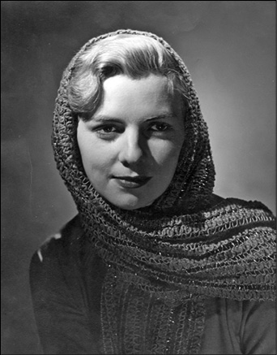
Karpat’ın hayatındaki en önemli ve belki de tek aşkı Shirley Chamberlain. Birleşmiş Milletler’de çalışırken tanıştılar.
Aynı yerde mi çalışıyorsunuz?
Yok. O başka bir bölümün genel müdür sekreteriydi. O da üniversite tahsili yapmış bir insan. Ben de üniversite tahsilimi yapmış artık doktoramı alacak vaziyetteyim, seviye bakımından da çok iyi anlaşıyoruz, bu arkadaşlık gayet sakin ama derin bir şekilde oluştu. Artık devamlı beraber olmaktan söz etmeye başlamıştık. Onun vazifesi var, geliri var. Ben Birleşmiş Milletler memuru olarak profesyonel kategoride ondan daha yüksek bir mevkideyim. Artık benim de durumum sağlamlaşmış gibi gözüküyor, böylece bir aile kurarak devamlı birlikte olma imkânı hasıl olmuş ve bunu ciddi olarak düşünmeye başlamışız. Beraber oluyoruz ama beraberlik bir dereceye kadar, hâlâ platonik alanda kalan fakat derin kökler salan bir arkadaşlık şeklinde. Olaylar bu şekilde gelişirken 1953 senesinde, (Birleşmiş Milletler’de iki sene çalışmışım), bir gün bir telefon geldi, “Efendim sizi Türkiye’nin Birleşmiş Milletler temsilcisi sefiri olan Selim Sarper görmek istiyor.” Allah Allah, ben Selim Sarper’i tanıyorum…
Sefir sorgusu
Selim Sarper’i nereden tanıyorsunuz?
O Birleşmiş Milletler’e tayin edildiğinde ben de International House’da Öğrenci Konseyi başkanı idim ve Selim Sarper’i Türkiye hakkında bir konuşma yapması için davet etmiştim, hatta onu ben takdim etmiştim. Ondan sonra bir iki defa daha görmüştüm ama bir yakınlığımız olmamıştı. Onun için beni bu şekilde davet etmesini biraz garip karşıladım yani, gittim bürosuna beni sorgulamaya başladı:
“Siz Birleşmiş Milletler’e nasıl girdiniz?”
(Birleşmiş Milletler kurallarına göre Birleşmiş Milletler serbest olarak memurlarını seçme hakkına sahip.)
“Ben” dedim, “bu şekilde girdim.”
“Nasıl oluyor da “ dedi, “bizim bundan haberimiz olmuyor, burada Türkiye’yi ben temsil ederken.”
İkide bir de adeta “Türkiye benim, bana sorulmadan bir kişiyi nasıl işe alırlar?” diyordu. Çünkü her ülkenin bir kotası var, memur kotası var, beni de o kotadan almışlar ve ben onun haberi olmadan girmişim. “Benim oraya girmem gayet normal, kurallara uygun” dedim. “Ha sen ona bakma” dedi “kurallar vardır fakat bir yerde güç sahibi adamlar, söz sahibi adamlar da vardır, onlara danışılması lazımdır.” “Benim” dedim “herhangi bir şekilde kanunlara ters düşme gibi bir durumum yok, evet kanunlar vardır ama kanunlar üzerinde de bazı şeyler vardır.” “Sen solcu musun?” dedi. “Valla” dedim “ben kendimi şu veya bu kategoriye sokmam, Birleşmiş Milletler’de Sosyal Planlama İşleri’nde çalışıyorum ki bu Birleşmiş Milletler’in kendine konu edindiği ana sorunlardan bir tanesi.”
Esas olarak solcu olup olmamanızla mı ilgileniyorlardı ya da öyle mi görünüyorlardı? Konuşma nasıl devam etti?
Aynen aklımda kaldığı gibi aktarayım, konuşma şöyle gelişti:
“Peki Sosyal İşler’de ne yapıyorsun?”
“Efendim işte bize çeşitli ülkelerden şehircilik konusunda, köy gelişmesi konusunda bir sürü rapor gelir, ben o raporları okuyorum, hülasasını yapıyorum, bizim şeflere bildiriyorum ve onlar da ona göre karar veriyorlar.”
“Söyle, sen komünist misin?”
“Hayır efendim, böyle bir şeyim yok benim.”
“Zekeriya Sertel’le akraba mısın?”
“Zekeriya Sertel’i tanımıyorum, ismini biliyorum o kadar.”
“O da Romanyalıdır, bilmiyor musun?”
“Haberim yok.”
“Yani senin onunla bir akrabalığın yok demek?”
“Yok, hani olmasına da bir ihtimal veremiyorum. Serteller’in nereden geldiklerini ne yaptıklarını bilmiyorum, isimlerini gazetelerden biliyorum.”
“Gel hakikati söyle, sen komünist misin değil misin?”
“Yok, değilim.”
“Askerliğini yaptın mı?”
“Hayır yapmadım, daha dört sene müddetim var. 29 yaşındayım, dışarıda tahsil görenlere 32 yaşına kadar süre tanınıyor. Ve ben o süreyi doldurmadım, hâlâ üniversitede doktora kaydım var.”
“Hadi canım senin o üniversite kaydın uydurma bir şeydir, askerden kaçmak için.”
“Hayır ne münasebet efendim, doktora yapıyorum her şeyim belli.”
“Seninle tanışmış mıydık?”
“Evet, Türkiye’yi tanıtmak amacıyla, ben sizi davet etmiştim, International House’da bir konuşma yaptınız ve ondan sonra bir iki defa görüşmüştük.”
“Pekala, hadi şimdi sen git.”
Gittim. Fakat sarsıldım, “Ne demek oluyor bu? Nereden çıktı bu sorgu birdenbire?”
Ee, Celal Bayar’ın akrabasını dernek başkanı seçtirmemenin de bir bedeli olmalı…
Hem de ne bedel! Daha bitmedi, esas şimdi anlatacağıma bakın. Aradan biraz zaman geçti, ilkbahar geldi, bu defa Konsolosluk’tan bir telefon, “Lütfen konsolosluğa gelir misiniz?” Gittim.
“Bizim Genelkurmay’dan gelen bir yazı var, onu okuyun ve imzalayın.” Yazıyı önüme koydular. Yazı şöyle bir şeydi: “Bize, Kemal Karpat isminde bir kişinin Türkiye’ye dönüp askerliğini yapmak istemediği bildirilmiştir. Böyle bir şey olup olmadığının ve gerçekten Kemal Karpat’ın askerlik yapmak isteyip istemediğinin kendisine sorularak ve imzası alınarak teyit edilmesi…” Başımdan vurulmuşa döndüm. “Askerliğimi yapmayacağım” demek vatandaşlıktan çıkarılacağım demektir. Meğerse ne olmuş? Herhalde bu müfettişlikten başlayan hoşnutsuzluk ve orada gene Birleşmiş Milletler’de çalışan ve kendilerini büyük milliyetçi gören bazı kimselerin benden hoşlanmamış olmaları, daha doğrusu beni kıskanmaya başlamalarıyla devam eden bir durum. Çünkü Sefir bana şunları da söylemişti: “Sen Türklerin arasına katılmıyormuşsun, Türklerle dostluğun yokmuş. Seni, Birleşmiş Milletler’de çalışan bir Sovyet memuruyla yemek yerken görmüşler.” Benim bölümümde, benden bir iki kapı daha geride çalışan Rus bir zat vardı ve bir iki defa öğlen yemeğe inerken asansörde karşılaşıp öğlen yemeğine beraber gitmiştik. Bunu anlatmış “ve evet, oturduk yemek yedik, havadan sudan söz ettik, herhangi bir şey yok” demiştim. “Siz biliyor musunuz, onlar Sovyetler Birliği’nin ajanlarıdır” diye üstelemişti Sefir. “Ajanları olabilir, benim haberim yok, benim bildiğim, onlar da benim gibi Birleşmiş Milletler memurudur ve aynı bölümde çalışan iş arkadaşlarıdır. Onlarla fazla bir alışverişim yok. Hem benim vazifem ayrı, onların ayrı. Ben doğrudan doğruya müdürün yardımcısı olarak çalışıyorum” diye cevap vermiştim.
Açığınızı bulmak için takip edip bilgi toplamışlar yani…
Evet demek ki bunların hepsi buraya bildirilmiş ve bu defa Genelkurmay’dan gelen kağıt: “Kemal Karpat askerliği yapmak istemiyor!” Hemen cevap döşendim, “Hiçbir yerde, hiçbir zaman, hiç kimseye ben askerliğimi yapmayacağım diye bir şey söylemedim. Tam tersine, ben zamanı gelince her vatandaş gibi askerliğimi yapacağım ve yapmaya da hazırım. Bu nedenle, “askerliğini yapmak istemiyor” diyenler baştan aşağı yalan söylemiştir, böyle bir şey yok ve ben de bunun nereden çıktığını ayrıca bilmek isterim” diye yazdım, imza ettim gönderdim. Sonra Birleşmiş Milletler’e geldim ve müdüre anlattım, “böyle böyle” dedim. Daha sonra Birleşmiş Milletler’e bizim temsilcilikten bir yazı gelmiş. Çünkü benim kontratımın yenilenme zamanı da geliyor ve Birleşmiş Milletler’in personeli de bunlara bildiriyor. Oradan cevabi bir yazı gelmiş, “Kemal Karpat askerliğini yapmadığı ve yapması gerektiği için kontratının yenilenmemesi…” Bu şekilde, hayatımdaki en büyük haksızlığa uğradığımı, haksız iftiralarla kariyerime son verilmek istendiğini gördüm. Gittim Sefiri gördüm, “Beyefendi bu meseleyi ben anlamıyorum, ne demek oluyor bu?” “Sen git askerliğini yap önce” dedi “yap gel o zaman, ben seni yine Birleşmiş Milletler’e tayin ettiririm, şimdi itiraz etme” falan. “Ama istersen burada kalırsın” dedi “vatandaşlıktan çıkarsın, Amerikan vatandaşı olursun, Türkiye ile de bu şekilde alakan kesilir.” Yani “senin gibi adama Türkiye’nin ihtiyacı yok” gibi bir tavır takındı.
Ya vazife ya aşk
“Gözden çıkarıldın” havası…
“Gözden çıkarıldın, sen git artık.” Nitekim askerliğimi tamamlayıp geldikten sonra ona gitmiştim (vaadi vardı ya), ama artık ben dersimi almışım, kararlarımı vermişim bir taraftan. Beni gördüğünde ilk iş “sen subay oldun mu” diye sormuştu. Çünkü o devirde bu gibi siyasi şüpheliler subay yapılmıyor, kıtada sakıncalı gözüküyor ve yurtdışına çıkmalarına ve devlet vazifesi almalarına engel olunuyordu vesaire. İlk sorduğu buydu, “subay oldun mu?” “Siz bana böyle vaat etmiştiniz onun için geldim” demiştim. “Bakarız” falan diye geçiştirmişti. Neyse öncesine dönelim, o gün bir karar arifesine gelmiştim, Shirley’e meseleyi anlattım: “Bak” dedim “beni bu şekilde vazifeden atmak ve Türkiye’ye göndermek istiyorlar, ne yapalım, ne düşünüyorsun?” dedim. Shirley, “Evet” dedi, “sana haksızlık yapıldığı aşikar, ben çalışırım, vazifem var, sen tezini yazarsın, ben ikimize yetişecek kadar para kazanıyorum, evlenir otururuz ve böylece beraber kalırız…”
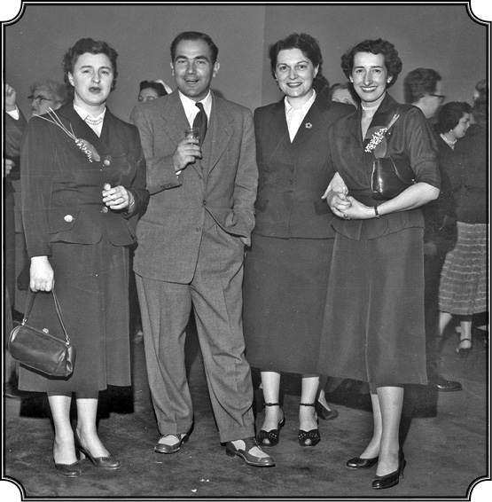
Kemal Karpat 1953’te askerliği nedeniyle ayrılmak zorunda kaldığı Birleşmiş Milletler’de kendisi için düzenlenen uğurlama partisinde sekreterlerle.
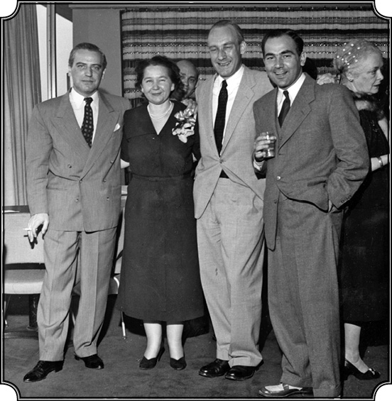
Karpat, askere uğurlanırken şerefine verilen partide B.M. Sosyal Planlama Bölümü’nün amirleriyle.
Yani sizin Amerikan vatandaşı olmanızı mı istedi?
Evet. Amerika’da kalmamı istedi, “Gidip de ne yapacaksın?” dedi, “bak bu kadar haksızlığa uğramışsın.” “Hakkın var” dedim, “kalmak istiyorum seninle, fakat burada bunun çok daha ötesinde, çok büyük bir mesele var. Bu adamlar beni adeta düşman yerine koyarak vatanımdan ayırmak istiyorlar. Ben askerlik hizmetimi yapmamak durumuna düşmüş olacağım, bunu hiçbir zaman kendime yediremem. Sorumluluklarımı yerine getirmek ve üzerimde herhangi bir şüphe varsa, bunları da yok etmek isterim. Eğer ben şimdi gidip askerliğimi yapmazsam bu şüphelerin hepsi doğrulanmış olur. Onun için benim kararım Türkiye’ye bir an evvel gitmek, askerliğimi yapmak.” O bu kararım karşısında irkildi “Ama” dedi “ne yapacaksın orada tek başına. Bak o Sefir de senin aleyhine konuşmuş?” “Sefir de” dedim, “başka yerden aldığı bilgilere dayanarak böyle davranıyor, artık ona bu bilgiyi kim vermiş bilmiyorum, fakat Türkiye’ye gitmemek, askerlik vazifesini yapmamak, aleyhime söylenenleri doğru çıkartır ki ben bunu yapamam.” “Üstelik” dedim “ben askerlik vazifemi temel vazife olarak biliyorum, onu yapmam gerek.” “Yapılacak iş şu” dedim, “ben giderim, askerliğimi yapar dönerim ve o zaman ne yapacağımızı kararlaştırırız. Çünkü eğer ben vazifemi yapmazsam, hayatımın sonuna kadar rahat olamam, vicdanım beni rahat bırakmaz, ben böyle adam değilim.” “Korkmuyor musun, ya sana bir şeyler yaparlarsa?” dedi. “Şunu yaparlar, bunu yaparlar ama korkmuyorum” dedim, “ben her yerde alnı açık bir insan, doğru bir insan olarak yaşadım.” Ve ona hatırlattım, “Ben Türkiye’den gelirken, her şeyden önce doğru, dürüst hareket edeceğime, korkusuz hareket edeceğime ve Türkiye’yi tanıtacağıma yemin etmiştim.” Gitme kararıma çok üzüldü. “Sen vatanını, vazifeni bana tercih ediyorsun demek” dedi, yani “beni yeteri kadar sevmiyorsun demek?” “Hayır” dedim “hiç öyle düşünme, bunların ikisi de ayrı işler, öyle görmeni istiyorum.” Fakat o anlayamadı, kabullenemedi bunu, anladım ben. Çünkü Amerikalılar benim anlattığımı anlayacak tarzda yetişmiş değiller. Üstelik benim nasıl bir ortamdan geldiğimi, nasıl buraya kadar geldiğimi anlamıyor, anlar gibi oldu fakat yine de anladım ki pek içinden kabul edemiyor. Tekrar, “ben bakarım sana, çalışırım” dedi. İşte Amerikan mantalitesi. “Önemli olan senin mutluluğun değil mi? Beraber olmak sana bu mutluluğu vermiyor mu?” Bunu söyleyip duruyordu.
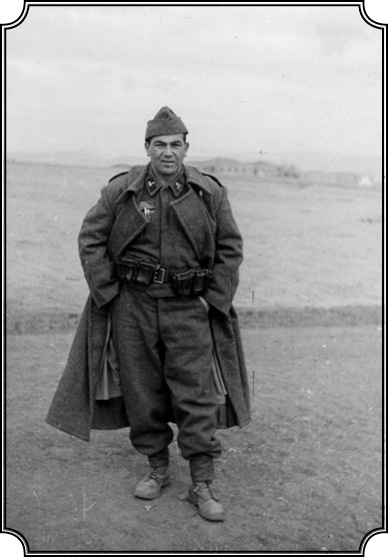
Ankara’da askerliğini Yedeksubay olarak yapan
Karpat kıta hizmetinde (1953).
Bu sadece Amerikan değil biraz da kadın erkek farkı nedeniyle galiba.
Evet. Sonunda kabul etti “Peki o halde git, ben beklerim” dedi. Nihayet bu durumda ben de her şeyi olduğu gibi bıraktım, tezimi vermemişim, bıraktım. Birleşmiş Milletler’de büyük bir geleceğim varken onu bıraktım. Biriktirebildiğim 3-5 kuruş vardı, onları yanıma alıp, Shirley’e de veda ederek vapura binip Türkiye’nin yolunu tuttum. Paris’e geldim. Gene trenle Avrupa’dan geçtim ve Türkiye yakınlaştı. Türkiye’ye yaklaştıkça her şey gözüme daha karanlık gözükmeye başladı. Karamsardım artık. Moralim bozuktu. Hayal kırıklıkları içindeydim.
Doktoran varsa Başçavuşsun
Salt kendinizi ispatlama uğruna her şeyi bırakıp dönüyorsunuz, alttan alta tepki de biriktiriyorsunuz tabii.
E tabii. Artık kızıyorum bu duruma düşürülmeme. Neyse ilk iş olarak Beşiktaş’taki askerlik şubesine gittim ve o devreye yetiştim. Artık önüm kapkaranlık, ne olacağı bellisiz. Elimde kağıtlarım, askerlik şubesinden Karaköy’e, oradan vapura binip Haydarpaşa’ya geçtim. Sonsuz bir yolculuk gibi geldi bana, trene bindim doğru Ankara’ya. Ve Ankara’da da Yedek Subay Okulu’na giderek evraklarımı verdim. Kaydettiler, ondan sonra meydana çıkardılar, rastgele dizdiler, saymaya başladılar; ilk yüz kişi 1. bölük, sonra 2. bölük, 3. bölük. Benimki 5. bölüktü. Gayet pratik, orada takdirle karşıladığım bir şey oldu bu. Bakınız bu kadar güç görülecek bir şeyi gayet pratik halletmişler, yani bir saat içinde bin kadar yedek subay adayını bölüştürdüler. İşte imtihanlar olmuştu, kimisi topçu, kimisi bilmem ne olmuş. Ben öyle topçu, şu bu olmak istemiyorum ve piyade yedeksubaylarının Ankara’da kaldığını öğrenince piyade olmak için gereken her şeyi yaptım, yani o testlere, sorulara doğru dürüst cevap vermedim ve piyade olarak yedek subayda kaldım. Bizi böylece 5. bölüğe verdiler, hemen sınıfa soktular ve kaydetmeye başladılar, “kim, nedir?” Sıranın başında iri yarı Karadenizli bir arkadaş vardı, kayıtları yapan teğmen bir baktı onun boyuna posuna “Sen” dedi “bölüğün başçavuşusun”, ondan sonra ilan etti: “Bu bölüğün başçavuşudur.” Bölük başçavuşu, işte bölüğün yoklamasını yapıyor, dışarıya çıkarıyor, yani ufak tefek bu gibi hizmetleri görüyor. Sıra bize geldi, biz arkada birkaç kişi kalmıştık. Bu arkada kalanların hepsi üniversite mezunuydu. Geri kalanlar lise mezunu. Sıra bana geldi, “Tahsilin ne?” Artık Romanya’yı söylemiyorum “Haydarpaşa Lisesi, Hukuk Fakültesi, Washington Üniversitesi.” Adam baktı bana, “New York Üniversitesi doktora haa” “Oo senin doktoran mı var?” dedi. Tabii benim ayarımda orada kimse yok, “O halde seni başçavuş yapalım” dedi. Onu çok iyi hatırlarım komik olmakla beraber çok tatlı şeylerdi, “Dikkat dikkat” dedi teğmen “yeni bir başçavuşunuz var. Bu arkadaş başçavuşunuzdur” dedi ve ben orada başçavuş oldum, yani ömrümde bu kadar çabuk…
Terfi etmemiştiniz.
Terfi etmemiştim. Öbür arkadaş, iri yarı ama iyi çocuk, o boynu bükük yerine oturdu ve ben böylece bölüğün başçavuşu olarak vazife görmeye başladım. Askerliğim bu şekilde başladı. On sekiz ayın altı ayı kıta hizmeti ve ondan sonra uygun görülenler, asteğmen olarak çıkıyor. Sonradan öğrendiğime göre benim hakkımda bir sürü yazı gelmiş, bizim bölüğün kumandanı olan kıdemli üstteğmen vardı ondan öğreniyorum. Ben askere geldiğime o kadar memnun oldum ki ve hâlâ da memnunum. Çünkü bir kere orada Anadolu’nun, Trakya’nın her tarafından gelmiş, her çeşit insanla tanışma fırsatı buldum. Askerleri ve askeri mantaliteyi, yakından izleme şansım oldu ve burada her şeye rağmen bir mertlik gördüm.
Orada da boş durmamışsınızdır?
Evet fotoğraf çekiyorum. Ne yapayım, yapım bu. Eski fotoğrafçılık mesleğimi de hiç bırakmıyorum, arkadaşların fotoğrafını çekiyorum ve masrafı karşılığında dağıtıyorum.
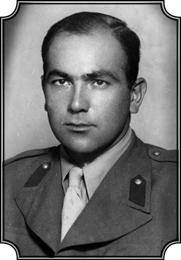
Asteğmen Karpat yedeksubay okulunun tercümanı olarak Amerikalı subaylarla Türk subaylar arasında tercümanlık yaptı.
Gene Kodak mı var elinizde?
Elimde bir Kodak var ama bu defa çok daha güzel, Amerika’dan aldığım bir makine, onunla çekiyorum. Sadık isminde bir arkadaş filmleri alıyor, götürüyor, tabettiriyor, getiriyor, dağıtıyor. Hani bu hizmeti tamamı ile masrafını karşılayacak şekilde yapıyorum. Bayağı da usta olmuştum. Kıdemli Üsteğmen Mehmet, onun da çocuğu doğmuş, bana “Başçavuş” dedi, “benim çocuğun resmini çeker misin?” “Başüstüne” dedim. Evine gittim, kendi resmini, çocuğunu falan çektim ve bana o zaman demişti işte: “Bak başçavuş söyleyeyim sana, senin hakkında birçok yazı geldi, bizden senin hakkında rapor istediler, tehlikeli misin değil misin diye. Biz de cevap yazdık: ‘Emir verdik emri yerine getirdi, başçavuş olarak çok güzel hizmet gördü. Kimsenin yapamadığı işleri yaptı, sert söz kullanmadan ikna yoluyla, bütün bölüğü istediği gibi yönetti. Herkes onun sözüne hürmet ediyor, subayların emriyle bölüğün yapmadığı işi o tek sözüyle yaptırıyor, bu kadar hürmet görüyor’ diye görüşlerimizi bildirdik” dedi. Ve o zaman dedim kendi kendime “İşte gene de bir yerde bir insanlık, mertlik kalıyor.” Ve halk arasından gelmiş insanlara karşı, onların dürüstlüğüne karşı olan saygım ve sevgim bir kat arttı. Bir yerde Türkiye’nin en üst makamlarına çıkmış, tanınmış bir ailenin çocuğu, bir sefir, Türkiye adına konuşuyor, bana haksızlık yapıyor ve bir başka yerde bir kıdemli üsteğmen, Anadolu’nun bir köyünden kopmuş gelmiş kendi başına, fakat mert bir adam, “bu doğru bir adamdır” demek cesaretini gösteriyor “her şeyine baktık, gördük ve hepimizin ona karşı sevgisi vardır” diyebiliyor.
Bravo. Nereliymiş bu Mehmet üsteğmen?
Orta Anadolu, ya Niğdeli ya Aksaraylı. Görünüşü, konuşuşu kaba fakat içi asil bir adam, ne oldu, nereye gitti bilmiyorum fakat bende bizim halkımızın timsali olarak, bir asker olarak çok derin, minnetle dolu bir hatıra bıraktı bu adam. Evet diğer taraftan personele bakan bir yüzbaşı vardı, beni ne yapıp edip kıtaya göndermek istiyordu fakat muvaffak olamadı.
Devletin içindeki ejderha
Bu arada sevgiliniz Shirley ile yoğun mektup trafiği vardır herhalde. Neler yazıyordunuz birbirinize? Hani derler ya “askerlikte sevda çekmek zordur” diye…
Evet, Shirley ile yazışmamız devam etti, bana sürekli mektuplar gönderdi. Hep çok özlediğini yazıyordu ama daha çok şöyle cümleler vardı: “Bu ızdırap bir an evvel bitsin. Seni benden uzaklaştıran herkese ve her şeye lanet ediyorum.” Bu gibi mektuplar içimi hüzünle doldururdu, halen de okuduğumda öyle olurum. “Bir an evvel bitsin!” Ben de aynı şeyi düşünüyorum tabii, işte bu mektuplaşma böyle bir sene kadar devam etti. Bir ara mektupların arası uzadı ve nihayet “Artık ben tahammül edemeyeceğim” diyen bir mektup geldi. Araya galiba bir kişinin dedikodusu da girmiş, bu şekilde hani “ben artık verdiğim sözü yerine getiremeyeceğim”e geldi iş. Beynimden vurulmuşa döndüm.
Sizden ümidi kesmiş, başka birisi var arada herhalde?
Anladığım kadarıyla bir başkası varmış ve ona evlilik teklif etmiş. Uzun müddet beklemiş fakat benim ne olacağım meçhul. Yeni tanıştığı adamın mevkii falan da varmış. Ben burada bir hiçim, hâlâ askerim. Bu kadar seneden sonra, bu kadar didişmeden sonra sevdiğim, sevebildiğim bir insana kavuşmuştum ve ben hak ettiğim mutluluktan, devlet adına hareket eden, devleti temsil eden bir gücün haksız darbesiyle alakonulmuşum. Bir zaman kendime gelemedim açıkçası, hani aile kurma, sevme vesaire ne varsa hepsini Shirley’e bağlamışım. Bazı insan var böyledir, her şeyimi birden vermişim. Ben bir dostluktan bir dostluğa, durmadan kadın değiştirmeye vesaireye müsait karakterde birisi değilim. Her şeyde olduğu gibi köklü, ciddi, insanlığa yakışır şekilde hareket etmek isteyen bir insanım. Tahsil hayatımda hep ciddi şeylerle uğraştığım gibi, şahsi hayatımda da daima kimliğimi, şerefimi, muhafaza ederek yaşamışım ve bu aile konusunda da bu şekilde bir hayat beraberliği olabilecek bir ilişkiyi buldum diye düşünüyordum. Tabii bu olaydan sonra da evlendim ama artık deyim yerindeyse bir duygusal iniş başladıktan sonra…
Duygusal olarak hayatınızda en yüksek noktaya ulaşmışken, önce devlet adamı kimliğiyle hareket eden kişinin sonra sevgilinizin darbesini yiyorsunuz ve duygusal olarak çöküş yaşamaya başlıyorsunuz. Biri Türk, biri Amerikalı. Geri dönmek veya kalmak konusunda düşüncelerinizi nasıl etkiledi bu durum?
Bir iniş başladı. Fakat tam o inişin başladığı noktada da birdenbire her şey aydınlandı. “Nasıl? Böyle benim gibi mütevazı yaşamış, milletine, vatanına bir şeyler yaparak katkıda bulunmak istemiş ve Batı’da kendi başına en yüksek mevkilere ulaşmış, Türkiye’nin ismini daima ve daima güzel olarak tanıtmış, savunmuş bir kişi nasıl haksızlığa uğrayabilir, bunu yapan kimdir? Devlet bunu nasıl yapabiliyor? Sorumsuz olarak devlet adına hareket eden bu insanlar nasıl yapabiliyor bunu? Beni nasıl hak ettiğim bir mutluluktan mahrum ediyorlar? Nasıl böyle hissiz, bilgisiz, görgüsüz davranabiliyorlar?” Bunları soruyorum sürekli. “O halde” dedim “burada asıl mücadele edilmesi gereken mesele, bu devlet adına hareket eden, ruhsuz, kalpsiz, insanları hiçe sayan bu ejderhanın maskesini indirmek, bunun yerine daha insana yakın bir yüz, bir varlık koymak için çalışmak. Topluluğu, bizim topluluğumuzu, kültürüyle, varlığıyla, olduğu gibi gösterecek bir devlete ihtiyacımız var bizim” Burada kastettiğim ejderha belirli bir alana yerleşmiş bir devlet memuru meselesi değildi, sadece bürokrasi değildi. Bütün bunların arkasına saklanan ve devlet adına kişiyi, onun insanlığını mahveden bir kültür, bir ejderha vardı. Bunu anlamak, tayin etmek ve buna karşı mücadele etmek gerekiyordu.
Bu “ejderha”, bir devlet anlayışı, yönetme tarzı olarak bir tabaka tarafından da benimsenen ve kullanılan bir tarz olarak hep yaşadı değil mi?
Evet, bu ejderha hep var oldu. Fakat o zaman devlet içindeki ejderha olarak gördüğüm şeye karşı “mücadeleyi nasıl yapmalıyım?” düşüncesi vardı kafamda. “Hayır” dedim “sınıf mücadelesiyle, şunla bunla olamaz.” “Bu mücadele ancak demokrasiyle olur, gerçek demokrasiyle olur” dedim. Türkiye ancak gerçekten demokrasiye kavuşursa, bu mekanizmayla devlet içinde bu tür ejderha anlayışıyla çalışanlara karşı, ejderha ilişkisi kuranlarla, mücadele edilebilir diye düşünmeye başladım.
Ejderha ve Türk Demokrasi Tarihi
Bu demokrasinin yolu nereden geçiyordu?
Tabii ki bir taraftan siyasi mücadele gerekiyor. Ben Türkiye’nin gerçek demokrasiye ulaşması için gerekenin yapılmasına inanıyordum ve kendi adıma bunun için ilk adımı atacaktım. Bu ilk adım da Türkiye’nin içini, siyasetini olduğu gibi göstererek, demokrasi yolundan yürüyerek demokrasinin mümkün olacağını ispat etmek olacaktı. İşte orada Türk Demokrasi Tarihi kitabının yani aslında benim tezimin konusu böylece belirdi. Türk Demokrasi Tarihi’nin neden yazıldığının kökleri buradadır. Ben o tarihe kadar “tezimi ne üzerine yazayım” diye düşünüyordum. Çeşitli konular üzerinde duruyordum fakat orada Shirley’den aldığım bu mektupla, kendi saadetimin, mutluluğumun yok olduğunu gördüğüm zaman beni bundan mahrum eden, bu düşüncesiz devlete karşı, insanlığa, bizim insanımıza, topluluğumuza hizmet olarak, bu yolu seçmeye, demokrasi yolunu seçmeye karar verdim. Evet, öteden beri demokrasiye, daha evvelden anlattığım gibi, büyük bir yakınlığım vardı. Çünkü bence demokrasi, kuru bir siyasi şekil değildi. Her insana olduğu gibi yaşamayı, olduğu gibi görünmeyi, özünü muhafaza etmeyi, kültürünü muhafaza etmeyi ve böylece ileriye doğru adım atmayı sağlayan bir sistem olarak görüyordum. “Böyle bir hava içinde insanlar, başka insanlara rast gele haksızlık yapamazlar” diye düşündüm ve böylece askerliğimin ortasında yeni yolumu, düşüncemi tayin ettim ve hemen çalışmaya başladım. Yedeksubay’da akşamları serbesttik, Ankara’da mütevazı bir daire kiralamıştım, Sıhhiye’de. Asteğmen olarak aldığım 170 liralık maaşım vardı, bir de Amerikan Kültür Derneği’nde öğrencilere verdiğim İngilizce dersleri sayesinde ayda 800, 900 lira kazançla, maddi bakımdan güvenli bir hale gelmiştim. Artık kararım kesindi: Doktora tezim Türkiye demokrasisi olacaktı. Vaktim olduğu nispette, bilhassa akşamları, öğleden sonra, haftasonları Kızılay’da Milli Kütüphane’ye giderek bu konuda çalışmaya ve malzeme toplamaya başladım. Kitapçılardan Türkiye’nin demokrasiye geçişini anlatacak malzemeleri, parti broşürleri ve programlarını topladım, bazı kişilerle de görüştüm.
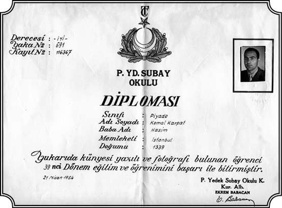
Yedek Subay Okulu Diploması, 21 Nisan 1954’te verilmiş. Burada doğum tarihi hâlâ eski (Hicri) takvimle yazılı; “1339”. Karpat 1923 doğumlu.
Askerlik engel olmadı mı tüm bu çalışmalara?
O sıralarda da zaten terhis oldum, 1955 senesinin yazıydı, on sekiz ay tamamlanmış oldu. O zaman Ankara’da Birleşmiş Milletler Temsilciliği vardı. İdare memurluğu açtı, beni Birleşmiş Milletler’den tanıyorlardı, bana yapılan haksızlığı da biliyorlardı ve orada idari hizmetlerde aşağı yukarı altı ay kadar çalıştım. 2.000 dolar kadar param da birikmişti ki o devirde büyük paraydı. Bu parayla rahatça bir sürü malzeme topladım. Akşamları yahut fırsat bulduğum herhangi bir zaman Milli Kütüphane’ye gidiyordum. Maksadım, her şeyi bir yana bırakıp tezimi yazmaktı. Artık tez benim için, bir doktora almak amacının çok ötesinde bir yerde, bir hesaplaşmaydı. Türk siyasetini tüm cephesiyle olduğu gibi göstereceğim, propaganda yapmayacağım, ideoloji yapmayacağım, artık benim olgunlaşmış kafamla, artık sukutuhayale uğramış şahsi hayatımla ve sukutuhayale uğramış kalbimle, insan olmaya devam edeceğim. Hakiki bir ilim adamı olarak kalacağım ama gerçekleri söyleyerek, herkesin kabul edeceği gerçekleri ilmi bir dille söyleyerek şu haşin ve gizli kuvvetlerle açıkça mücadele edecek, hesaplaşacağım. Diyebilirim ki tezimin konusu hesaplaşma olabilirdi ama ben bunu, bu hesaplaşmayı verici, yapıcı, kalıcı ve ileride fayda getirici bir şekilde yapmaya karar verdim. Artık benim şahsi ıstırabım, acılarım, daha yüksek bir ideal için çalışmanın, daha verimli olmanın önünde engel olamazdı. Bir yerde insan olmak, insan olarak kalmak, acılarımı kötülüğe dönüştürerek değil, iyiliğe, yapıcılığa dönüştürerek çalışmak isteyen bir insandım, bu karar verilmişti. Ve o zaman sınırdan girerken ettiğim yemin aklıma geldi. O dakika o saate kadar yeminime sadık kalmıştım. Dürüst, korkusuz ve topluma, insanlara faydalı olacak şekilde çalışmıştım ve şimdi de öyle devam edecektim. Kötülük yapmak ve intikam almak, asla ve asla aklımdan geçmeyecekti ve dedim “eğer benim bu tutumum misal olabilecekse ne mutlu bana.” İşte bu şekilde 1955’in sonunda bütün evraklarımı, her şeyimi toplayarak New York’a geldim. Hemen Manhattan’da, gene Riverside Parkı’na yakın 88. Sokak’ta küçük bir apartman dairesi buldum ve New York’a ulaşmamın üçüncü günü tezim üzerinde çalışmaya başladım. Böylece hayatımın büyük bir safhası kapanmış, yepyeni bir safhası açılmıştı.
O geldiğiniz günlerde Birleşmiş Milletler’e gittiniz mi? Eşinizi dostunuzu görmeye.
Birleşmiş Milletler’e gittim, arkadaşları gördüm. İşte o sıralar yine Selim Sarper’i ziyaret ettim, “geldim bakınız” diye. Fakat ben artık kararımı vermiştim, devletle bir işim olmayacaktı, devletten bir nimet beklemeyecektim. Kararlıydım, hatta “Birleşmiş Milletler’e git sana eski vazifeni veriyoruz” deseler de kabul etmeyecektim. Ben artık müstakil olarak, kendi başıma buyruk olarak yolumu tutacaktım. Eğer çalışmalarım başarılı olursa, akademiye girecek ve Amerika’da ve dünyanın birçok yerinde, üniversitelere tanınan özgürlük havası içinde asıl mücadelemi verecek, düşüncelerimi geliştirecek ve insanlara, toplumuma, milletime hizmetimi o şekilde yapacaktım, kararlıydım. Selim Sarper’in yanından çıkarken “Beyefendi” dedim, “teşekkür ederim, size ihtiyacım yok benim ama yine de teşekkür ediyorum size, çünkü siz bana kendi ayaklarım üzerinde durmayı, size ve sizin gibi kimselere muhtaç olmadan yoluma devam etmeyi öğrettiğiniz. Siz bunu anlamazsınız.” Ve çıktım. Bu, Selim Sarper’i son görüşüm oldu.
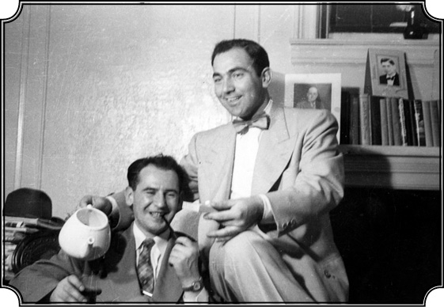
Amerika’da, Yeni Zelandalı Robert Hopkirk ile. Hopkirk, Karpat’ın Birleşmiş Milletler Cenevre Bürosu’nda yüksek mevkide görevlerde bulunmuş bir arkadaşı.
Bir şey diyemedi mi,”Ne demek istiyorsun sen?” falan diye.
Diyemedi çünkü vakit olmadı, böyle şeylere alışık değildi, anlamamıştı. Belki çok iyi bir adamdı ama benim nazarımda bir bürokrat kafalı, devletlû, “Osmanlı devletlû”su gibi bir adamdı. Ben halktan gelmiş, milletimin bir parçası olan, alelade, basit ama hür bir kişiydim. O özgür değildi. Sefirdi, zengindi hatta İstanbul’un büyük ailelerinden birisine mensuptu ama bu benim gözümde bir hiçti. O devletlûydu, ben kuldum ama bilinçli bir kul, kendine güvenen bir kuldum. Ben hürdüm, vicdanım hür, kafam hür, istediğim yere gider, istediğim yerde konuşur, insan olarak benliğimi ifade eder ve kimseye hesap vermezdim. O hesap verirdi, vermek zorundaydı her adımını izah etmek zorundaydı. O, mevki ve siyasi güç ve zenginlik uğruna devlete köle olmuştu, ben ise inancını korumuş gerçek manada hür bir kişiydim. İşte böylece tekrar 1955 yılının sonunda geldim, 1956 yılının başında odamda oturup evrakları dizmeye başladım. Artık bütün gücümle çalışmaya başlamıştım.
Din biçimsel, iman içsel bir şeydir
Shirley’i görmediniz mi?
Hayır. Hayatım yeniden başlıyordu, Shirley’i aramadım, lüzum hissetmedim, artık eski dostluk olamazdı. Ben başka yol tutmuştum, benim misyonum farklıydı artık, aile kurmak, oturmak, çocuk yapmak yoktu şimdi gündemimde. Belki vakti gelince yapabilirdim. Belki Shirley’i görseydim gene dostluğumuz başlardı fakat zincir kopmuştu. Ben hayata tekrar başlıyordum. Düşününüz çok az bir insana nasip olan devrelerden geçmişim. Sonunda Birleşmiş Milletler’e girmişim, orada sağlam bir durumum var. Fakat beni rahat bırakmayan kuvvet –ama benim içimden gelen ama dışımdan gelen kuvvet– hakiki sevginin ne olduğunu göstermişti. İçim yeni bir sevgiyle dolu olarak yeni bir yolculuğa çıkmak üzereyim. “Ya Rabbim” dedim, “bana sevebilme gücü vermişsin ve bu sayede beni gerçek insan yapmışsın.” Anlatamayacağım meçhul bir alınyazısı varmış gibi düşünüyorum. İnanamıyorum bunlara, alınyazısı, kader gibi şeylere inanamıyorum ama bir yerde olup bitenleri düşündükçe “galiba” diyorum “bu kader yazısına, alınyazısına biraz da hak vermek lazım.” Belki insanın göremediği, tayin edemediği bazı güçler var. Belki insanın kendi içinden gelen özlemler var, bu özlemler ve o özlemlerin yarattığı enerji insanı belli yollara sevk ediyor ve biz buna “alınyazısı” diyoruz ama ne de olsa benim hayatımda bunlar vardı.
Hayatınızın bu bölümünü bitirmeden önce; “bir yerde kadere, alınyazısına inanmıyorum ama hani biraz hak vermek de lazım” gibi sözler ettiniz. İslam’a inanıyorsunuz ama kadere inanmıyorsunuz. İbadetle aranız nasıl? Amerika yıllarında camiye gittiniz mi hiç?
Hemen hemen hiç gitmedim. İbadet olarak evet, belki bir iki defa bayram namazlarına gitmişimdir, ona ihtiyaç duyuyordum fakat ille de ibadet ederek, dindar olduğumu göstermeye lüzum hissetmedim. İçinde var mı? Mühim olan o. Din ile iman arasında büyük fark vardır. Din biçimseldir, iman ise içseldir, ya vardır ya yoktur. İman olmadan dindar olabilirsiniz ama öyle dindarlığın bir faydası yoktur. İmanınız olabilir, dindar olmayabilirsiniz, yani dinin bazı koşullarına uymayabilirsiniz ama din iki şekildedir. Zahiri, batini. Dışıyla, içiyle. Ben içiyle dindarım ama çok geniş manada dindarım, ille şu bu kalıplara sokulmuş bir dindar değil. Benim İslam hakkındaki düşüncelerim safha safha oluşmuştur. İlk olarak ailemin içinde gördüğüm eğitim ve davranış, ikinci olarak Mecidiye Medresesi’ndeki eğitime karşı olan tepkim, sonra 1940’larda Türkiye’de “laiklik” adına yürütülen politika ve nihayet Amerika’ya geldikten sonra yeni kaynaklar bularak İslam hakkında sıhhatli bilgilere kavuşmak gibi dört dönem içinde gelişmiştir. İnanç ve akıl veya ruh ile madde olarak ifade edeceğim ikilem küçük yaşta beni yakından etkilemiştir. İnanç, tüm insanların doğuştan sahip oldukları fıtri bir özelliktir. İnsan olmanın en açık ifadesidir ve başka yaşayan herhangi bir mahluka nasip olmayan bir nimettir. İnanç çeşitli şekiller almakla birlikte en açık ifade şeklini dinde bulmuştur. İnanç ancak ve ancak hürriyet sayesinde tazeliğini, saflığını ve gücünü koruyabilir. Ve gerçek dinler, yani insanların iyiliğini hedef almış dinler, hürriyet sayesinde insanların inanç kabiliyetlerini korumalarını sağlar. Hürriyet adına baskı ile bir hürriyet rejimi kurmak insanın inanç gücünü zedeler. Demokrasi kurmak için diktatörlük yolunu seçmek gibi bir şey. Ama din adına gerçek hürriyeti yok edecek, insanların inanç kudretini yani vicdanlarını zedeleyecek baskı rejimleri de kurmak mümkündür. Vicdanı hırpalayan, insanın inanç gücünü yok edebilecek kurumlar ve sosyal gruplar arasında başlıca olarak devleti ve din taraflı yorumlayan ve uygulayan ruhban, ulema gibi sınıfları saymak mümkündür. Bir devleti veya ulema sınıfını bir baskı unsuru olmaktan alıkoyan tek ana güç, vicdan yani inanç hürriyetini en sıhhatli şekilde benimseyerek kendini onu saf şekliyle korumaya adamış devlettir. Demokrasinin ana manası budur. Din adına giyinmeyi kuşanmayı düzenlemek ve giyimi inancın temsilcisi ya da karşıtı olarak görmek vicdan hürriyetini yaralamaktan öteye gitmez. İkinci mesele aklın insan hayatı içindeki yeri ve rolü ve inançla bir arada yaşamasıdır. Akıl da insanın büyük eşsiz özelliğidir. Akıl insana, hayatını daha sıhhatli ve güvenli yaşaması için verilmiş bir kabiliyet olduğu kadar, iyiyi fenadan, yani şerden ayırmayı, vicdanın emrettiği yoldan yürümeyi sağlayan bir nimettir. Kısacası inanç kabiliyeti ile akıl birbiri ile bağdaşarak birlikte denge halinde yaşadıkları sürece insana mutlu ve dengeli bir hayat sağlayabilir.
Türkiye’ye geldiğinizde devletin vicdan hürriyetine saygı göstermediğini düşündünüz?
Türkiye’ye gelip 1940’larda tatbik edilen laiklik, daha doğrusu kapalı bir şekilde ilim adına yürütülen yarı materyalist devlet politikası ile karşılaşınca bu sefer buna da tepki duydum. Pozitif ilmin, düşüncenin, aklın değerini vermek isteyen görüşü candan destekliyordum. Fakat laiklik adı altında söz ve dine dayanan gelenekleri batıl saymak, İslam’la ilgili her düşünceye geri olarak bakmak, tarihi kasıtlı olarak saptırarak yorumlamak ve ırka dayanan bir milli kimlik yaratmak çabaları benim vicdan ve inanç hürriyetine saygım ve alışkanlığım ile asla bağdaşmamakta idi. Evet Mecidiye Medresesi’ndeki din eğitimine isyan etmiştim fakat benim isyanım dine karşı değil, İslam’ın doğru dürüst, çağına uygun bir şekilde sunulmayışına, onu insandan ve hayattan koparmaya, basmakalıp ölü bir put gibi önüme koymalarına karşı idi. Bunların ötesinde Mecidiye Medresesi ayakta durduğu sürece Dobruca, Türk Müslüman halkının kimliğinin bir ifadesi ve timsali idi. Oradan mezun olanların din ve İslam anlayışı belki çağın çok gerisinde idi fakat onlar o Türk Müslüman halkın sözcüsü ve temsilcisiydi. İşte ben Türkiye’de 1940’larda laiklik ve ilim adına yürütülen ve birçok maddi gericiliğin nedenini İslam’a yükleyen görüşü ve politikayı milletin kimliğini, kültür varlığını tehlikeye sokacak bir davranış olarak görüyordum. Ben Türkiye’ye kendi halkıma, kendi kültürüme hizmet etmek ve bu sayede kendime ve hayatıma bir mana vermek için gelmiştim. Amaçlarıma ulaşmak için, hem vicdan, kafa ve duygu bakımından hem de kültür ve kişilik açısından özümü koruyarak “integral”, yani parçaları birbirine uymuş bir bütün olarak kalmam gerekiyordu, öyle hissediyordum. İstanbul’da üniversitede okuduğum sürece liberalizm, sosyalizm, kapitalizm, sendikacılık ve diğer akımlar hakkında birçok kitap okumuş ve bilgimi genişletmiştim. Fakat bilgim ve tecrübem arttıkça içimdeki boşluk da o derece genişliyor, beni tehdit eden, tanımı çok güç bir yabancılaşma ile mücadele ediyordum. Benim özleyişim İslam veya din özleyişi değil, insan imanının ve vicdanının rahat, güvenli bir şekilde gelişeceği ortamdı. İçimdeki boşluğu bu ortam içinde dolduracağıma inanıyordum. Aklı, ruhu, imanı doya doya besleyecek maddeleri, istediğim yerden istediğim zaman seçebileceğim bir muhit arıyordum. İşte benim Türkiye’den Amerika’ya gelişim ve dinle olan ilişkimin dördüncü ve halen devam eden dönemi böyle oluştu.
Amerika’da kendinizi, kimliğinizi, amaçlarınızı her şeyi sorguladığınız bir dönem geçirdiniz. Çok farklı bir toplum olmasına karşın “özgürlüğü” mü tercih ettiniz sonunda?
Amerika’ya geldikten kısa süre sonra bir kültür şoku geçirerek bir çeşit bunalım yaşadım. Çünkü Amerika benim beklediğim “Batı”dan, alışık olduğum Avrupa kültüründen çok farklı idi. Washington Üniversitesi’nden mastır derecesini alıp New York Üniversitesi’nde doktora kurlarını bitirince bunalımım daha da arttı. 7-8 yıldan beri kültür, gelenek ve tarihleri çok farklı olan üç ülke (Romanya, Türkiye, ABD) içinde yaşamış ve her birine uyum sağlamak için elimden geleni yapmıştım. Romanya ve Türkiye, siyasi rejimlerinin milliyetçi felsefelerine göre kişiyi toplum içinde eritmek istemesine karşılık ABD’de siyasi rejim kişiyi belirli bir kültüre uymak için zorlamıyor. Fakat alabildiğine dinamik ekonomisi ile iletişime dayanan sosyal hayatı ve tüketiciliğiyle yeni bir kültür olarak karşıma çıkıyordu. Aynı zamanda ABD toplumu çok sayıda okulları, kitaplıkları, yayınları ile insanın karşısına hem aklen hem ruhen gelişmeyi sağlayacak seçenekler koyuyordu. Günün büyük bir kısmını hayatını kazanmak için harcayan Amerikalı, ruhunu tatmin etmek için başka şeyler aramaya veya düşünmeye vakit bulamıyor. Ama insan olarak inanç ihtiyacını da tatmin etmek istediği için kurtuluşu kilisede buluyor. Dünyanın hiçbir yerinde kiliseye devam oranı ABD’deki gibi fazla değildir. Aynı şeyi kiliselerin, bilhassa Protestan olanların sayısında da görmek mümkündür. Benim 42.000 öğrencisi olan üniversitemin kampusunun içinde veya hemen bitişiğinde dört veya beş kilise var. Amerika’ya gelen yabancı öğrencileri misafir edenler ya da onlarla meşgul olan kurumlar onları kiliseye davet ederler fakat din değiştirtmek için ısrar etmezler. İlk aylarda ben de merak ederek birkaç kilise ayinine gittim fakat vaazları ve söylenenleri çok şekli ve akılcı bulduğum için bir daha gitmedim. Din, sıcaklık, içten gelen bir ateş, bir özlem ister. İnsanları kısa süre heyecanlandıran, coşturan vaazlar gerçek dinin yerini tutamaz. İşte bu koşullar içinde ben doktora tezi araştırmaları bahanesiyle, daha önce anlattığım gibi, bir daha dönmemek ve bunalımdan kurtulmak için 1950’de ABD’den ayrılarak Türkiye’ye dönmüştüm. Türkiye’de birkaç ay süren mutluluğun, eski hayat çevresine dönmenin verdiği huzurun yerini tekrar eski şikayetler ve peş peşe baskılar almıştı. Bu kez ABD’nin hürriyetini ve kolaylıklarını, kitaplıklarını, serbest yazı yazan gazetelerini özlemeye başladım ve doktoramı tamamlamak için New York Üniversitesi’ne döndüm. Bu kez geçen on yıldaki hayatımı, tecrübelerimi teker teker inceleyerek, sorgulayarak karamsarlığımın nedenlerini araştırmaya başladım. Sonunda anladım ki benim sorunlarımın kaynağı ve neticede çözümü, kimlik ve kişiliğimin özünü doğru tayin etmeye bağlıdır. “Ne olduğunu bilmeyen ve ona göre hareket etmeyen kimse başarı sağlayamaz” diye düşündüm. Müslüman ve Türk doğduğum ve öyle yetiştiğim aşikârdı. Ama akıl ve dünyayı esas tutan, imanı sağlam, köyümdeki temiz inanç kudretini muhafaza edebilmiş modern bir Müslüman olarak yetişmiş biri olduğuma göre Müslümanlık anlayışımı da bu yönde geliştirmem gerektiğine karar verdim. Bunun için de İslam’la ilgili temel eserleri okumaya başladım. 1962 senesinde New York Üniversitesi’nde profesör olarak işe başladığım zaman İslam’ın temel bazı siyasi, sosyal konularını inceleyen seminerler verdim. Sonra Wisconsin Üniversitesi’ne gelince İslam’ın Felsefi ve Sosyal Düşüncesi isimli kurlar okuttum ki bunlardan en çok istifade eden de gene ben oldum.
Sadece İslam’ı yeniden öğrenmekle sınırlı değildi kazançlarınız herhalde?
Tabii bu kimlik ve benlik meselesinin din dışında bir de milliyet boyutu vardı. Ben küçüklüğümden beri Müslüman ve Türk kelimelerini Balkanlar’daki durumlara ve görüşlere uygun olarak bir tek kimliği ifade ediyormuş gibi gördüm. Ama zamanla bu terimlerin birbirini tamamlamakla beraber tek kişi üzerinde birleşen biri din, diğeri tarihi iki ayrı gelişmeyi ifade ettiğini anladım. Her ne kadar dini ve tarihi gelişmeler bir yerde kesişiyor ve bir diğerini etkiliyorsa da her biri ümmet, millet, cemiyet gibi değişik toplulukları tanımlamaktadır. Toplumlar durmadan değiştiklerine göre onların din anlayışının, yaşam şekli ve dini esaslarını bozmadan zamanlarına uymaları gerektiğini gördüm. İşte benim özetle din anlayışım budur.
Ama tüm bu “özgürlük ortamı”na rağmen henüz kararınız net bir şekilde Amerika değildi galiba?
Evet, hemen olmadı bu, daha birçok olay oldu ondan sonra kesinleşti bu karar.
Pansiyoncu ve “Aşçı Kemal”
Sırayla bu olayları anlatacaksınız herhalde. Şimdi 1956 yılında New York 88. Sokak’ta bir dairedesiniz, 1967’de Türk Demokrasi Tarihi adıyla İngilizceden çevrilerek kitap olarak basılacak olan tezinizi yazıyorsunuz. Kaynakça listesine bakılırsa az zamanda çok malzeme toplayıp taramışsınız…
O tarihe kadar Türkiye’nin iç siyaseti, parti siyasetleri hakkında doğru dürüst yazılmış bir şey yoktu. Bazı makaleler vardı fakat kitap şeklinde yeni yaklaşımlar, yeni görüşlerle ele alınan bir çalışma yoktu. Ben olayları bütünüyle ele alarak incelemek, onların bir sentezini yapmak, Türkiye dahilinde bilhassa demokrasiyle ilgili gelişmeleri manalı bir şekilde anlamak ve anlatmak istedim. O tarihlerde Türkiye’nin iç siyasetiyle ilgili tek kitap, Hukuk Fakültesi’nde hocam olmuş ve bir dereceye kadar dostluk kurduğum Tarık Zafer Tunaya’nın Türkiye’de Siyasi Partiler isimli kitabıydı. Daha çok İttihat ve Terakki devrinde ve sonrasında kurulan partilerle ilgili genel bilgiler veriyordu. Parti programlarını vermiş, maddi olayları sıralamış çok faydalı bir kaynaktı şüphesiz. Fakat benim yapmak istediğim olayları ve olayların arkasında yatan eğilimleri, fikirleri, kişileri anlamak, anlatmaktı. İşte böylece bu çalışmaya başladım. Yoğun bir çalışma oldu, geceli gündüzlü. Ümidim tezi bir an evvel bitirmek ve doktora derecemi aldıktan sonra, akademide kendime bir yer edinmekti ama bu tez aslında yalnız bir akademik dereceyi almaya değil, bu kadar seneden beri birikmiş bilgileri, Türkiye hakkındaki görüşleri objektif, sağlam bir şekilde anlatmaya da yarayacaktı. İlkbahara kadar durmadan çalıştım ve tezimin aşağı yukarı yarısına kadar geldim. Fakat fena halde yorulmuştum. Neredeyse altı ay kimseyle görüşmeden çalışıyordum, bunalmıştım ama bir taraftan da artık kurtuluşun bu kitap olduğunu anlamıştım.
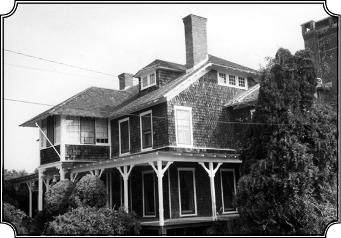
Quogue’taki Pen Craig evi. Karpat bu evi International House öğrencilerinin yazlık evi olarak idare etti ve bacanın altındaki sol bölümde de doktora tezini yazdı.
Sizi, kafanıza üşüşmesi muhtemel düşüncelerden, öfkelerden, kırgınlıklardan koruyordu herhalde.
O dönemi ruhen sağlıklı olarak atlatmam belki bu çalışma sayesinde mümkün olmuştur. Bazen biraz ara verip istirahat etmek için bir grup arkadaşla haftasonları New York dışına çıkar ve yürüyüşler yapardık. Amerika’da Kızılderililerin kullandıkları Appalachia Trail diye bilinen bir yaya yolu, patika vardır. Bu yol Maine Eyaleti’nden, yani Amerika’nın kuzeyinden Florida’ya kadar giden tarihi bir yaya yoludur. İşte biz de her hafta sonu bu yolun bir kısmını yürüyerek kat eder, böylece dinlenir, hava alır, egzersiz yapardık. 1956’nın Mart ayında, bu gezileri birlikte tertip ettiğimiz arkadaşlardan biri dedi ki “Long Island’a (yani New York’a) aşağı yukarı yüz kilometre kadar mesafede bulunan Quogue adlı küçük bir yerleşim bölgesinden bir avukat geldi, orada bir evi varmış, bize kiraya vermek istiyor.” Adam International House’a gelmiş (biz orayı hâlâ buluşma yeri olarak kullanıyoruz), “Orayı size kiralayayım, burada kalan öğrenciler için haftasonu dinlenme yeri olarak kullanın” demiş.
Kim bu adam, ev nasıl bir yerde?
Aslında ev de bölge de ilginç. Quogue 1672’de İngiliz göçmenleri tarafından kurulan bir yerleşim bölgesi. Bu ev de 1890’larda yapılmış. İlk sahibi de Alexander Hamilton isimli Amerikan tarihinde çok büyük yeri olan birisi. Anayasa’yı imzalayanlar arasında olan Hamilton Amerika’nın ilk bankasını kurmuş, finans sistemini kurmuş ve 6 yıl Maliye Bakanlığı yapmıştır. Genç yaşta da düelloda öldürülmüştür, kendisi havaya ateş etmiş fakat hasmı ona ateş etmiş. Neyse işte bize evi teklif eden avukat Hamilton’un büyük büyük torunlarından. Ev “Pen Craig” adını taşıyordu. Düşündük taşındık fena bir fikir değil, “gidelim yeri görelim” dedik, bir haftasonu arabaya atladık, yeri gördük. Hakikaten dikkate şayan bir yerdi. Büyük şato gibi bir bina ve arkasında ormanlık gibi aşağı yukarı birkaç yüz dönüm yeri var. Kira 800 Dolar. Hemen kiraladık. Yaz gelince nasıl işleteceğimizi düşündük, planlama yaptık. On beş ila kırk kişinin haftasonu arabalarla gelmesini öngörüyorduk. Fakat en büyük sorun evde birisinin oturması, burayı idare etmesiydi, bunu kim yapacaktı? Arkadaşların hepsinin New York’ta işi var, orada devamlı kalabilecek tek kişi benim. Benim için de bu, bulunmaz bir fırsattı. Sakin bir yer, plaja yakın, arabayla 5 dakika, bütün haftayı orada geçireceğim ve o sakin şartlar altında bütün dikkatimi çalışmama verebileceğim. Nitekim öyle oldu, mayısın sonunda oraya gittik ve bu yeri ben idare etmeye başladım. Hafta sonu gerçekten yirmi beş kişiden, kırk kişiye kadar öğrenciler gelirdi, her ülkeden New York’ta tahsil gören doktora öğrencilerinin yanı sıra Amerikalılar da gelirdi. Hafta sonu orada kalırlar, pazar akşamı dönerlerdi. Artık buranın ünü her tarafa yayıldı, fiyat da alabildiğine ucuz, 7,5 dolar, beş öğün yemek ve üç gece konaklama. Türk arkadaşlar da geliyordu. Bunları anlatmamın nedeni şudur: Buraya o kadar bağlandım, sevdim ki Amerika’da benim kendimi evde hissettiğim bir yer oldu. Biraz Türk havası, Türkiye havası da vermiştik oraya.
800 Dolar ev kirası. Orayı her hafta maksimum kırk kişi ile doldursanız bile 7,5 dolardan 1.200 dolar yapar. Eee alışveriş, temizlik, giderler filan, hâlâ içerdesiniz ya da tapi.
Yok, içerde değildik. Çünkü 800 dolar kira düşüktü. O tarihlerde Amerika’da gıda çok ucuzdu. Başta dedik ki “her hafta sonu iki-üç kişi bildikleri yemekleri hazırlasın, kendi memleketlerindeki yemekleri hazırlasınlar, sunalım” falan, fakat fiyasko oldu. Ya yemek yetişmiyor ya çok pahalı oluyordu. Düşündüm taşındım “bu iş böyle gitmez, siz bu işi bana bırakın” dedim. Muazzam bir mutfak var ve orada her haftasonu mutfakta emrimde dört-beş kişi çalışıyor, bunları ben seçiyorum ve bazılarına soğan doğratıyorum falan. En ucuz gıda tavuk. Tavuğu sebzelerle karıştırıp kaynatırsın, onun yanına da bizim Türk pilavı, bir de büyük salata, harika yemekler çıkmaya başladı. Gene bizim ismimiz çıktı “aşçı” diye. Nefis bir yaz geçirdim, hem eğleniyordum, hem verimli çalışıyordum. Hafta içi kalanlar da oluyordu. Onlar plaja gidiyor ama ben hafta içi kesinlikle plaj-deniz falan yapmıyorum. Pazartesi sabahından, cuma akşamına kadar tezimi çalışıyorum. Yaz böyle geçti.
Tarık Zafer Tunaya ile tatsız son…
Kış başı New York’a döndünüz ve tezinizi bitirdiniz…
New York’taki dairemi yazlık olarak birine kiralamıştım, döndüm kış gelince. O sene 1956’nın sonuna doğru tezim hazırdı ve götürdüm jüriye verdim. Büyük bir düzeltme falan istemeden jüri tezi kabul etti ve nihayet savunma faslı geldi. 1957’nin Mart ayıydı artık. Jüri karşısında tezi savundum. Daha evvel de belirttiğim gibi, o tarihte rahmetli Zafer Tarık Tunaya da New York’taydı ve ilişkimiz devam ediyordu. Onu da davet ettim. Herkes memnun oldu. Çünkü onun ismini duyan birisi de vardı jüride. Böylece geldi ve hatırlıyorum jüri önünde İngilizce sordu, “Türkiye’de siyasetin gelişmesi için ana şart nedir? Eksik olan nedir? Niçin gelişmiyor?” Ben durakladım. Bir şeyler söyledim cevap olarak. “Security, (güvenlik) var mı Türkiye’de, yani fikirlerin açık seçik söylenebileceği bir hava var mı? Bunların bir güvencesi var mı” diye İngilizce devam etti. Dedim “hakikaten bu tespit doğru”, neyse bu şekilde tezin savunmasını yaptım. Benim tezi okuyanlar içinde bir de Profesör Marshall Dimock vardı. Dimock, bir Amerikan heyetiyle bir süre Türkiye’de bulunmuş, Türkiye’yi biliyor ve benim tezimi de dikkatle okumuş. Dimock bütün o bölümlerin başkanı, benim bölümüme başkanlık eden Zürcher’in de üzerinde. Sonra Dimock, Zürcher’i bir tarafa çağırdı, bana “bekle bir müddet” dediler bekledim. Dimock’un önerisi üzerine bana orada, üniversitede kalmam için bir teklif geldi. “Sen” dedi Dimock “çok güzel bir şey yaratmışsın, şimdiye kadar böyle bir şey görmedim, baştan aşağı okudum. Her yönüyle takdire şayan bir şey ve sen bu tezi yazmakla kabiliyetin olduğunu gösterdin ve biz de senin gibi bir elemanı bu üniversitede alıkoymak isteriz.” Artık benim için beklenmedik bir şeydi bu, yalnız doktor olmuş değilim, aynı gün bana üniversiteden de bir teklif geliyordu. Tabii kabul ettim. Ondan sonra tezimin ismi duyulmaya başladı ve burada hem olumlu hem olumsuz yönleri olan bir olay oldu. Anlatmıştım, Birleşmiş Milletler’de Ekonomi Bölümü’nde Charles Issawi isminde yüksek bir memur vardı…
Hani şu Lübnan asıllı, sizi takdir eden, işi öneren profesör?
Lübnan asıllı Arap. Sanırsam o tarihlerde Princeton Üniversitesi ile ilişkisi de varmış. Nitekim sonradan Princeton’da Ekonomi Tarihi Profesörü oldu ve bundan bir iki sene evvel 84 yaşında vefat etti. O tarihlerde Princeton Üniversitesi, Türkiye siyaseti hakkında bir şeyler yayınlamak istemiş. “Türkiye’de çok partili sistem var ama kimsenin bir şey bildiği yok, bu konuda ne yapalım” diye düşünüyorlarmış. Tarık Zafer Tunaya’nın kitabını tercüme edelim diye düşünmüşler fakat kitap onların arzu ettiği şekilde yazılmadığı için tereddütler olmuş ve Charles Issawi’ye sormuşlar “önerin nedir” diye. O da demiş ki “Kemal Karpat isminde birisi var, doktorasını yeni aldı. Onun bir tezi var, çok iyi olduğunu söylüyorlar.” “Bir bakalım” demişler. Charles Issawi bana “tezini gönder bir bakalım Princeton’a” dedi. Princeton’a tezimi gönderdim, aşağı yukarı Nisan ayında oldu bu iş. Onlar da ellerindeki diğer kitaplarla birlikte benimkini de değerlendirmesi için o tarihte siyasi ilimlerde hoca olan ve çok iyi Türkçe bilen Dankwart Rustow’a bu işi havale etmişler. Rahmetli Rustow o tarihlerde yazdığı bazı makalelerle Türkiye uzmanı olarak tanınmıştı. Babası Almanya’dan, Hitler’den kaçıp gelmiş ve İstanbul Üniversitesi’nde hocalık yapmış. Rustow böylece Türkiye’de büyümüş, Türkiye’yi iyi tanıyor ve Türkçe’yi iyi konuşuyor. İşte benim tezi Rustow okuyor. Tezin iyi taraflarını, düzeltilmesi, genişletilmesi gereken yerlerinin hepsini işaret ederek Princeton’a bir rapor gönderiyor. Onun raporunu Princeton bana gönderdi, şöyle cümleler vardı; “Şimdiye kadar böyle bir şey yazılmadı ve bu eserin en azından yirmi-otuz yıllık bir ömrü vardır.” “Böyle bir çalışmayı geçecek bir çalışmayı yakın zamanda göremeyeceğiz”, “yayınlanmaya değer bir çalışma.” Princeton bana bir kontrat gönderdi, “yayınlayacağız ama şu şu değişikliklerin yapılması kaydıyla” vesaire diye. Sonradan anladığım kadarıyla benim tezim Tunaya’nın kitabıyla karşılaştırılmış, Tunaya’nın kitabı da değerli bulunmakla beraber benim çalışmam, daha faydalı bir eser olarak tercih edilmiş. Tarık Bey’e bu bildirilmiş ve Tarık Bey bana bu defa fena halde kızmış, içerlemiş; “Vayy nasıl olur, tam benim kitabımı kabul edip tercüme edecekleri zaman, Kemal Karpat gelmiş, kendi tezini, kitabını sunmuş ve kabul ettirmiş.” Bunları ben çok sonra duydum. Zaten ondan sonra bir iki defa gördüğümde tavrı değişmişti.
Hâlbuki, sizin ilk kaynak kitabınız onunkiydi değil mi?
Evet. Ben de kitabın içerisinde kendisine atıflarda bulundum hatta bir not düşerek, “Bu konuda ilk çalışmaları kendisi yapmıştır” gibi bilgiler verdim, gerekeni yaptım. Kendisine karşı hürmetim, sevgim devam ediyordu. Fakat ondan sonra onunla bir araya gelip konuşamadım, hayatının sonuna kadar bana karşı çok olumsuz bir tavır takındı. Toplantılarda beni durmadan tenkit eder, her fırsatta hakkımda olumsuz şeyler söylerdi. Ben cevap vermezdim, üzülürdüm çünkü ona karşı gerçekten derin bir saygım vardı. Üniversite’de bulunduğum zaman, öğrencilerle ilgilenen yakınlık gösteren nadir hocalardan birisiydi ve benim üzerimde insanlığıyla, kitabıyla, sözleriyle, olumlu iz bırakan bir adamdı. Ona karşı gelemezdim. Fakat halen üzgünüm, üzgünüm çünkü onun iftihar etmesi lazımdı. “İşte benim yetiştirdiğim bir adamdır bu” demesi gerekirdi. Bugün benimle doktora yapmış, dünyanın çeşitli üniversitelerinde profesör olmuş, birçok kişi var. Bir kısmı çok meşhur olmuştur. Benimle çalışmaya başladıkları zaman onlara daima şunu söylerdim, “Eğer beni geçmezsen, eğer benden daha iyi bir şeyler yaratmazsan, ben ödevimi tam manasıyla yerine getirmiş sayılmam. Çünkü amaç hocanın altında kalarak ona Allah gibi bakmak değil, onu geçmek. Başkaları da sizi geçerse, daha iyi eserler meydana gelir.” Bu önemli bir noktadır ve belki beni birçok hocadan ayıran yine budur. Hiç kimseye karşı kıskançlığım yoktur, tam tersi, daha iyisini yapacaksa yapsın. Ben de müstefit olurum (yararlanmış olurum).
Montana ve doçent Kemal Karpat
Bu arada New York Üniversitesi’ndeki hocalık işi ne oldu?
Ben tezimin düzeltmeleriyle meşguldüm, yaz gelmiş gene. Profesör Zürcher telefon etti, “Maalesef senin New York Üniversitesi’nde çalışman mümkün değilmiş, üniversite kurallarına göre üniversiteden doktorasını almış kişiler, beş sene süreyle o üniversitede vazife alamazlar. Üniversite dışına çıkıp, başka yerlerde çalışıp kabiliyetini, her şeyini ispat ettikten sonra üniversite onları alabilir” dedi. Bu yalnız New York Üniversitesi’nde değil, birçok üniversitede geçerli olan ve bence gayet iyi bir kural ama orada, o anda bana bu bir darbe gibi oldu. Ama hakkını yememeyim, Zürcher dedi ki, “Burası olmadı ama, sana söz verdik madem, başka yerlere müracaat et, birlikte bakalım.” İşte böylece sağa sola müracaatlar yaptık, bir taraftan da Quogue’taki pansiyonda işime devam ediyorum. Bir öğleden sonra arkadaşlarla kahve içiyorduk mutfakta, telefon çaldı. Gittim telefonu aldım, bir ses: “Ben Profesör Oscar Hammer, Montana Üniversitesi’nden telefon ediyorum. Tarih ve Siyasi İlimler Bölümü Başkanıyım. Bizim profesörler toplantısında alınan karara göre size üniversitemizde asistan profesörlük teklif ediyorum. Maaşı 3.600 dolar, bir senelik. Süre dokuz ay. Kabul eder misiniz?” Hemen oracıkta cevap verdim, “Evet, kabul ederim.” “Tamam” dedi o da. Ben döndüm geldim, “Biliyor musunuz ne oldu?” dedim: “Vazife buldum, profesör oldum Montana Üniversitesi’nde.”
Tekrar bir uçtan öbür uca o kadar uzağa kuzeyBatı’ya gideceksiniz, daha yakın yerleri niye beklemediniz?
O an karar verdim. Sonra yakınlardan da iki yerden teklifler geldi ama ben Montana’yı gözüme kestirdim, burayı kabul ettim. Çünkü Montana Üniversitesi, bir eyalet üniversitesi. Nispeten küçük olmasına rağmen çok ünlü ve çok kaliteli bir yerdi. Anaconda şirketi orada zengin olan madenleri çıkarıp satmaya başlayınca birden Montana’nın yıldızı parlıyor. Montana’da şirketin de işlerine yardımcı olabilecek eleman yetiştirmek için orada birinci sınıf bir üniversite yaratma çabaları, hatta dediklerine göre “Montana Üniversitesi’ni, Batı’nın Harvard’ı şekline dönüştürmek için çalışmalar başlamış” bunun için de fevkalade zengin bir kütüphane kurulmuş. Oraya gidip kütüphanenin zenginliğini görünce şaşırdım. Her çeşit eser mevcuttu. Orada tezimi kitap haline getirmek için çalışmalarıma devam ettim. Haftada on iki saat ders veriyorum, dört ayrı kur. Verdiğim kurlardan bir tanesi Amerikan Anayasası ve Tarihi. Benim bu konuda bilgim oldukça az, ders verebilmek için bu konu üzerinde alabildiğine çalışmaya başladım. Her şeyden evvel bu konuda geniş çapta bilgi sahibi oldum.
Niçin Amerikan Anayasası ve Tarihi dersini siz veriyorsunuz da bir Amerikan uzman değil?
Üniversitede bu dersi verecek birine de ihtiyaç var çünkü. “Yaparım” dedim. Başka bir dersim, Uluslararası Tarih. Sonra ısrar ettim ve Ortadoğu, yani Osmanlı ve Türkiye Tarihi’ni de oraya soktum. Galiba üniversitenin tarihinde ilk defa böyle bir ders veriliyor. Bu ders sonradan bir hayli kimseyi çekti ve orada benim başlattığım bu gelenek, gelişmelerin de tesiriyle devam etti. Halen Montana Üniversitesi’nde Ortadoğu ve Türkiye derslerini, doktorasını benimle yapmış Profesör Mehrdad Kia isminde bir İranlı vermektedir. Her zaman konuşuruz, mektuplaşırız, hatta 1997’de beni oraya konferans vermeye davet etmiştir, eski hatıraları anmak için. Fakat bunların ötesinde bu dersler, benim Amerika’yı ve Amerikalıları daha iyi tanımamı sağladı.
Bülbülü altın kafese koymuşlar…
Tezinizi kitaplaştırıyorsunuz ama Amerika’da basılıyor. Hani ülkenize, topluma yararlı olması için bunu kaleme alma kararınız vardı. Bunun için ne yapmayı düşünüyordunuz?
Tabii geleceğim oraya. İşte ben Montana Üniversitesi’ne bu şekilde devam ettim ve bu arada tezimi gereken şekle soktum ve sanırım Mart ayında mı ne Princeton’a gönderdim, kabul edilmiş, tezi artık kitap şeklinde basacaklar, “hangi isim altında basalım” diye soruyorlar. “Türkiye Siyaseti, Çok Partili Döneme Geçiş” anlamında bir isim koyduk. Bu kitap sonradan Türkçe’ye Türk Demokrasi Tarihi olarak tercüme edildi. Tabii ki demokrasi tarihiyle ilgisi var. Fakat onun çok ötesinde, Türk siyasetini, yani çok parti dönemine geçişi, olayları çok değişik ölçüler içinde anlatan bir kitap.
Evet, aslında o yıllara kadar tüm Türkiye siyasi hayatının bir panoraması, belgeleri bilgileri var. Ama bundan da öte hem eleştiriler hem yorumlar hem de gelecek öngörüleri var. Tabii ki siz bunu tarih kitabı olarak yazmadınız. Ama gelin burada şu sorunun cevabını alalım: Diğer tarihçilerden sizi farklı kılanın aslında “Türk Demokrasi Tarihi” tezi ile ortaya koyduğunuz anlayış olduğunu söyleyebilir miyiz? Yani daha çok günümüz ve yakın geleceğin sorunlarına ışık tutmak amacını esas aldığınızı söyleyebilir miyiz?
Türk Demokrasi Tarihi, toplum çalışmaları ve bilhassa Türkiye ile ilgili etütlere yeni bir yaklaşım getirmek için ve ileriye dönük bir tarih anlayışı ile yazılmıştır. Daha medrese dönemimde Vasilescu ve Dragos isimli çok iyi iki tarih hocası sayesinde eski Helen, Roma ve Batı Avrupa tarihini genel olarak incelemiştim. Ben tarih derslerini sevmekle beraber bize sunulan tarihin yanlı, eksik, siyasi amaçlı olduğunu, yani Rumen milli gururunu okşamak için bir araç olarak kullanıldığını seziyordum. Okutulan tarih, toplumun çağdaş yaşamı, sorunları ve geleceği hakkında bilgi vermiyordu. Hâlbuki ben daha o tarihte sosyal ilimlerin çeşitli disiplinlere ayrıldığını kabul etmekle beraber aralarında ortak bağlara sahip olmaları gerektiğini düşünüyordum. İstanbul’da Hukuk Fakültesi’nde okurken de toplum ve tarih hakkında gerçekçi ve günümüze bağlı olayları inceleyen derslere birinci derecede önem verdim.
Evet, Ömer Lütfi Barkan’ın etkisinden de söz etmiştiniz.
Rahmetli Ömer Lütfi Barkan’ın Ekonomi Tarihi dersini Osmanlı toprak rejimi, tımarları vesairesi ile ilgili olduğu için benim aradığım tarih anlayışına yakın bulmuştum. Tarih anlayışımın gelişmesini sağlayan kaynakları üniversitenin kitaplığında buldum. Çeşitli sosyal konuları inceleyen çoğu Fransızca kitaplardı bunlar. Amerika’ya gittikten sonra da aldığım sosyoloji, ekonomi, siyasi ilimler ve tarih kurları ve okuduğum sayısız kitap bana yeni ufuklar açtı. Türkiye’de az zaman içinde analiz kabiliyetim bir hayli gelişmişti. Bu arada Türkiye’nin demokrasiye doğru yönelmesi, toplum meselelerini yeni yönlerden ele alan yayınların, bilhassa solcu yayınların ortaya çıkmasını kolaylaştırmıştı. Böylece ben az zaman içinde Türkiye’yi ilgilendiren temel sorunları anlamış ve bunların kökenlerinin bir kısmının tarihte olduğuna karar vermiştim. Üstelik ben Dobruca’da Türk halkıyla yakından özdeşleşebildiğim için Türkiye’de de halk kitlelerinin düşüncelerini, sorunlarını ve özleyişlerini hemen kavramış ve halkla, anlatılması güç maddi ve manevi bağlar kurmuştum. İşte doktora tezimin genişletilmiş şekli olan o Türk Demokrasi Tarihi kitabında tarihin durmadan değişerek yaşandığını ve günümüzü etkilediğini anlatmakla kalmadım, sağlam bir tarih anlayışının bugün yaşayan toplumun sorunlarını aydınlatıp yarına da ışık tutacağını göstermeye çalıştım. Bunu yaparken teorilerin, bilgilerin ve tecrübelerin sentezinden oluşan birçok sosyal ve siyasi teoriyi Türkiye toplumunun tarihine, özüne ve karakterine uygun bir şekilde somut olaylar etrafında ördüm. Ben hiçbir zaman kuru olayları ve seneleri, günleri esas tutan bir tarihçi olmadım. Ve olmam da. Aynı zamanda metodolojileri ve kavramları uzun uzadıya tartışmak yerine bu metodoloji ve kavramları işlevsel hale getirerek tarihi ve günlük olayları anlatmaya ve yorumlamaya çalıştım. İşte Demokrasi Tarihi kitabım, ki bunun İngilizce karşılığı aslında Turkey’s Politics (Türkiye Siyaseti), bu görüşlerin ve anlayışların ürünüdür.
Çok Partili Sistem’e geçişi anlatıyorsunuz ama kitabınızın ana tezi şöyle özetlenebilir mi: Türkiye, geleceğinin demokraside, geçmişinin de Osmanlı’da olduğu gerçeğini unutmadan ve her ikisiyle de bağlarını asla kesmeden, modernite yolunda ilerlenmesi halinde güçlü ve demokratik bir toplum olacaktır?
Evet özetle. Çeşitli kereler belirttim: Cumhuriyet bir dönüm noktası olmakla beraber, kendini yalnız siyasi rejim olarak Osmanlı’dan ayırmakla kalmamış, diğer sosyal, dini, kültürel bağları da kesmek istemiştir. Hâlbuki sağlam bir ulusdevlet sürecinin başarısı, toplum içinde yaşayan tarihi, sosyal, dini ve ahlaki güç ve değerlerin sağlam temellere dayalı yeni fakat tarihi kökenlere dayanan bir sosyo-kültürel şekil almasına bağlıdır. Tarihi tecrübe ve miras bu güçlerin terkibine esas şeklini verebilecek ana kaynaktır. İleriye dönük olmak, modernizmi benimsemek diğer bir güç kaynağıdır. Bizim ana geçmişimiz Türk-İslam (Osmanlı) köküdür, geleceğimiz ise çağdaş ilim, teknoloji, demokrasi ve modern ekonomidedir. Toplumumuzun tutacağı yol tüm bu yaşayan eski ve yeni güçlerin serbest etkileşimiyle belirlenecektir. Bu ise ancak sağlam bir demokratik ortamda mümkün olur. Demokrasi Türkiye’nin geleceğini bu şekilde tayin edecek esas güçtür. İşte o kitapta ana tez olarak bunları savunuyordum.
Evet Montana’ya dönelim. Onlar orada kalmanızı istiyorlar…
İşte sene sonuna doğru artık bölümün başkanı geldi “Biz senden çok memnunuz” dedi, “seni burada daimi olarak istiyoruz.” Orada daimi kalmak benim işime gelmiyor, çünkü bu kadar çalışmışız, iyi bir üniversite olmasına rağmen hayatımı orada geçirmek istemiyorum. Aslında Türkiye’ye dönmek, Türkiye’de çalışmak istiyorum. Missoula, dağların ortasında şirin bir yer. İçinden bir nehir akıyor, tabiat bakımından fevkalade nefis yer. Üniversitenin hemen arkasında muazzam bir dağ yükseliyor. İlkbaharda o dağların yamaçları rengarenk çiçek dolu. Arkasında başka dağlar, önünde açık ovalar, biraz daha ötesinde dağlar, o dağların altında başka bir ova. Sanırsam Flat Foot (Düz Ayak) adı verilen Kızılderililer de var. Ben tabiatı çok severim ama tek başına tabiatla yaşayamam. Bunun yanı sıra mesleğimle ilgili, amaçlarımla ilgili şeyler yapmam lazım. Yani pek kalmak istemiyorum ama bir şey de yapamıyorum…
Ailenizle haberleşiyorsunuz bu arada?
Evet. Yıl 1958, aylardan Mayıs olmalı. Artık üniversitede asistan profesörüm, kitabım kabul edilmiş, istikbalim iyi gözüküyor. Fakat büyük bir sorunum var: Ailemi görmek istiyorum, çok özledim artık. On altı yıl evvel Romanya’dan çıkmışım, arada sırada mektuplaşıyoruz. “Evimizin, bütün varlığımızın alındığını, annemin evden atıldığını, ablamın yanına geldiğini” filan yazıyorlar. Kardeşim Cemal evlenmiş, resimlerini gönderdiler. İçimde büyük bir özlem var, ailemi görmek istiyorum. Artık senelerden beri süren bu özlem adeta psikolojik bunalıma yol açıyor. Her gece rüyamda doğduğum yerleri, ailemi görüyorum. Ve bu hasret dediğimiz şey öyle bir hal aldı ki artık beni rahatsız ediyor. Bir şeye doğru dürüst sarılamıyorum, büyük bir boşluk var içimde ve adamakıllı rahatsız oluyorum. Orada bir arkadaş vardı, psikoloji ile meşgul, kendisine dedim “ben çok garip durumdayım, vazifem var burada, her şeyim yolunda fakat bir türlü kök salarak oturmak gelmiyor içimden, rahat edemiyorum, huzurum yok, anlamıyorum bana ne oluyor?” Adam, “Bu”, dedi “bazı göçmenlerde sık görülen bir olaydır, senin mutlaka doğduğun yerleri, aileni gidip görmen lazım, onları görmeden sen tam manasıyla bir istikrar, denge bulamazsın.”
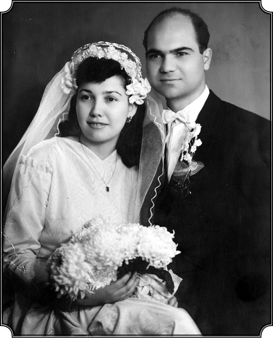
Kardeşi Cemal Karpat ve eşi Nuristan’ın 1954 yılındaki evlilik fotoğrafı.
İngilizce deyimle “home sick” (sıla özlemi hastalığı) oldunuz yani...
Home sick! Fakat ilerlemiş bir home sick durumu. Romanya’ya gidip ailemi görme kararı öteden beri vardı. 1955’in sonlarında Türkiye’den ayrılırken Romanya’dan geçip ailemi görme ümidiyle vize istemiştim, verilmemişti tabii. Fakat 1956 yılının sonlarına doğru İstanbul’da verdiğim adrese önce bir yazı gelmiş Rumen Konsolosluğu’ndan, sonra bir memur gelmiş, “Vize istemiş Kemal Karpat, ona vize verip Romanya’ya gitmesini konuşmak için geldim” demiş, benim nerede olduğumu sormuş. Amerika’daki adresimi vermişler. 1957 yılında mı neydi bir telefon aldım: “Ben Washington Rumen sefaretinden memur filanca, sizin vize işinizi konuşmak istiyorum.” Biraz garibime gitti, “neymiş bu?” diye “buyurun gelin” dedim. Adam geldi, kendisini takdim etti, kimliğini gösterdi.
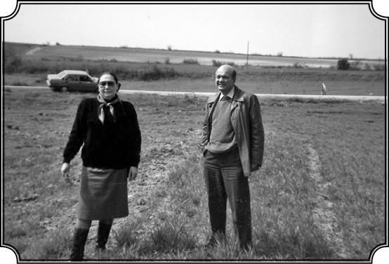
Nuristan Hanımın 1995’te beyin kanamasından ölmezden önceki son fotoğrafı.
Romanya’nın vize teklifi
Adam Montana’ya mı geldi?
Ben hâlâ New York’tayken oluyor bu. Daha Montana’ya gitmemiştim. “Biz siyasetimizi, değiştirdik. Şimdi vize talebinizi yerine getireceğiz, bunu herkese yapmıyoruz, fakat bizim ne yaptığımızı daha iyi anlayacak, takdir edecek kimselere vize veriyoruz” gibisinden şeyler söyledi. Bu arada söylediği bir şey dikkatimi çekti: “Ve biz” dedi “Türk entelektüellerini daha iyi tanımak istiyoruz.” Hâlbuki o sırada Soğuk Savaş almış yürüyor…
Romanya’da kim var başta?
Komünist rejim gelmiş. Tam komünist değil, sosyalist ama Sovyetleşmiş, yani bu konuşma olduğu zaman, 1957’de. Kötü haberler geliyor tabii ben bunların hepsini okuyorum, ne olup bittiğinden de haberdarım. İki taraf, yani gerek Doğu, gerek Batı alabildiğine propaganda yapıyor. Türkiye 1952’de NATO’ya girmiş, tam manasıyla Batı’ya meyletmiş…
Kore’ye asker göndermiş…
Kore’ye asker göndermiş. Zaten ben 1953-55 seneleri arasında Ankara’da Yedeksubay Okulu’nda tercüman olarak askerlik hizmetimi yaparken vazifem, Amerikan askeri heyetiyle bizim kurmay arasındaki ilişkilerde tercümanlık yapmaktı. Kore’ye gidecek tugayı eğiten Amerikalılara tercümanlık yapıyordum. Nitekim Kore’ye gidecek birlikleri tanımak, teftiş etmek için askerliğim esnasında bir tarafta Kore tugayının kumandanı olacak general, diğer tarafta tugayı eğiten Amerikan albay ve yarbayları ile beraber, birçok yere bu Kore birliklerini teftişe gittik. Konya, Sivas, Bandırma ve İzmir’e gittik, yani o sayede yine memleketin birçok yerini gördüm. İşte yemekler veriliyor, konuşmalar yapılıyor, biz İngilizceden Türkçeye, Türkçeden İngilizceye tercümanlık yapıyoruz falan. Kore Harbi artık sona gelmiş ama bizim tugaylar hâlâ orada. Neyse, bu Rumen sefaretinden gelen memurun söylediği “Biz Türk aydınlarını tanımak istiyoruz” cümlesinin anlamı var tabii. Meğerse o zamanlar Sovyetler’in ana amacı Türkiye’yi NATO’dan koparmakmış.
Onların bu hamleyi yaptığı dönem, Menderes Hükümeti’nin taktik olarak Rusya ile yakınlaşma politikası güttüğü dönem mi?
Evet, aslında tam o döneme denk geliyor. Anlatacağım o kısmı. Ama o günlerde bunlara ben önem vermiyorum, zaten fazla da meşgul olmuyordum. Bu memurla görüştükten sonra düşündüm, dedim kendime: “Bu adam geldi, Doğu Bloku’na mensup, ben Amerika’da misafir olarak bulunuyorum, o zaman hâlâ tezimi yazıyorum, nazik bir konu.” Üniversiteye gittim bizim başkan Zürcher’e “böyle böyle” diye anlattım olanları. “Yok canım, endişelenme bunda bir şey yok” dedi. “Ama her ihtimale karşı, otur yaz bunları, nasıl geldi, ne konuştu, ne yaptı diye, bulunsun” dedi. Oturdum birkaç sayfa içinde niçin Romanya’ya gitmek istediğimi, vize için nasıl müracaat ettiğimi, ailemi görmek istediğimi falan yazdım ona verdim. Bu şekilde mesele kapatıldı. Fakat memur demişti ki “gitmek istediğin zaman bize haber ver.” İşte bir sene sonra falan, Montana’dayım, ailemi görmek istiyorum, karar verdim artık ne olursa olsun gideceğim. Bu arada üniversite Amerika’da devamlı kalmam için vizemi değiştirme teşebbüsünde bulundu ve daimi oturma vizesi, “yeşil kart” için müracaatlar yapıldı. Hatta Kanada’da bulunan bir Amerikan konsolosluğuna gidip bu daimi vizemi almak da söz konusu oldu.
Niye Kanada?
Daimi oturma vizesini Amerika dışında bir konsolosluğun vermesi gerekiyor, halen de öyledir. Onun için Amerika dışına çıkıyorsunuz vizenizi alıyorsunuz ve bu defa yeşil kart sahibi olarak giriyorsunuz. Ben de bu muameleye tabii olacağım, onun için dedim “bu daimi vize işini halletmezden evvel şu Romanya’ya gitme işini halledeyim, önce Rumen vizesini alayım.”
Aileniz de bekliyor zaten sizi dört gözle…
İşte bu arada ben zaten aileme de yazmıştım, “gelmek istiyorum” falan diye, “onlar da bekliyoruz artık gün sayıyoruz, gözlerimiz yolda” diyorlar. Annem ise “gelmeden, göremeden öleceğim” diye korkuyor. İşte bu gibi duygusal mektuplar geliyor... Tabii bizim mektuplar okunuyor Romanya’ya gittiği zaman o ayrı mesele. İşte ben oturdum bir mektup yazdım Rumen sefaretine, “Şöyle bir tarihte müracaat etmiştim, ondan sonra sizin bir memurla görüşmüştüm, vizemin verileceğini söylemişti. Ben şimdi gitmek istiyorum, Washington’a gelemeyeceğim, Avrupa’dan bir yerden vize almak istiyorum, mümkünse benim vizemi Paris’e gönderin.” Hani düşündüm “vizemi verirlerse Fransa’dan Romanya’dan geçer oradan da Türkiye’ye giderim, vermezlerse doğrudan doğruya Türkiye’ye giderim.” Çünkü niyetim Türkiye’ye gelip ders vermek, yerleşmek. Montana’da fevkalade vaziyetim var fakat ben hayatım boyunca orada kalmayı düşünmüyordum ki. Hep Türkiye’ye dönmek ve burada bir vazife alıp, burada çalışmak arzusundaydım. Nitekim mektubu yazdım, “Şimdi benim bu Kanada’daki Amerikan Konsolosluğu’nun vereceği daimi vizem de çıkar, onu da alır ondan sonra New York’a gider, oradan da giderim” diye gayet makul düşünüyordum. Fakat bu olaylardan sonra o konsolosluktan bir mektup geldi; “Sizin Türkiye’de bilmem ne cemiyetinde üye olmanız nedeniyle vizeye hak kazanamayacağınız, bu şekilde size vize verilemeyeceği” gibisinden cümleler.
Ne cemiyetiymiş bu, neyi kastediyorlar, Amerikalılar değil mi bunu yazanlar?
Evet onlar. Efendim daha ben Hukuk Fakültesi’ndeyken, daha önce anlattığım gibi solcu sayılan bir gençlik cemiyeti vardı ve ben o cemiyetle ilişkisi olan bir iki kişiyi tanıyordum, sınıf arkadaşım olanlar. Bunların arasında “Adil Giray” dediğimiz bir arkadaş vardı Malatyalı. Arada sırada onunla görüşüyoruz, konuşuyoruz falan ama ben cemiyete üye olmadığım gibi, onların herhangi bir toplantısına yahut da hareketlerin herhangi birine de katılmadım. Bunları bildirdim ama…
Amerika’da kalmanız da artık sorunlu hale geliyor bu durumda?
Vizesiz idare ediyorum ama benim de gitme zamanım gelmiş. “Artık” dedim, “ne olursa olsun gideceğim !” Yani “gidip ailemi göreceğim.” Sonradan anladığım kadarıyla benim Rumen sefaretine gönderdiğim mektubu, oraya giren her şeyi kontrol eden CIA ve diğer Amerikan istihbaratçıları açmış okumuş ve her şeyi öğrenmişler. Arada insanlar var onlara anlattım “böyle böyle, benim solculuğum filan yok, işte sendika çalışmam, temaslarım filan onlar da bu kadar bir şey diye.” Neyse işte New York’a geldim, birkaç gün gene Quogue’ta kaldım. Çünkü bizim başlattığımız o program, yani yaz tatilini Quogue’ta geçirme programı devam ediyor. Ben bu defa oraya misafir olarak birkaç günlüğüne gittim. Sonra uçakla İngiltere’ye gittim, İngiltere’de birkaç gün kaldım ve oradan Paris’e geçtim, Paris’te Rumen sefaretine gittim. “Ben vize için müracaat etmiştim, Washington’a yazdım, vizeyi buraya göndermelerini söylemiştim, böyle bir şey geldi mi size?” “Evet, geldi” dediler ve bana vizeyi verdiler.
Orada yeni bir tartışma ya da sohbet olmadı herhalde?
Hayır, uzatmadılar hemen verdiler. Ben vizeyi alır almaz hemen trene bindim, Yugoslavya üzerinden Romanya’ya girdim. O zaman Romanya’da Ruslar hâkim, sene 1958. Ben Bükreş’te para değiştirdim ve Köstence’ye bilet aldım ama artık “Amerika’dan geliyoruz, adam olduk” diye bir intiba bırakmak için, 1. mevkiden aldım. Nihayet Köstence’ye geldim, Bükreş’ten telgraf çektiğim için istasyonda rahmetli Murat eniştem, bir de kardeşim Cemal bekliyordu. İşte sarmaş dolaş olduk falan, bir taksiye atladık eve gittik. Artık görüşme, ağlama sızlama bol hani, işte böylece hasret giderdik.
Cemal’i tanıyabildiniz mi, artık 30’unda kocaman adam olmuştur?
Evet, Cemal büyümüş, boy pos gelişmiş tabii. Birbirimize resimler gönderiyorduk oradan da takip ediyordum. Murat enişteyle onun da geleceğini biliyordum ya. Dedim “kocaman olmuşsun”, işte sonra eve gittik.
Eee liseli Kemal gitmiş, “Profesör Kemal” gelmiş, ailenizle nasıl bir ortam oluştu yeniden? Annenizin dizine başınızı koyup uyudunuz mu gene?
Kısa sürede çocukluk anılarımıza döndük. Annem zaten ağır darbeler yemiş ama beni görünce sanki her şeyi unuttu, ablalarım deseniz öyle. Uyudum tabii öyle dizinde gene. Küçükken öyle uyurduk, sonra o yavaşça dizini çekip yastık koyardı başımızın altına. Cemal evlenmiş 1 yaşında bir oğlu var, İlhan Medeni adını koymuşlar. Hem içimiz burkuluyor yaşananları hatırladıkça hem yeniden bir araya gelmenin sevinci var işte. Tabii gurur da duyuyorlar benimle: “Ah baban da bu günleri görseydi.” “Bak bak Haşim’in oğlu Amerika’da profesör olmuş dendikçe nasıl gurur duyardı.” Böyle konuşmalar oluyor işte. Ama ben de orada onları, öyle iyice bir köşeye sıkışmış görünce çok kötü oldum tabii. Dedim “ne yapıp edip onları buradan çıkaracağım”. 7-8 yıl aldı ama sonunda da çıkarttım. Aynı duyguları onları Türkiye’ye getirttiğim 1967 yılında da yaşadık.
Rejim kendini sevdiremez
Ailenizle hasret giderdiniz ve büyüdüğünüz yerleri ziyaret etmeye başladınız?
On altı yıl sonra tekrar ailemi, annemi görme fırsatını bulmak çok mutlu etti beni. Az zaman içinde Romanya’nın ne hale düştüğünü de görmeye başladım. Gittiğimde “hiç olmazsa birkaç ay kalırım” demiştim, yani eylüle kadar, ama bir hafta sonra “bir an evvel çıkmam lazım, tahammül edemem buraya” dedim. Bir fırsat bulduk Babadağ’a gittim, sonra köye, Armutlu’ya gittim ama her şey alt üst olmuş, o eski canlılık ve neşe kalmamış. Herkes o eski günleri özlüyor. Bunun en güzel misalini, Vasili Maftey isminde gece gündüz içen ayyaşla yaşadım. Ben Romanya’dan ayrılmazdan evvel içiyordu, ona arada sırada 3-5 kuruş veriyordum, o da onla gidip içiyordu. Benle ahbaptı. Köyde bu Vasili Maftey’i gördüm, elime sarıldı “Kemal sen misin ya, sen misin? Bize eski günleri getirmek için mi geldin, söyle eski günler gelecek mi?” Rumence söylüyor. Çünkü hakikaten eski Romanya oldukça rahattı, herkes serbest yaşıyordu. Rejim gelince her şey alt üst oluyor. Bu, köyde bile böyle oluyor. Sözde “köylülere özgürlük, sosyal adalet getireceklermiş”, bunların hiçbirisi yok. Araziler kamulaştırılmış, kolhozlar kurulmuş, o serbest çalışan köylüler bu defa asker gibi (“brigade” diyorlar) bölümlere ayrılmış, her bölümün başında bir kumandan var, sabah erkenden çıkıyor komut veriyor; “hadi kıra çalışmaya!” Ürettikleri şeyler, onların eline, cebine geri gelmiyor, devlet bunları alıyor götürüyor ve ondan sonra bu adamlara da ancak karın doyuracak kadar para veriyor. Hani kırk tane kitap okuyup rejimin ne olduğunu anlamaktansa, böyle bir köye gidip orada dört-beş saat kalırsan gerçeği anlayıverirsin. Ve bu gerçek çok çok acı, üzüntü vericiydi. İşte bundan sonra dedim, artık “çıkayım buradan, benim gitmem gerekiyor…”
Köylüleriniz ne diyordu bu duruma?
Ne desinler… Kardeşim Cemal’le beraber köyü geziyorduk, köylülerin bir kısmı benim arkadaşlarım. Köyün zenginini gördüm, hatta eskiden köyün muhtarıydı, Dimitri Lari isminde iri yarı, akıllı bir adamdı. Babamın dostuydu, benimle de dost oldu ve orada olduğum sürece Romanya’da, her zaman onunla tartışır, sohbet ederdim, gazetelere abone olmuş bir adam, okuyan biriydi, varlıklı ama çok fazla zengin de değildi. Onu gördüm, hapis yatmış çıkmış, bir arabanın arkasında yalınayak yürüyor. “Merhaba” dedim beni gördü, baktı baktı, başka bir dünyadan gelmiş bir insanmışım gibi: “Kemal ne söyleyeyim sana” dedi “söyleyecek o kadar çok şey var ama hiçbir şey söylememeyi tercih ederim”, sonra yürüdü gitti, yalınayak. Köyün muhtarı olmuş zengin bir adam, bu hale düşmüş. Bir süre sonra işittim vefat etmiş. Köstence’ye döndük. Hatta Cemal’le Tulça’ya gittik, Tulça’dan uçakla Köstence yirmi dakikalık yol ve artık ben “oradan çıkmayı” düşünüyorum. Birkaç ay kalmak bir yana, on beş gün falan olmuş geldiğime, yetti bana. Baktım ondan sonra eve bir adam geldi. “Kemal Karpat” diye beni arıyor. “Memleketimize hoş geldiniz” falan, “sizi” dedi “yaptıklarımızı göstermek için Bükreş’e davet ediyoruz. Bir görün bizim işlerimizi.” “Eh” dedim “bu propaganda.”
Ne cevap verdiniz?
Artık onlara ne gördüğümü, neler duyduğumu, intibalarımı anlatacak değilim tabii, “bir an evvel çıkayım, gideyim” diyorum ama “daha gör” diyorlar, buna da hayır diyemem, “yeni bir şeyler de öğrenirim” diye merak da var işte. Neyse, Bükreş’e gittim bir otele yerleştim, “bir iki gün kalıp, buradan trenle İstanbul’a hareket ederim” düşüncesindeyim. “Efendim işte size etrafı gösterelim” diyerek otomobille geldiler. Yeni yapılmakta olan bazı apartmanları, şunları bunları gösterdiler. “Bunlar propaganda yapıyor, yapsınlar” diyorum kendi kendime. Sonra yemeğe oturduk. Yemeğe başka birisi daha geldi. Daha genç, hani böyle otorite sahibi gibi biri, “efendim işte bu arkadaşımız, ekonomik planlamada uzman”diye takdim edildi. Ama ben her zamanki gibi serbest konuşuyorum. Doğu Avrupa’daki ülkelerin durumunu konuşuyoruz. O genç olan zat bu ülkelerin tam manasıyla Varşova Paktı’na girip, yeni bir dünya, yeni bir enternasyonal yaratmaları gerektiğini falan söylüyor. Sovyetler’in emrinde milli devletleri yok edecek bir örgütten bahsediyor. Komünist olduğu belli. Ben de “Valla ideal olarak belki söylediğiniz doğrudur fakat gerçek şudur ki burada bir milli devlet vardır. Siz Rumen olarak, bir Romanyalı olarak halkınızı görmezlikten gelemezsiniz, her şeyden evvel siz eğer gerçek manada özgür, mutlu bir toplum yaratmak istiyorsanız başta kendi toplumunuzu kalkındırın, siz bu toplumunuzun, kimliğini, kültürünü inkâr edemezsiniz” dedim. Çünkü o tarihlerde Rusça dersleri zorunlu kılınmış, bir Ruslaştırma uygulaması varmış. Onlar da bana Amerika’yı sordular. “Amerika” dedim “kapitalist ülke ama orada bir hürriyet var.” Bu sefer bana dediler ki “Ee sen kapitalizm hakkında da bu kadar atıp tutuyorsun, seni Amerika’da nasıl tutuyorlar?” Ben, “Gayet normal” dedim, “Amerika’da gayet serbest konuşulan konular bunlar, hatta Türkiye’de de normaldir. “Türkiye demokrasiye doğru gidiyor, birçok şey Türkiye’de belki doğru dürüst konuşulamıyor ama bu gibi meseleleri konuşmak Türkiye’de gayet normal.”
Türkiye’de de öyle birçok şeyi konuşmak “normal” değildi ama orada öyle demeniz icap etti herhalde?
Evet, çünkü burada tamamen farklı bir durum var. Türkiye, nihayetinde demokrasiyi seçmiş, er ya da geç o özgürlüğe ulaşacak. Neyse sonra o, genç dediğim zat, çok alındı bu sözlerime, dışarıya çıktı, tuvalete gitti. Öbür şişmanca olanı kaldı ve bana dedi ki; “Ya çok güzel şeyler söylüyorsun, devam et, söyle buna duysun” dedi. Anladım ki şişman, milliyetçi komünist, öbürüsü ise Rus taraftarı, beynelmilelci, memleketini Ruslara satmaya hazır. Bir bahaneyle dışarı çıktım. Baktım özel plakalı bir araba şoförüyle bekliyor. Biraz sohbet ettim. Adamdan direktör falan diye bahsedince her şeyi anladım. Adam planlama memuru falan değil düpedüz emniyetin müdürlerinden.
Ne müdürü olduğunu sormadınız mı?
Müdür demesi yetti, “fazlasını sormak doğru değil” dedim ama bu adamın, başka bir tipte müdür olduğunu ve sözlerinden sonra da bunun istihbaratla falan ilgisi olabileceğini düşündüm. Ama aldırış etmiyorum, propaganda yapacak, bilmem ne yapacak, bir iki gün sonra da gideceğim zaten. Ondan sonra “Size memleketi gösterelim” diye “Braşov” diye bir yer var Bükreş’e iki saat bir mesafede, oraya götürdüler. Braşov aslında Almanların 11-12. yüzyılda kurdukları eski bir yer. Gene bir otele geldik, oturduk konuşuyoruz falan, baktım adam “sizi daha iyi tanımak isteriz” gibisinden üzerime geliyor. “Ben gördüğünüz gibi bir adamım ve hiçbir şeyi gizlemem” dedim, “düşündüğümü hemen söylerim.” Herhangi bir şüpheye falan meydan vermemek için de anlattım onlara. “Ben” dedim “Romanya’ya geleceğimi, Amerika’daki arkadaşlara da Türkiye’ye de bildirdim.” Çünkü ben Romanya’ya çıkmazdan evvel, oturup bizim Emniyet Genel Müdürlüğü’ne, Ankara’ya bir mektup yazmıştım, özetle şöyleydi; “Ben filancayım, ailem Romanya’dadır, ben onları ziyaret etmek için Romanya’ya gidiyorum ve bunu size haber veriyorum. Herhangi bir şüpheye mahal kalmaması için bunu belirtiyorum, çünkü anladığıma göre sizde benim bir dosyam var, solcu gibi bir kayıtlar var, benim öyle şeylerle alakam yok, yanlıştır. Ben her şeyi açıkça söylemek yanlısıyım ve bunu da size haber veriyorum.” Ve o mektubu almışlar, oradaki bir arkadaş bunu sonradan söyledi. Neyse bu Rumenler de benle görüşmeyi sürdürmek istediklerini söyleyince şunları söyledim: “Arkadaş bak, ben her yerde, herkesle görüşmeye hazırım, sizinle de dışarıda görüşürüm, fakat bu siyasi şartlar nedeniyle, sizinle görüştüğümü gerekli yerlere haber veririm. Gelirken orada da benimle görüşmeye gelen konsolosluk memurunuzla yaptığım görüşmeyi de haber verdim.” Şimdi dağların ortasında, Romanya’nın ortasındayız, kimse benim nerede olduğumu bilmiyor. Braşov’dayız, alıp götürseler, yok etseler kimsenin haberi olmayacak. Artık ben bu adamlara itimat edilmeyeceğini, bunların bir çeşit ajan olduğunu falan fark etmişim.
Korktunuz mu?
Korkuyu sonra hissettim. Oradayken içimden dedim ki “Namussuzlar, siz benden eğer bir şey bekliyorsanız yanıldığınızı göreceksiniz, ben serbest kalacağım.” Orada masada otururken, “Beyler” dedim “bakınız iki-üç günden beri beraberiz, konuşuyoruz, ben artık sizinle görüşmek istemiyorum. Yoruldum artık, konuşmayı kesmek istiyorum. Çünkü ben buraya ailemi görmeye geldim, sizinle de şimdiye kadar tüm meseleleri açıkça konuştum, her yerde herkesle açıkça konuştuğum gibi konuştum, fakat bu konuşmaların, görüşmelerin tekrar yeni bir mecraya doğru gittiğini gördüm, sizinle görüşmek istemiyorum”. Hayatımda ilk defa gurur duydum kendimle, yani o şartlar altında, bu cesareti göstererek. Bana bir teklif olmadı, herhangi bir şey de söylenmedi ama bir şeylerin peşinde olduklarını da sezdim. Ve orada da karar verdim, “Müsaade ederseniz” dedim “Bükreş’e hemen dönelim. Dinlenmek için bir süre daha ailemin yanına gitmek istiyorum.” “Tamam, olur” dediler “ama sen oraya gidersen, tekrar buradan geçeceksin, seninle tekrar görüşürüz”gibi istekte bulundular. “Olur” falan dedim ama onlarla görüşmeme kararım kesindi. Nitekim Bükreş’e geldim, onlardan ayrıldım. Otel paramı kendim verdim. Bükreş’ten trenle tekrar Köstence’ye döndüm. Fakat beni biraz korku aldı. Çünkü her şeyi kontrol ediyorlar, her şeyi dinliyorlar. “Peki” dedim “siz bu kadar akıllıysanız, ben de bu kadar tecrübe gördüm, sizden sıyrılmasını bilirim.” Telefonda daha burada on gün kalacağım, on beş gün kalacağım” diyorum, onlar dinliyorlar ya. Herkese de “daha buradayım, tekrar Bükreş’e gideceğim, gezeceğim” falan diye bir şeyler söylüyorum, çünkü bu adamların ne olduğunu hâlâ bilmem, niyetlerinin ne olduğunu da kesin söyleyemem fakat içime bir şüphe ve korku da girdi, orası da doğru. Neyse zekamla kurtuldum onlardan.
Nasıl çıktınız?
Bükreş’ten Sofya’ya uçan bir Sovyet uçağından bilet aldım. Orada bu işlere bakan Rumen Havayolları vardı, pasaportumu gösterdim, biletimi aldım. Uçak ikinci gün kalkacak ama her ihtimale karşı, ne olur ne olmaz diyerek trenle gelirken Adviye ablamı yanıma aldım. Geldik Bükreş’e, baktım şimdilik bir şey yok, bir takip makip yok, havaalanına gittim, biletimi, pasaportumu takdim ettim, uçağa bindim, fakat pasaport hâlâ onların elinde. Bekliyorum heyecanla… İşte son anda onların polisi geldi herkese pasaportlarını verdi, bana da pasaportumu uzattı, dünyalar benim oldu. Uçak havalandıktan sonra yeniden doğmuş gibi olmuştum. Kurtulmuştum artık. Sofya’ya geldik, havaalanından bir taksiye bindim, hemen trene gittim biletimi aldım ve İstanbul’a geldim. Hudut içine girdikten sonra, “memleketim” diye neredeyse trenden inip toprağı öpesim geldi. Artık ailemi görmüşüm, hasret gidermişim, Türkiye’ye gelmişim ya, vatan hiçbir zaman bu kadar sıcak, tatlı gelmemişti bana. Bir tecrübe sahibi olmuştum ve halen bugüne kadar, bunların ne olup, kim olduklarını, ne istediklerini bilmiyorum. Ama eğer propaganda yapıp, bana Romanya’yı güzel tanıtmak istemişlerse, kendilerine dost kazanmak istemişlerse, şüphesiz ki yanılmışlardı, hem de kötü bir şekilde yanılmışlardı…
ODTÜ’nün kuruluş yılları
Türkiye’de ne yapmayı umuyordunuz artık?
Şimdi İstanbul’a geldikten sonra ne yapacağım belli değildi. Çünkü Montana’da vazifem var ama vize lazım, bu belki mümkün, çünkü üniversite beni istiyor ama zaten Montana’da uzun süre kalmak istemiyordum. O zamanlar Orta Doğu Teknik Üniversitesi yeni kuruluyordu. Bilgim vardı. Çünkü askerliğimi bitirdikten sonra Ankara’da Birleşmiş Milletler Bürosu’nda çalışırken Pennsylvania Üniversitesi’nden mimarlık fakültesi kurmak için bir heyet gelmişti ve Orta Doğu Teknik Üniversitesi’nin kuruluşu daha 1955 yılında ben oradayken konuşulmuştu. Sonradan bu üniversiteyi yalnız bir mimari okulu olarak değil, daha geniş çapta bir üniversite olarak kurma fikri hâkim gelmiş. Ve nitekim üniversitenin 1956-57 yılında temeli atılmıştır. Temeli atılmış demek yanlış çünkü Orta Doğu Teknik Üniversitesi’nin ilk mekanı Büyük Millet Meclisi’nin arkasındaki barakalardı. Öylesine yapılmış, tahtadan barakalar. İşte ben de “artık Montana’yla ilişkiyi keseyim, zaten gelip burada çalışmak en güzel şey” dedim ve Ankara’ya Orta Doğu Teknik Üniversitesi idaresine gittim. Rahmetli Fuat Çobanoğlu dekandı. Kendimi tanıttım. “Aa” dedi “bak sen benim için iyi bir elemansın, hemen gel başla.” Ve ben böylece Amme İdaresi Bölümü’ne başladım, bölüm var, fakat hocası yok, profesörü yok, bir şeyi yok. Derhal o bölümün başkanı ve tek hocası oldum. Artık akla hayale gelmeyecek ne kadar ders varsa, yedi ders falan veriyorum, üç-beş öğrenci de var. İdarenin de izniyle yeni elemanlar almaya başladım. 1959’un Mart ayında yeni bir kadro oluşmuştu artık. Bu bölümün müfredatını da hazırladım. Memnunum ama üniversitenin doğru dürüst bütçesi yok. Yanımda getirdiğim 3-5 kuruşla idare ediyorum. Maaş yok. Fuat Bey’e gittim, “Fuat Bey” dedim “bize maaş yok mu” “hayır, dişini sık, sabret” dedi “günün birinde vereceğiz.”
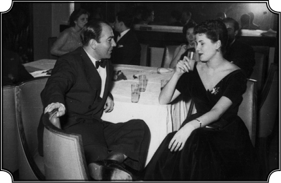
1958-1959’da, ODTÜ’de öğretim görevlisi iken bir bayan arkadaşıyla.
Üniversite’nin sponsorları kimlerdi?
Üniversiteyi kurmak isteyen Demokrat Parti; Menderes buna destek veriyor. Birleşmiş Milletler de destek veriyordu. Geniş çapta bizim Türklerin kurduğu bir yer ama dışarıdan da hocalar getiriyorlar. Zaten ilk tartışmamız da oradan oldu, baktım benim bölüme olduğu gibi, başka bölümlere de profesör adına olmayacak kimseleri getiriyorlar. Mesela Norveç’te lise hocası olan bir adamı getirmişler, onu adeta idareci mevkiine koymuşlar, adam cart curt emir veriyor hâlbuki lise hocası. Ben Amerika’dan doktoramı almışım, hatta bu esnada kitabım da çıkmış ama burada durum değişik. Neyse ben öğrencilerle ilgileniyorum ve her zamanki gibi öğrencinin Türkiye gerçekleri ile baş başa kalmasını, anlamasını istiyorum…Neyse 1958 geçti, 1959 geldi, ben çalışıyorum. Bu arada benim kitabım da çıktı ve sağda solda satılıyor.
İngilizce olarak.
İngilizce olarak çıktı. Orta Doğu’ya çalışmaya gelenler, bunu görmüş okumuşlar, beğenmişler konuşuluyor ortalarda. İşte Clement Dodd ile tanışmam böyle oldu. Rahmetli Çobanoğlu beni çağırdı. “Kemal Bey” dedi “bu bölümü kurdunuz, geliştirdiniz, güzel ama şimdi İngiltere’den Clement Dodd gelecek. Clement Dodd, İngiliz hariciyesinde çalışmış bir kimsedir ve burada ileriye dönük bir çalışma programı hazırlayacak, lütfen onunla çalışın ve bu planı hazırlayın.” Ben oturdum kurlardan falan oluşan bir program hazırladım. Sonra Dodd geldi. Efendi de bir adam, sonradan Türkiye hakkında birçok yazısı da oldu ama o tarihte meçhul bir adam.
Kim gönderiyor bu şahsı?
Bunu İngiltere gönderiyor.
Ama kimle bağlantı kurarak gönderiyor?
Dışişleri’yle. Fazla haberim yok ama bunu dekanımız Fuat Çobanoğlu, Hariciye’yle görüşerek hallediyor. Adamın bir program hazırlayıp, idari bölümlerin daha güzel gelişmesini sağlayacak bir durum yaratmasını istiyor. Nitekim Dodd geldi, dediğim gibi, gayet güzel anlaştık, benim hazırladığım program vardı, adam baktı “çok iyi, benim buna ilave edecek fazla bir şeyim yok, bunu sunalım” dedi. Olduğu gibi sunduk. Aradan iki ay geçti adam dönmüştü bu arada, Fuat Bey rahmetli yine beni çağırdı: “Kemal Bey” dedi “Dodd hani bir program hazırlamıştı buraya gelince, şimdi buraya bu bölümün başkanı olarak gelecek, siz artık ona tabi olarak çalışacaksınız.” Yahu inanılacak bir şey değil, bizim memlekette hevesimizi kıracak devamlı bir şeyler yaratıyorlar. Düşününüz ben Amerika’dan mastır derecesi, doktora derecesi almışım, kitabım yayınlanmış ve kitap hakkında en önemli dergilerde methiyeler dolu yazılar çıkıyor, şimdi Dodd geliyor, benim yerime geçiyor. Hani “Sen Türk’sün işe yaramazsın” gibi bir şey bu. Dodd’un doktorası da yok, sırf İngiliz olduğu için buraya yönetici oluyor. Ondan sonra baktım benim kontratım var yenilenmesi gerekiyor ama yenilenmiyor.
Aleyhinizde kulis faaliyeti mi var?
Var herhalde çünkü benim kitabın ismi de sürekli etrafta dolaşıyor. Kitapta tenkitler var. Gerek hükümete ve onun altında bu tip tek partili hükümeti kuran, tek partili rejimi kuran, sonra demokrasi maskesi altında hâlâ eski mantaliteyi devam ettiren zihniyete karşı tenkitler var derinde. Kitabın beğenilmesinin sebebi bu zaten. Bu tabii derhal etrafa yayıldı ve baktım kontratım yenilenmiyor. Yani iki sene çalıştığım ODTÜ’den istifa etmem gerekiyor. Ben Montana Üniversitesi’nden gelirken oradan istifa etmek istemiştim ama bölüm başkanı Tom Paine (benim orada kalmamı istiyordu), “Verme istifanı biz sana bir-iki sene izin verelim” demişti. Ve şeklen ben hâlâ Montana Üniversitesi mensubuydum.
Montana’ya dönmeden önce biraz kitabın etkilerini konuşalım. Kontratınızın yenilenmeme sebebi kitabınızda demokrasinin savunucusu olarak iktidara gelmiş Demokrat Parti’yi de eleştiriyor olmanız herhalde?
Evet, o kitapta Demokrat Parti eleştirisi de vardır ve orada “olaylar gelişiyor, sosyal durum beklenmedik gelişmelere gebedir” diyorum. Ve birçok insan bu sözleri 1960 askeri müdahalesinin habercisi olarak gördü, gelip konuşmak istediler benimle. Evet, ben tek partiye muhalifim ama Demokrat Parti’nin demokrasi adına kurduğu diktatoryaya yahut da diktatoryaya yönelik uygulamalarına da karşıyım, bunun için rahatsız oluyorlar.
Kitapta “Türkiye’de demokrasinin alacağı nihai şekil hakkında bir hüküm vermek için vakit henüz erkendir… Türkiye’de gerek sosyal, gerek ekonomik demokrasi denemesi başarısızlığa uğrarsa, kuvveti eline alacak tek rejim ifrat rejimi olacaktır. Böyle bir halde de aşırı sağ ilk ihtimal olarak görülmektedir” diyorsunuz. Aslında bir darbe ihtimali öngörmüyorsunuz ve 1961’de seçimler bu hava içinde yapılırsa Demokrat Parti’nin yenilgiye uğrayacağını da öngörüyorsunuz, bir sayfa önce.
DP 27 Mayıs’tan önce seçim kararı vermiş olsaydı benim kanaatime göre büyük olasılıkla darbe olmazdı. Kitapta ordunun hassasiyetini şöyle belirttim: “Menderes orduya karşı hoş olmayan şeyler söyledi. Orduyu küçültücü beyanatlarda bulundu” gibi. Sonradan yayınladığım ve benim de çok ilginç olarak gördüğüm “Bir Müdahalenin Sosyal Analizi” diye uzun bir yazım vardır. Askerlerle konuşarak 1960 müdahalesinde rol almış bilhassa “14’ler” diye bilinen Alparslan Türkeş tarafıyla da görüşerek 1960’ı analiz ettiğim bir yazım var. Darbe içinde darbe yapılıp yurtdışına gönderilen bu kesimle, mesela Orhan Kabibay’la da görüşmüştüm. 27 Mayıs müdahalesi bir süre, yani Milli Birlik Komitesi üyelerinin bir kısmı bir çeşit iç darbe ile yurtdışına tayin edilinceye kadar sağ bir rejim olarak çalışmıştır.
O analiz yazısı nerede yayınlandı?
Amerika’nın en önde gelen dergisi olan American Historical Review’da.
Bu makale Türk Demokrasi Tarihi kitabının 1967 Türkçe basımında yok.
Yok, yok. Bu makaleler ayrı şekilde var. Makalelerimin çoğunluğu İngilizce çıkmıştır. Onlar iki cilt halinde Brill tarafından yayınlanmıştır. 1. cilt 2001’de Osmanlı’yla ilgili yirmi beş-otuz makalemi içeren 800 sayfalık bir kitap şeklinde yayınlanmıştır. 2.’si ise 2004’te yayınlandı, Cumhuriyet devriyle ilgili makalelerimi kapsayan yedi yüz elli sayfalık bir kitap, onun içinde var. Kanımca çok önemli bir çalışmadır.
Katılımcı ya da gözlemci olmak…
ODTÜ’de yapamayacağınız anlaşıldı. Montana’ya dönmek istediniz.
İşte böylece ODTÜ ile ilişkim kesildi. Bunun üzerine ne yapacaksın? Montana’ya durumumu sordum, hemen cevap geldi, “Derhal gel, yerin açıktır.” Bu esnada vize işlerim de halloldu. İşte o zaman Amerika FBI’ı, vesairesi bir sürü araştırma yapmış, benim bu Rumen memurla görüşmemi bildiren yazı okunmuş. Zürcher’in kendisi söyledi bana “çok iyi olmuş, iyi ki o yazıyı yazmışsın” dedi. Neyse sonunda “Tamam” dediler, yani “senin hakkında herhangi bir şüphe yok, artık daimi vizeni alabilirsin.” Ve nitekim ben İstanbul’dan daimi yeşil kart vizesini alarak Amerika’ya döndüm.
Peki, şöyle düşünmediniz mi: Siz bu çok partili rejime geçişi analiz eden bir kitap yazmışsınız. Şimdi 1957’deki seçimlere hile karıştırılması dahil, Demokrat Parti yönetimi despotluğun derecesini artırmış, polis idaresi sertleşmiş, üniversitelerde yeniden bir kaynaşma ve hareket var.
Evet, ben 1957 seçimlerini izlemiş, uzun bir araştırma da yayımlamıştım.
Tam da bunun kitabını yazmış bir insan olarak o tarihlerde kalıp gelişmeleri izlemek istemez miydiniz, tam da o kritik yılda, 1959 sonunda dönüyorsunuz?
İzlemek isterdim. Fakat o zaman ve ondan sonra da bende hasıl olan düşünce şuydu: Artık ben mecrasına girmiş, ne yapacağı belli, donanımlı bir kimseyim. Türkiye’de birçok gelişmeyi yakından takip ediyorum. Bir kısmına yürekten katılıyorum, bir kısmına katılmıyorum, desteklemiyorum. O zaman her sosyal ilimcinin yapması gereken bir şeyle karşılaştım: İngilizce tabiriyle “participant” ya da “observer” olmak.
Katılımcı ya da gözlemci olmak.
Evet. Şimdi Türkiye’de bulunduğum sürece birçok şeye katılıyorum. Mesela 1960’tan sonra Yön dergisi çıkmıştı. Yön beyanı vardı.
Aydınlar bildirisi dediğimiz.
Beş yüz kişinin imzaladığı, sosyalist ama her şeyden önce devletçi bir şeydi o. Ben o beyana karşı çıktım Forum’da “bu beyan faşist bir beyandır” diye iki makale yazdım. Doğan Avcıoğlu (ki bu hareketin başındaydı ve iyi tanırdım), buna çok alındı. “Bize faşist dedin” dedi. “Hayır” dedim “ben şahsen sana hiçbir zaman faşist diyemem, değilsin de zaten. Ama sizin tavsiye ettiğiniz hareket faşizm; ekonomiyi devletin eline vermek ve devleti her şeyin üzerine çıkarmak ve toplumu böyle değiştirmek. Bu çok parlak bir fikir olarak gözükmekle beraber, bizim Türkiye’de ihtiyacımız olan demokrasinin tam tersidir” dedim. Yani bazı olaylara katılıyorum ama gidip de nümayişlerde yer almıyorum. Şimdi eğer ben participant (katılımcı) olursam, tarafsız olamam, katıldığım grubu tutmam gerekiyor. Observer (gözlemci) olarak kalırsam tarafsız olabilirim, ona göre ele alıp inceleyebilirim. Bu böyle rastgele verilmiş bir karar değildi. Ben participant olabilirdim, birçok şeye katıldım. Aslında ben bir hareket adamıyım, aksiyon adamıyım, bunu biliyorum. Fakat diğer taraftan da entelektüel olarak, olayları soğukkanlı şekilde, gerçeklere uygun olarak incelemek istiyorum. O zaman bir yerde fedakârlık yapmam gerekiyor. Aksiyon adamı olmaktan vazgeçip, tarafsız bir observer olmam gerekiyor ama ben observer olarak da birçok şeye katılabilirim. Yazdıklarımla, söylediklerimle de etkili olabileceğime inanıyorum. Nitekim öyle oldu. Bir sürü sağcı, solcu, aktivist hareket yok oldu. Aktivist solculardan büyük bir kısmı demokrat oldu. Demokrat olunca da yani iki tarafı da görünce çok daha faydalı oldular. Mesela bunlardan biri Cengiz Çandar, diğeri Şahin Alpay, oldukça iyi tanıyorum. Bunlar sol hareketin en ileri gelenlerindendi, en aktifleriydi, hatta o kadar aktif ki bunlar, Filistin’e gitmişler, orada eğitim görmüşlerdi, yani tam manasıyla militan. Bugün ne oldu? O aksiyonun yeter derecede netice vermeyeceğini anlayınca çok daha makul, demokratik yollardan mücadeleyi seçtiler ve bugün Türkiye’nin belki en tanınmış demokratları arasındadırlar.
Türkiye’de kalmanızla participant olmanız, gitmenizle observer olmanız arasında paralel bir zorunluluktan söz etmiyorum, hem kalıp, hem de observer olabilirdiniz.
Olamam. Çünkü Türkiye’de kaldığım müddetçe participant oluyordum. Amerika’dan gelir, bir hafta, on gün soğukkanlılıkla her şeyi takip eder, görür fakat on-on beş gün sonra ben de şu veyahut da bu görüşe katılarak, onun savunucusu olur, onu sağa sola anlatır, iletirdim. Onun için mesela size belki inanılmayacak bir şey gibi gelecek ama ben Türkiye’de hiçbir kitap ve makale yazmadım. Ancak Türkiye’den çıkıp Amerika’ya döndükten sonra, olaylardan ve olayların sübjektivitesinden ayrıldıktan sonra, yani participant olmaktan çıkıp, observer rolüne geçtiğimde yazabiliyordum. Bu halen de böyle.
1961 Anayasası sırasında da Montana’da mıydınız yoksa gelmiş miydiniz?
Anayasa için Türkiye’ye gelmiştim anayasa hazırlık çalışmalarında. Ama 1960’ta oradaydım ve 1960’ta darbe haberi çıktığı zaman, üniversitedeki arkadaşlar benden bir konuşma yapmamı istemişlerdi ve derhal orada bir konuşma yaptım.
Ne dediniz?
“Bu darbeyi tasvip etmiyorum, görünüşte belki haklıdır fakat temelde haksız bir darbedir, çünkü bir yerde Türkiye’yi gitmek istediği yoldan alıkoyacaktır” gibi eleştirilerde bulunmuştum ama hakkını da vermiştim. Menderes’in ve o devirdeki Demokrat Parti’nin dar görüşü ve bilhassa Menderes’in şahsi diktatorya kurma gibi yollara tevessül ettiğini, yani savunmak istediğini ve onu iktidara getiren demokrasiyi bu defa kendi diktatoryası için feda etmeye kalktığını belirtmiştim. Şöyle demiştim: “Diğer taraftan Adnan Menderes bir çığır açmıştır, her şeyden evvel bu kişi bir anti-bürokrattır. Evet, toplumun üst kademelerinden gelmiş, Aydın’ın zenginlerinden, toprak sahibi bir insan ama Menderes şimdiye kadar sözü işitilmemiş bir kesimi, halkı temsil ediyordu. Bazılarının ‘halkçıyız’ demelerine karşın Menderes bizzat halk arasından çıkmıştır.”
Nasıl halk? Büyük toprak sahibi, eski derebeylerinden gelme?
Derebeyi ama derebeyi de bir yerde halk kitlelerine daha yakındır. Menderes bir “ağa” olarak köylüyü devlete karşı koruyordu, eski ayanlar gibi. Ayan devlete hâkim değildi ama Menderes olmuştu. Bu fırsatı heba etti. Sivil rejime itaat etmeyi kabul etmiş olan askere hakaret etti ve İnönü’ye saldırdı.
Yani Osmanlı devlet bürokrat zümresinin ve aydın elitinin dışında olmayı kastediyorsunuz herhalde?
Elitin dışındadır. Benim savunduğum meselelerin bir tanesi budur.
Osmanlı’yı reformlara zorlayan Ayanlar
Yani Menderes, sizin tarih çalışmanızda sık sık sözünü ettiğiniz “Osmanlı’da reformları zorlayan ayanların” temsilcisi, onların devamı…
Ayanların temsilcisi, yani Türkiye’nin modernleşmesine yol açan ve halkı temsilen, yani komünite dediğimiz (yani siyasileşmeye yüz tutmuş cemaat) şeye hâkim olarak kuvvet kazanan kimse. Ayanın iki güç kökeni vardı. Bir tanesi toprağı, ekonomik araçları kontrol etmesi. Fakat toprağı aynı zamanda üretici sıfatıyla da kontrol ediyordu. O, topraktan büyük üretim sağladığı sürece, toprağın azami verim vermesini sağlamaya çalışan bir adamdır. Dolayısı ile halkın da bu toprağın veriminden istifadesini sağlar. Yüksek toprak verimi ticareti artırır, yerel ekonominin gelişmesini hatta milli ekonominin gelişmesini sağlar, bu bir. İkinci kaynak doğrudan doğruya halkla temastan gelir. Ayanın hiç değilse bir dereceye kadar halkı memnun etmesi gerekmektedir. Çünkü halk ondan memnun kaldığı sürece toprağını işler, vergisini verir ve bundan derebeyi de istifade eder, yani bir yerde derebeyiyle yahut da ayanla (buna derebeyi demek doğru değildir, ayan daha doğrudur), halk arasında yeni bağlar var, kapitalizm sayesinde.
Cumhuriyet döneminde bile halkıyla beraber alınıp satılan köyler vardı ve bu ayanların Osmanlı döneminden kalan mal varlıkları ve eski tarz ilişkileri sürüyordu. Aydın, Denizli bölgesinde, Menderes vadisinde, Urfa’da, Malatya’da, yani köyler halkıyla beraber alınıp satılıyordu. Toprak ağalığı sürüyordu. Cumhuriyet Halk Partisi ancak 1940’lardan sonra müdahale etmeyi göze alabilmiş ve karşısında hemen ciddi bir muhalefet, direniş bulmuş değil mi?
Köyler hâlâ alınıp satılıyor fakat bu büyük bir şey değiştirmiyordu. Halk Partisi 1940’larda Toprak Kanunu’nu çıkarttığı zaman olaylar oldu. İşte Menderes, büyük toprak sahipleri filan bu şekilde muhalefete geçti. Bu konuya tekrar döneriz. Anadolu’nun bir kısmında bilhassa güney bölgelerinde, Güneydoğu’da Divani dediğimiz tımar sistemi vardı ve burada arazi mülkiyeti belirli kişilerin elindeydi, burada devletin müdahalesi azdı. Burada bir dereceye kadar bir feodalite tipi vardı. Burada bizim geleneksel manada anladığımız Avrupa tipine benzer bir feodalite sistemi vardı. O, bizim çok övdüğümüz tımar sisteminin çalıştığı yerde ise devlet feodalitesi var ve belki de en kötüsü budur. Çünkü devlet feodalitesi, devletin gücüne dayandığı için değişimi de çok zordur ve kötü şekil değiştirir. Hâlbuki diğeri, sosyo-ekonomik şartların baskısıyla değişir ve bir dereceye kadar onlara uyum sağladığı için biraz daha günümüze uygun hale gelen şekiller alır. Nitekim Osmanlı devletinde “Sened-i İttifak” dediğimiz bir şey vardır. 1807-8’de II. Mahmud’un imzaladığı bir senet. Burada “Ayan” dediğimiz grupların, işlettikleri yahut da idare ettikleri toprakların mülk sahibi sıfatıyla sahibi olacakları kabul edilmiştir. Hani bu yapılana bugünkü adıyla “özelleştirme” diyebiliriz. Bu ise devletin toprağı kontrol ederek ülke içindeki münasebetleri kontrol etmek imkânından mahrum kalması demektir.
Devletin tüm toprakların ve tebaasının tek sahibi olma dönemi bitiyor, artık “Bu toprağı senden aldım şuna verdim, sen şuraya gideceksin” diyemeyeceği bir dönem başlıyor…
Diyemeyecek çünkü toprak, kontrolün temeli. Özgürleşmenin de. Bütün mesele burada. Bizim sosyalistlerin, komünistlerin anlamadıkları da bu. Çünkü Türkiye’de sosyalistler, komünistler devletçidirler. Devletçi kafası ile düşünürler, onlarda her şeyi emirle, tepeden inme düzeltme mantalitesi vardır. Cemiyet içinde, toplum içinde oluşa gelen dinamikleri anlamıyorlar. Ayanlar, bu değişmekte olan toplumun, sürecin bir parçasıdır, onu objektif olarak bu şekilde görmek lazım, toprak sahibidir ama bu toprak eskiden devlete aitti.
I. Meşrutiyet döneminde bu ayanlarla devlet arasında çok önemli bir çatışma sürüyor ama bir taraftan da reformlar gerçekleşiyor.
Evet. Zaten ayanların devlet idaresine karışmasını sağlamak ve onların devletle bir dereceye kadar işbirliği yaparak çalışmasını sağlamak düşünülmüştür. Devletçi kafasıyla, yani eski devlet düşüncesiyle, her şeyin üstünde kimseye hak tanımayan devlet düşüncesini II. Mahmud temsil etmiş. Gerçi II. Mahmud aynı zamanda modernleşme de getirmek istemiştir ve onun için II. Mahmud’u en güçlü modernist sayan araştırmacılar da çıkmıştır. Bunların arasında rahmetli Niyazi Berkes var. Evet ama II. Mahmud aynı zamanda 18. yüzyılın sonunda başlayan ve 19. yüzyılda gelişmekte olan bu yeni piyasa şartlarının daha normal gelişmesini, kapitalist ekonominin kendi akışı içinde gelişmesini ve yerleşmesini engellemiş, yok etmiş ve sonuçları itibariyle de devletin bir bakıma dağılmasına yol açmış bir kimsedir.
Devleti güçlendirme adına yola çıkıp tam tersi sonuca ulaştığını mı söylemek istiyorsunuz?
II. Mahmud tek başına devlettir, “Devlet için çalışacaksın, benim için çalışacaksın” der. Eskiden halkın gözünde devlet; din, kültür, tarih vesaire karışımından oluşan bir kavramdı. II. Mahmud bunu kişiyle özdeşleştirmiştir. Fransa’da kralın dediği gibi; “L’Etat c’est moi” yani “devlet benim”; II. Mahmud’da bunu görüyoruz. Eski Osmanlı devrinde bu yoktu. Zaten “derin devlet” vesaire gibi şeyler de sonra oluştu, İttihat ve Terakki devrinde, Cumhuriyet devrinde oluştu, ondan evvel “derin devlet” diye bir şey yoktu. II. Mahmud böylece kişiyle özdeşleşen devlet rejimini, yani kendi kişisel iktidarını kurdu. Buna bürokrasi karşı geldi, yani II. Mahmud’un yarattığı sözde modern bürokrasi. III. Selim zamanında da bürokrasi var fakat eskiden bürokrasi devlet içinde erimiş, onun bir parçası olmuş, toplumun da bir parçası olduğu için bunlar fark edilmiyor. Şimdi II. Mahmud bürokrasiyi, kurduğu sözde modern okullar yolu ile topluma hâkim olmak için yaratmış, yani totaliter bir düşünce ürünü olarak güçlendirmiştir ama bu şekilde yaratılan bir bürokrasinin geleceği de sağlam değil. O halde bürokrasi kendi varlığını emniyete almak için karşı geliyor, direniyor.
Cumhuriyet dönemine gelelim tekrar. Bu durumda Halk Partisi II. Mahmud düşüncesinin devamı, Menderes ve arkadaşları da hem ayanların hem modernist bürokrasinin devamı mı oluyorlar?
Evet, söz Menderes’ten açılmışken; Menderes bir bakıma yüz elli seneden beri oluşmakta olan modern dünyaya, pazar ekonomisine uyma çabalarının, toplum içinden gelen isteklerin bir ifadesiydi, bunu bir dereceye kadar anlamıştı. Onun bir orta sınıf yetiştirmek istemesi “her mahallede bilmem kaç milyoner yetiştirdik” sözleri falan tenkit ediliyor ama Menderes “mal mülk sahibi olmak ayıp değil, çünkü aynı zamanda bu adam ekonomik güç yaratıyor” diyor. Bütünüyle alırsanız, Amerika’yı Amerika yapan bu zihniyettir, ben bunu Amerika’ya gidince anladım. Turgut Özal bu görüşü biraz değişik şekilde ifade ederek “her şey ekonomidir, kazançtır” dedi ve topluma kabul ettirdi. Ve Türkiye’yi baştan aşağı değiştirecek bir çığır açtı.
Menderes de Türkiye’yi “Küçük Amerika” yapmak istiyordu zaten.
Küçük Amerika ama taklit olarak değil, içinden kuvvetlenen bir Amerika yapmak istiyordu ki bugün gördüğümüz bu. Hani bugün Türkiye şüphesiz ki 1940’larda, 1950’lerde, 1960’larda gördüğümüz Türkiye değil. Çok güçlü, muazzam bir Türkiye var. Devlet sayesinde olmamıştır bu. Toplumun kuvvetlenmesi, yeni bir orta sınıfın ortaya çıkması, gördüğünüz bu şirketler, iş adamları sayesinde olmuştur. Devlet bunları bazen desteklemiş ama çoğu yerde engellemiştir. Çünkü devlet bir yerde otoritesini korumak istiyor her şeye rağmen.
Bu devlet, II. Mahmud dönemindeki bürokrasinin bir bölümü, daha sonraki İttihat Terakki’nin örgütlediği sistemin bir bölümü ve eski devletin atadığı ayan sınıfının bir bölümünden oluşan bir mekanizma oluyor sizin görüşünüze göre.
Evet, bu…
Cumhuriyet Halk Partisi de bunun siyasi parti olarak da örgütlenmiş hali mi oluyor?
Devletin siyasi olarak örgütlenmiş hali ama Cumhuriyet Halk Partisi kendisine taban oluşturmuş kitleleri de inkâr etmiştir. Ağalarla, şeyhlerle en çok işbirliği yapan, bilhassa Doğu ağalarıyla işbirliği yapan CHP’dir, hâlâ da öyle bir bakıma. Devlet de onlarla işbirliği yaparak Doğu’yu idare edebiliyor o ayrı mesele. Devlet daima toplumun içinden doğan güçlü gruplara karşı çıkmıştır ve toprak sahipleri bunların en önde gelenlerindendir ve bu güç aynı zamanda devletin korkusudur. Zaten Türkiye’nin yakın tarihindeki kopukluk bu orta sınıfı yok etmek için başlatılan devlet teşebbüsüyle de ilgilidir. Mesela 1945’teki Toprak Kanunu reformu. Ne kadar güzel gözüküyor bu reform ama Toprak Kanunu’nu incelerseniz, ana amacının bilhassa Ege bölgesinde bulunan toprak sahiplerini, ekonominin çok önemli bir grubunu oluşturan, ihracatımıza ürünler yetiştiren (nispeten küçük işletmelerle), entansif ziraat yapan grupları yok etme düşüncesi olduğunu görürsünüz. Bu yok edilmek istenen grupların arasında Menderesler ve bir sürü mebus da var. Onlar Toprak Kanunu’na karşı çıktılar. İlk muhalefet Türkiye’de Toprak Kanunu’na karşıdır. Toprak Kanunu her ne kadar “sosyal adalet” adına, “zavallı köylümüze toprak verme” gibi masallarla meşru gösterilmek istenmişse de aslında bu kanunun amacı, devlete gerçek manada karşı koyan, direnen ve toplum içinde büyük kuvveti olan bir grubu yok etmekti. Bu grup da işte o ayanlar zamanından değişerek gelmiş toprak sahipleriydi. Bunlar artık ağa değil, piyasa şartlarına göre sermaye sahibi olan okumuş kimseler ve (işin garibi) demokrasi savunucularıdır. Sonradan bunların bazıları fabrika kuracak dünya çapında firma sahipleri olacaklardır. Bunları Batı ve Orta Anadolu’da modernleşmiş eski ayanların bulunduğu bölgelerde bulabilirsiniz.
Menderes de bunların en büyük ailelerinden birine mensuptu.
Bunlardan birisiydi ve Menderes’in en büyük gücü onun Doğu’da memleketin en fakir yerlerinden birinde değil Batı’da olmasındaydı. Ege bölgesindeydi ama Doğu’da da birçok insan ona destek veriyordu. Hani bir yerde bu siyasi gelişmelerin ardında çok derin, tarihi, ekonomik, sosyal gelişmeler yatıyor. Bunları anlamak için 1962’de Anadolu’da 7-8 aylık bir çalışma yaptım. Mesele şuradan çıktı, “Siz niye bu olaylara katılmıyorsunuz” dediler bana. Ben de diyorum ki ben observer olmam gerektiğine inandım çünkü bir yerde bir adamın bunları anlayıp, anlatması gerekiyor. Toplumun ihtiyacı olan, meydanlara çıkıp nutuk atan kimseler değil, bu nümayişleri, gösterileri gerektiren sebepleri bulan, onların amaçlarını tayin eden, soğukkanlı, tarafsız düşünen kimselerdi. Ben o zaman da buna inanıyordum, bugün de halen buna inanıyorum. Bunun için de observer kalmaya gayret ettim. Evet, participant olsaydım büyük şan şeref sahibi olurdum, bakan olurdum, başbakan da olabilirdim, yani tevazuu bir tarafa bırakarak diyebilirim ki bakan da, başbakan da olmanın yollarını çok iyi biliyordum. Bir ara Demirel’e de söyledim bir konuşmamızda “Süleyman Bey” dedim “Ben aslen siyaseti anlamak ve anlatmak istiyorum. Ben siyaseti mevki sahibi olmak için istemiyorum, kullanmak isteseydim, eğer benim öyle bir hırsım olsaydı ki yoktur maalesef, ben isteseydim bakan da, başbakan da olurdum.” Tevazu belki bunu söylemememi gerektiriyor. Fakat ben içimde bu kudreti görüyorum.
Demirel’le bu görüşmeyi ne zaman yaptınız?
1960’lar ve 70’lerde. Onu 1964’te tanıdım, sonra da temasımız devam etti.
Parti başkanı olmuştu değil mi?
Olmuştu. Olduğu zaman tanışmıştım. Ve demokrasinin devamını istediğim için onu desteklemiştim. Onun Adalet Partisi başkanı olmasını istemiştim ve oldu. O tarihte onun gibi bir insana Türkiye’nin çok ihtiyacı vardı. Türkiye’de demokrasinin yerleşmesi için yaptığı çaba eşsizdir.
27 Mayıs’ta Amerika’nın tavrı
Peki, bunlara sonra gelelim. Şimdi siz 1960’ta Montana Üniversitesi’nde bir konferans veriyorsunuz. Bu darbenin bir tarafıyla haklı, bir tarafıyla haksız olduğunu, yani haksız derken Türkiye’nin demokrasi serüvenini kesintiye uğratabilecek bir durum olduğuna inanıyorsunuz fakat bir taraftan da Menderes’in böyle bir darbeyi hazırladığını, yani yol açtığını, çanak…
Yol açtığını da, çanak tuttuğunu da söylüyorum. Çünkü aşikâr olarak Menderes’in yapmaması gereken şeyler vardı. Her ne denirse densin, Türkiye’de ordu belirli bir şeyi temsil ediyor…
Tam olarak neyi temsil ediyordu o yıllarda ordu?
Ordu; şerefi, memleketin namusunu, bütünlüğününü temsil ediyor. Onun sembolik yolları var. Şimdi alay ediyoruz, “Vatan-Millet-Sakarya nutukları” diyoruz. Evet ama her ülkede o ülkenin, o devletin ve o milletin belirli alanda temsilcileri vardır. Bizde de tarih nedeniyle olsun, kültür nedeniyle olsun birçok değerimiz ordu tarafından temsil ediliyor veya orduya hamlediliyor. Siz ne kadar anti-diktatör olursanız olun, ne kadar demokrasi taraftarı olursanız olun bir yerde yine ülkeyi, devleti, milleti temsil eden sembollere karşı, kurumlara karşı saygınız vardır, onlara ihtiyacımız vardır. Hâlâ yapılan anketlerde halkın en çok güvendiği kurum yüzde 86-90’lara varan oranlarda ordudur. Bu gerçeği biz inkâr edemeyiz, sen kalkıp da buna hakaret etmek istiyorsun, ediyorsun. Mesela İstanbul’da 1955’te Menderes olayları açıklaması için görevli generalimize, “küçük general sen de söyle” gibi adeta ilkokul çocuklarına yapılan muameleyi yapıyor, bunları araştırdım. Daha evvel bahsettiğim yazımda bu var, bunu bizzat 1960 hareketine katılmış subaylar anlatıyor. Ben o subaya açıkça sordum “sen ne zaman bu darbeyi düşünmeye başladın?” diye. Adam açıkça söylüyor “biz” diyor subay, (yazımda adı da vardı), “Ordumuzda, paşayı, generali gözümüzde çok büyük bir adam, orduyu temsil eden, bizim hepimizin ulaşmak istediği yüksek biri, yüksek bir hedef olarak görüyoruz, hepimiz paşa olmak istiyoruz ve biz hepimiz sivillere göre kendimizi çok daha iyi yetişmiş, onlardan üstün görüyoruz.” “Ama ben” diyor “bir paşanın otomobilin kapısını bir sivile (Menderes’e) açarak, onun karşısında eğildiğini görünce buna tahammül edemeyeceğimi anladım.” Gene birisi, “İzmir’deydik, arkadaşlarla subay elbisesiyle bir gazinoya gittik” diyor, “etrafımızdaki masalar sivillerle dolmuş. Garsonlar onlara derhal hizmet ediyor, bakıyor, getiriyor. Biz üç-dört subay masada bir kenarda kalmış, oturup bakıyoruz. Bize hiç kimse önem vermiyor. Çünkü artık subay olmak, subaylık mevkii toplumun gözünde önemini kaybetmiş. Biz parasız, geliri alabildiğine düşük, boğaz tokluğuna çalışan bir grup olarak görülmüş ve onun için dışlanmışız. Bu bize hakaretten çok daha derin bir şeydi.” “Biz toplumda yerimizi yok etmişiz, arkadaşlara döndüm ve dedim ki, ‘arkadaşlar bu artık böyle gitmez hareket zamanı geldi’” diyor. Ve bunu bana aynen bu şekilde anlatan o bahsettiğim subaydı. Bahsettiğim makalede ismi var, belki de Orhan Kabibay’ın kendisiydi…
Peki, bunlar darbeci subayların hani biraz ruh halleriyle ilgili ama darbeyi tek başına açıklamaz tabii ki değil mi? Şöyle bir çelişkiyi nasıl izah ettiniz? Şimdi Menderes hükümeti önemli ölçüde Amerika’nın desteğini almıştı. NATO’ya girmiş, Kore’ye asker göndermiş, Amerikan askeri heyetleri tarafından modernize edilmeye çalışılan bir Ordu var. Bu Ordu hükümete karşı bir darbe yapıyor. Amerika’nın sizce bu darbeden haberi yok muydu? Önceden mi onayladı? Tavrını nasıl aldı?
Şimdi size çok açık seçik bir şey söylemek istiyorum. Türkiye’de olup bitenleri illa dışarıdan bir gücün idare ettiği, ona göre Türkiye’de darbe yapıldığı vesaire gibi bir düşünce var. Bence bu alabildiğine sakat ve Türkiye’de olup bitenlerin doğru dürüst görülmesine, anlaşılmasına ve ona göre çare bulunmasına engel olan bir düşünce tarzıdır. Türkiye kendi başına karar verecek, hareket edecek bir ülkedir. Amerika’nın Türkiye’de bazı menfaatleri vardır. Bazı hareketlerin şu şekilde gelişmesini ister, bazılarının gelişmemesini ister ama Amerika bir çırpıda emirle Türkiye’de ne hükümet değiştirebilir, ne orduya emir verebilir. Bu böyledir, Amerika ancak dolaylı olarak etkide bulunmak ister. Şimdi Amerika karşılaştığı Türk devlet adamları ve idarecileriyle görüştüğü zaman şu veyahut da bu şekilde ifadede bulunabilir. Hatta bunların bazıları nahoş derecede emir verici şekilde de olabilir, kişiden kişiye fark eder. Amerika veyahut herhangi bir ülke, kendini bilen, sağlam, tarihi olan bilinçli bir ülkeye emir veremez. Şimdi Amerika’nın Menderes’ten soğumaya başlamasının başlıca iki nedeni vardır. Bir, onun diktatörce politikası; çünkü her şeye rağmen Amerika demokrat bir ülkedir ve demokrat ruhlu bir toplumu vardır ve bu toplum, diğer toplumları, demokrasiye olan bağlılığı ve demokrasi uğruna yaptıklarıyla ölçer. Ama bazen bu demokrasi hoşlarına gitmez. Bilhassa son senelerde demokratik yolla seçilmiş kişileri tanımazlıktan gelmesi buna örnektir.
Tanımazlıktan öte de gittiklerine dair çok fazla örnek var. Örneğin 1973’te seçimle gelen Allende’yi devirmek için Şili’de ordu darbesi yaptırdılar değil mi?
Evet, bütün bunlar vardır. Allende’ye karşı yaptılar, daha önce İran’da Musaddık’a karşı falan.
Onu da devirdiler.
Evet. Bütün bunlara rağmen eğer bir ülke demokrasi yolunda direnirse, hiç olmazsa Amerikan halkının hürmetini cezbeder. Devletin idarecileri Amerikan devletinin, hükümetinin kendine seçtiği ahlaki prensiplerin dışında hareket etmeye başlarlarsa ve sonra bu durum halk nezdinde bilinir, anlaşılırsa onlardan daima hesap istenir. Mesela İran’a Reagan hükümetinin silah satmasında olduğu gibi. Bu sorgulandı ve hâlâ sorgulanıyor. Şimdi Irak Savaşı var, bu Irak Savaşı sorgulanacak, bugün sorgulanmıyor, çünkü Amerikan ordusu orada, devleti orada, fakat bir yerde sorgulanacak. Bununla “Amerika yüzde yüz ahlaka, demokrasiye uygun hareket ediyor” demiyorum, diyemem de. Siyasetin ruhunda ahlaksızlık var maalesef ve bilhassa devletlerarası siyasette bunlar oluyor. Biz hak-hukuk esasına göre hareket etmeyi kendine hedef almış ve öyle hareket eden bir Osmanlı Devleti bildiğimiz için hiç olmazsa ilk üç yüzyılda böyle hareket eden bir devlet geleneğinden geldiğimiz için devletlerin de mutlaka hak, adalet yolunda gitmelerini savunuyoruz. Ama tatbikatta bu olmuyor ve bu bize ters geliyor. Bilhassa Amerika gibi dünyaya demokrasi götürmeyi vaat eden ve her yerde demokrasiden söz eden bir ülkenin, demokrasi ile ilgisi olmayan hareket tarzlarını benimsemesini kabul edemiyoruz. Edememiz de çok doğru. Menderes’e gelince, Menderes’in bu şekilde demokrasiye aykırı, bizzat kendisinin vaat ettiği prensiplere aykırı hareket etmesi, işte soruşturma komisyonları kurması…
Vatan Cephesi...
Vatan Cephesi, İnönü’ye yapmadıklarının kalmaması…
Provokasyonlar…
Yani gayet çirkin şeyler, gazetelerde bol bol örnekleri vardı, (ben o zaman Amerika’daydım), okuyordum bunları. Halk nazarında Menderes bir diktatör olarak görülmeye başlanmıştı ve tenkit ediliyordu. Belki Amerikan hükümeti Menderes’le iyi geçinmek istiyordu, fakat halk nazarında Menderes artık bir demokrat değildi, savunduğu demokrasiden uzaklaşan bir insan olarak görülüyordu, bu bir. İkincisi şu: Amerika biraz para yardımını kesmekle, askeri yardımı kesmekle Menderes’ten uzak durmaya başladığını gösterdi. Bilhassa 1957 seçimlerinden sonra Amerikan hükümeti, Demokrat Parti’nin büyük oy kaybetmesiyle, halkın artık Menderes’ten uzaklaştığını düşünerek çekingen olmaya başladı. Hâlâ yardım ediyor, hâlâ birçok yerde Türkiye’yi destekliyor ama 1952-54’teki eski destek yok. Buna karşı Menderes büyük bir hata yapıyor, Rusya ile dostluk yollarını arıyor. Amerika’ya hani, “Sen bizi yarı yolda bırakacaksan biz de sana karşılık verir, senin baş düşmanın olan Sovyetler Birliği ile işbirliği yapabiliriz” diyor. İşin garibi şudur: Bu gibi gelişmeler Rusya’ya ısınma devrinin başlaması, benim de Romanya’ya gitmemin kolaylaştırılmasına yol açıyor. Çünkü 1957-58’de bu hareketlerin sonunda Türkiye artık Amerika’dan kopabilir düşüncesi hâkim…
Rumenlerin “Türk entelijansiyasını yakından tanımak istiyoruz” demelerinin sebebi bu yakınlaşma stratejisinin parçası…
“Artık Türkiye kopacak biz de ilişkilerimizi geliştirelim” düşüncesi. Bu arada aile hasretiyle yanan Kemal Karpat’a da vizesini veriyor, ailesini görmesine izin veriyor falan.
O dönem Sovyetler-Türkiye ilişkilerinde resmi gelişmeler de oldu, yani oraya heyetler gitti, geldi...
Evet, heyetler gitti, geldi ve Menderes bunu açıkça ifade etti; “Biz Rus taraftarı falan da olabiliriz” gibisinden. Bu gibi şeyler çok önemlidir; hani taraf değiştirmek gibi bir şey çok incelikle, ancak netice alma şartı ile yapılabilir.
Menderes’inki ise daha çok blöf ve şantaj mı kokuyordu?
Evet. Blöf ve şantaj havası vardı, yani gülünçtü. Netice vermezdi. Bakınız İnönü de böyle bir şey yapmak istedi fakat o da sözde kaldı. O meşhur “Johnson Mektubu” vardır, Kıbrıs konusunda.
Evet, İnönü “dünya yeniden kurulur, biz de yerimizi alırız” demişti.
Ama orada fazla harekette bulunmadı, yani bunları çok iyi biliyordu İnönü. Amerika’ya bir uyarıydı. “Arkadaş bak sen bizim temel menfaatlerimize dokunuyorsun, Kıbrıs bunlardan biridir, fazla ileri gitme. Zorda kalırsak biz de tedbir alırız” demek istedi ama o sırada bir şey yapmadı. Sonrasında, neticede bir şey yapıldı ve sonuç alındı.
Menderes Hükümetinin devrilmesi Amerika’nın işine geldi o zaman yani…
Pek işine gelmedi. Çünkü her şeye rağmen Amerika’nın da Menderes’e bir yatırımı vardı. Ne derler hani “insan elindeki kuşu”…
Eldeki serçe daldaki sülünden yeğdir...
Amerika belki de onun gitmesi nedeniyle pek de fazla hoşnutsuzluk göstermedi ama “Menderes Amerika’nın emriyle gitti” falan demek, işte o saçma sapan bir şey.
Amerika, Ordu’nun bu hareketi yapmasına bilerek göz yumdu denemez mi?
Ama bir şey yapamazdı, yani Amerika’nın bu 1960 hareketini hazırlayan subaylarla, yakın ilişkisi olduğunu anlatan hiçbir şey görmedim ben, varsa görmek isterim.
Ama Amerikan Ordusu ile Türk Ordusu ve istihbarat mekanizmaları o kadar iç içe ki ordunun her kademesinde Amerikalılar var, Amerika’nın bu darbe hazırlığından haberi olmaması mümkün mü?
Valla olmaya da bilir. Bunlar o kadar büyük sırlardır ki ancak bunun içinde olan kimseler bilir, ben bilmiyorum. Fakat olduğunu da sanmıyorum. Çünkü ben bir yerde Amerika’yı çok iyi tanıyorum. Amerikalıların o kadar ince düşünceli, her şeyi evvelden hesap edebilecek kapasitede olduklarına da inanmıyorum, yani o kadar hatalar, yanlışlar yapıyorlar ki… Onların muazzam para ile ayakta tuttukları CIA, FBI ve ayrıca Ordu İstihbarat Servisi var. Çok lafı edilmiyor ama ordunun kendisinin bir istihbarat servisi vardır. O da her yere kanatlarını yaymış vaziyettedir. Buna benzer belki Amerika’da daha on-on iki tane, çeşitli isimler altında istihbarat adına kuruluş var. Bütün bunlara rağmen Amerika her şeyi tümüyle anlayacak, hatta eline gelen ipuçlarını da değerlendirecek durumda değil ki bunun en güzel misali de 11 Eylül’dür, yani 11 Eylül’ü haber veren bazı ipuçları ortaya çıkmıştır; değerlendirmemiş, yapamamış, engel olamamıştır. Yani Amerika’nın kuvvetinin de bir yere kadar gittiğini görüyorsunuz. Amerika’nın gücüne olduğundan fazla önem vermemek gerekiyor.
Orhan Kemal, Nâzım Hikmet, Kemal Tahir…
Tekrar zaman akışına dönelim. Montana’dasınız. Darbe oldu. Ve siz tekrar Türkiye’ye döndünüz, hâlâ gidip gidip geliyorsunuz?
1960 yazında hemen “ne oldu, bitti” diye büyük bir merakla geldim ve olayları yerinde takip etmeye başladım. Birçok insanla temas ettim, görüştüm ve gün be gün gelişmeleri takip ettim. Sonra tekrar Montana’ya geçtim fakat Üniversite’deki dersleri bitirdikten sonra, 1961’de erken bir tarihte Türkiye’ye geldim. O zaman Anayasa hazırlanıyor. Anayasa’yı hazırlayan kim? Halk Partisi öne çıkıyor. Ve bu defa ben de hadiselerin içine girdim. Nereden bulmuşlarsa bilmiyorum, benim İstanbul adresime bir telgraf geldi: “Yeni Anayasa ile ilgili çalışmalara katılmanız emrediliyor. Derhal Ankara’ya geliniz.”
İmza Milli Birlik Komitesi mi?
Galiba Milli Birlik Komitesi. “Falanca kişiyle temas ediniz” deniyordu. Ve ben, paldır küldür hemen Ankara’ya gittim. Anayasa son şeklini almış ve İngilizceye tercümesi gerekiyor. Sadık Balkan, Ahmet Uslu ve ben varız, bize vazife verildi: “Anayasa’yı İngilizceye çevireceksiniz, derhal!” Biz oturduk Anayasa’yı çevirdik ve bu Anayasa çevirisi bizim ismimiz altında yayınlandı, yani dünyada ilk tanınan işte bu Anayasaydı.
Peki, bu Anayasa ve darbe üzerine Ankara’da hiç önemli insanlarla, askerlerle Milli Birlik Komitesi üyeleriyle görüşmeleriniz tartışmalarınız oldu mu?
O zaman Ankara’da birçok kişiyle görüştüm olayları yakından takip etmek fırsatını buldum ama ben bu defa kendi isteğimin dışında, emirle participant olmuştum. Aslında ben bu olan biteni fazla tasvip etmiyordum açıkçası ve zaman zaman darbe aleyhine sözler etmeye başladım. Bunlar bazı kişilerin hoşuna gitmedi. Ama etrafta dolaşmak ve konuşmak için çok da fazla zamanım olmadı çünkü çeviriyi çok acele istiyorlardı ve neredeyse yükün büyük bölümü benim üzerimdeydi. Ama parayı diğer ikisi aldılar, benim payımı “Amerika’dan geldiğim” için vermediler, o da ayrı mevzu. Zaten çeviri biter bitmez de ayrıldım. Çünkü bu esnada bana Harvard’dan davetiye çıktı, daha evvel bir konferansa katılmıştım Harvard’da. “Türk Edebiyatında Akımlar” adlı uzun bir tebliğ vermiştim (Middle East Journal’da iki makale halinde yayınlandı), sonra bu tebliğ bir önsözle birlikte Türk Edebiyatında Sosyal Akımlar adıyla Varlık Yayınları tarafından basıldı. Bu, benim Türkçe’de çıkan ilk büyük yayınımdır. Daha Demokrasi Tarihi çıkmadan o kitabı okumuş kimseler beni oradan bilir.
Yıl?
İngilizce’si 1961-62’de, Türkçe’si 1964’te çıktı. Rahmetli Yaşar Nabi görmüş, beğenmiş, bana sordu; “Tercüme edelim mi?” “Et” dedim. Hatta bir gün gene kendisini ziyaret ettiğim zaman çıkardı az bir miktar para verdi, “Nedir bu” dedim. “Telif hakkın” dedi. Sonra o kitap birkaç defa basıldı, yani o kitap yalnız benim edebiyata olan yakınlığımı göstermiyor, aynı zamanda benim nasıl düşündüğümü, Türkiye’deki gelişmeleri nasıl gördüğümü de anlatıyor. O kitapta sosyal olayların yeni bir edebiyat yarattığını belirtmiş, “Türkiye’de sosyal edebiyat gelişiyor” demiştim. Demokrasi tamamlanmadığı için toplum kendine mahsus bir edebiyat yaratıyordu. Ve orada saydığım birçok ismi şahsen tanıdım, yakın dostluk kurdum. Orhan Kemal mesela, kaç defa evinde ziyaret ettim. Balat-Fener tarafında, çok mütevazı bir işçi muhitinde yaşıyordu. Onunla yürüyüşler yapıp bir sürü konuyu, bu arada demokrasi, diktatörlük konularını tartışırdık. Çok efendi, çok akıllı, çok cana yakın bir adamdı ve açık fikirliydi. Amerika’yı tanımıyordu, ben anlattım, Amerika’nın sosyal sistemini vesairesini anlattım ve bana o zaman dedi ki “Tam sosyalistlik Amerika’da varmış demek.” “Evet bir bakıma” dedim, “sizin sosyalizmden beklediğinizi bu adam kapitalizm yoluyla ama demokrasi yoluyla veriyor.” Aynı şekilde Yaşar Kemal’le yakınlığım vardı. Yaşar Kemal’i de beğendim ve beğenirim de ama bunların içinde dostluğumun en uzun süreni ve beni en çok etkileyeni Kemal Tahir olmuştur. Kemal Tahir’le 1962’lerde, 1963’lerde yakınlık kurdum, evime geldi, uzun uzun konuştuk, düşünce bakımından çok istisnai bir kimseydi. Benim edebiyatçı olmadığımı söylüyordu; “Bu edebiyatçı düşüncesi değildir” falan diyerek söylüyordu da. “Ben edebiyatçı değilim, ben edebiyatın, toplum içindeki yerini, fonksiyonunu inceliyorum, ben edebiyat yazmıyorum. Çok edebiyat okudum ettim ama ben edebiyat yapmıyorum” diyordum ona.
Kemal Tahir ne anlatırdı size?
Birçok konu konuşurduk. Nâzım Hikmet’le dostluklarını uzun uzadıya anlattı, Nâzım Hikmet’ten gelen mektuplarını getirdi, onları okudu bana, daha onlar yayınlanmamıştı. Nâzım kaçmıştı ama mektup geliyordu, ona da dolaylı olarak geliyordu ve çok defa onun mektuplarını okurken ağlardı. Bana sordu bir gün, “Ne düşünüyorsun” diye. “Nâzım Hikmet benim gözümde her şeyden önce hür bir adam” dedim. “Ne kastediyorsun hür adam demekle” dedi. “Bak” dedim; “sen Devlet Ana’da devletten söz ediyorsun. Her tarafta devletin varlığından ve her şeyin onun emrinde geçtiğinden söz ediyorsun. Ben ise bu devletin dışında, devleti oluşturabilecek, ona güç verecek fakat yüzde yüz ona tabi olmayacak kişilerden söz ediyorum, öyle bir düşünce tarzından söz ediyorum ve benim gözümde Nâzım Hikmet işte böyle bir adamdır, her şeyden önce hür bir adamdır. Bak ne kadar temiz düşünüyor, hislerini olduğu gibi yazıyor, komünisttir ama benim gözümde Nâzım Hikmet hiçbir zaman tam manasıyla Sovyet rejiminin beklediği tipte bir komünist olamaz ve değildir. Çünkü orada da rahatsızdı.” Onun, Rus bürokrasisini tenkit eden bir piyesi vardır. Türkçe’ye tercüme edildi mi edilmedi mi bilmiyorum. Açıkça orada Nâzım Hikmet tenkit ediyor bulunduğu rejimi. Sonra anlattılar; Nâzım Hikmet’in Rusya’ya gitmesine rağmen orada en yakın dostları Azeri Türkleriymiş. Sık sık Azerbaycan’a gidermiş, başlangıçta parası az olduğundan, Azeriler ona para toplarlar, geçimine yardım ederlermiş, yani onun orada da Türklüğü devam etmiştir. Polonya asilzadesinin torunu, ırk manasıyla tam Türk değil ama hür bir adam olarak kalmıştır. Bugün benim açımdan Nâzım Hikmet’in en önemli yönü hür bir adam olarak kalmasıdır. İnsan komünist parti üyesi olabilir ama hür de kalabilir, bir adam İngiliz liberal partisinin üyesi olabilir ama devletçi olarak kalabilir. İşte bunları ben Kemal Tahir’le tartışıyor, konuşuyordum.
Mesela Kemal Tahir’le devlet konusunu tartışmanızda siz varolan devlet geleneğine karşısınız o ise bu devlet fikrini yüceltenlerdendir; nereye varırdınız sonunda?
Bir yere varamazdık. Şimdi o devlete bir güç olarak bakıyordu. “Devlet bir güçtür, Başbakan şimdi emir versin en büyük işadamına, istediğini yapmazsa onu anında siler; bunu kabul etmek lazım” derdi. Bense o gücü tenkit ediyordum. O ise bunu geleneksel bir kültüre dayandırıyor ve onda mistik bir taraf buluyordu. Fakat gerçekten çok bilgili, çok olgun bir adamdı.
Bu yazarlarımızı kıyaslamak isteseniz hangi yönleriyle kıyaslardınız mesela?
Mesela Kemal Tahir bir akıl adamıydı. Hani bir sanatçıdan daha çok bir roman ustasıydı. Yaşar Kemal ise hissi bir adamdı, hisleriyle hareket ederdi. Bana hep Çukurova yıllarından, anılarından söz ederdi. Orhan Kemal ise benim en çok yakınlık kurduğum ve takdir ettiğim yazar olarak akılla hissi birleştiriyordu. Orhan Kemal sosyal olayları inceler ve orada, o olayların içindeki insanı bulup çıkartırdı. Aziz Nesin’le üniversite yıllarımda o Marko Paşa’yı çıkartırken bürosuna gidip tanışmıştım ama esas tanışmamız 1968-70’lerde Çatalca’da kurduğu Yurt’a gidip gelmemle oldu. Aziz Nesin edebiyat konuşmaktan hazzetmezdi, daha ziyade politika konuşurduk.
Sonra ilişkileriniz hiçbirisiyle sürmedi galiba, neden?
Sürmedi, çünkü hem ben burada sürekli kalmıyordum hem de onlar giderek daha fazla günlük politikaya bulaştılar, o zaman da görüşmelerimiz seyrekleşti.
Evet, şimdi siz 1961’de Montana’ya geri döndünüz ama bu arada Harvard’dan davet geldi demiştiniz?
İşte benim orada böyle bir konferans vermem, birçok kişinin ilgisini çekmiş.
Bu arada tanındım, sonra kitabım çıktı ve ondan sonra Harvard beni, bir seneliğine oraya davet etti. 1961 senesinden 1962 yazına kadar Harvard’daydım. Daha evvel belirttiğim gibi Hüseyin Nail Kubalı gelmişti. İşte onunla o zaman 1921 Anayasası’nı görüşmüş, tartışmıştık.
Başka kimlerle ilişkiniz oldu Harvard döneminde?
Harvard’da birkaç konferans dışında başka bir işim yoktu. Kütüphanesi ve bazı hocaları ünlüydü Harvard’ın. Mesela hoca olan Kissinger ile tanıştım.
Amerikan Dışişleri Bakanı olan Henry Kissinger?
Evet. Harvard’da hocaydı, o zaman tanıştım. Harvard’da yaz programı vardı. O yaz programına Memet Fuat (Nâzım Hikmet’in üvey oğlu) da müracaat etmişti. Onun hakkında referans verdim (ona aslında ben söylemiştim “müracaat et” diye) ve geldi orada bir sömestr geçirdi. O sırada bu programa Henry Kissinger bakıyordu, o vesileyle Kissinger’le de tanıştık ama fazla bir ilişkimiz olmadı. Harvard’daki senem, gayet güzel, verimli geçti. Sonra yine Montana’ya dönmek varken, Sosyal Araştırma Kurulu diye bir yere müracaat ettim, “Ben Türkiye üzerine yeni bir çalışma yapmak istiyorum, bana bir burs” dedim ve bana bir burs verdiler. 1962’de tekrar Türkiye’ye geldim.
Çok hareketli yıllar. Ama şu 1961 Anayasası ile ilgili Ankara dönemini anlatıyordunuz; araya edebiyat girdi. Devam edelim mi?
Evet. O yıllar çok hareketli geçmiş ve hayatımda büyük değişikliklere yol açmıştır. 1961’de, daha evvel birkaç defa söz konusu ettiğim Anadolu seyahatim oldu. Başka konularda da işaret edeceğim gibi, bu uzun gezi ve inceleme Türkiye’nin taşradaki iç yüzünü, halkın düşüncelerini, duygularını bizzat yerinde tespit edip anlamak benim için çok yararlı oldu. Öteden beri bende laiklik ve din gibi hassas konularda oluşan bazı düşünceler, şüpheler ve yeni yaklaşımlar ihtiyacı, yeni bir şekil aldı ve gelişmeye devam etti.
Bir dönüşüm geçirdiniz yani...
Diyebilirim ki bu altı aylık seyahatten bir bakıma değişik bir insan olarak döndüm. Yalnız toplumu daha iyi anlamakla kalmadım, onunla daha çok yakınlaştım ve öteden beri beni tedirgin eden elitlerin tutumlarına, felsefesine karşı daha açık bir tavır almaya başladım. Kendimin de nerede olduğumu tayin etmek fırsatını buldum. Bu arada Robert Kolej’den ders vermem için teklif geldi. Hatta senelik iznini kullanan Profesör Frank vardı, onun kaldığı evi de bana tahsis edebileceklerini söylediler ve ben o şekilde tam Rumelihisarı’nın güney kulesine yakın, nefis manzaralı ve rahat bir yerde çalışmalarımı sürdürdüm. Bu arada Ankara’dan da teklif aldığım için bir süre Siyasal Bilgiler’de Anayasa dersini de verdim. Ankara’ya gidip geliyor böylece çok dolu bir hayat geçiriyor, fakat aynı zamanda da geceleri, ders vermediğim zamanlar çalışıyor, malzeme topluyor, tasnif ediyordum. Gene bu arada Londra’dan bir davet aldım. İngiltere’nin Dışişleri Konseyi’nden Profesör Bernard Lewis beni davet ederek “1960’tan sonra Türkiye’nin dış siyasetinin ne gibi bir istikamet alabileceğini” konu eden bir konuşma teklif etti. Londra’ya gittim o konuşmayı yaptım. Sonra o konuşma, onların dergisinde yayınlandı ve oldukça ilgi çekti. Daha birçok yerlere de gidip geldim ve böylece 1962’ye girdik. 1962 senesi şahsi olaylarla dolu geçti. Olayların bir tanesi, New York Üniversitesi’nin bana profesörlük teklif etmesiydi.
Hani bundan beş sene evvel yapılan fakat gerçekleşmeyen iş teklifi…
Evet ama bu sefer gerçekleşti. Verdikleri maaş da oldukça iyiydi, Montana’dan aldığım maaşın neredeyse üç misli…
10 bin dolara yakın, yani.
8.500 dolar kadar ama sonradan bu maaşın hiçbir şey olmadığını anladım. Çünkü New York’ta hayat çok pahalı. Kabul ettim ve üzülerek Montana’ya dönmeyeceğimi, oradan istifa edeceğimi de bildirdim. Hakikaten Montana bana çok yardım etmişti ve onlara karşı dostluğum her zaman berdevamdır ama ben de orada çok çalışmıştım, dersler vermiştim. Bu arada şunu da söyleyeyim, Montana’nın bana verdiği asıl önemli şey profesörlük idi. Beni terfi ettirmişlerdi ve istersem daimi olarak orada kalabileceğimi söylemişlerdi. Fakat ben şüphesiz New York’u tercih ettim.
Ve evlilik…
Başka neler oldu o yıl?
Aynı yıl Romanya’dan annem geldi, bu defa Rumenler biraz kontrolü gevşetmişler, oradaki Türklerin Türkiye’ye gelip, akrabalarını görmelerine müsaade etmişler. Köstence’deki ablamın kocası da geldi ve böylece bir hayli ziyaretçi de gelip gitti. Biraz da onların tesiri ve ısrarı ile diyebilirim 1962 senesinin ortalarına, daha doğrusu yazın sonlarına doğru evlendim.
Nerede Türkiye’de mi, nasıl tanıştınız?
Aile tanıştırmalarıyla falan oldu, yani bizim geleneksel usullere göre.
Adı neydi? O da göçmen miydi?
Refika. O da göçmen, Türk fakat değişik bir göçmen. Babası Azerbaycanlı, annesi Kazanlı. Çin’de doğmuş, orada büyümüş, sonra Türkiye’ye gelmişler, Amerika’ya gitmişler, Amerika’dan da tekrar Türkiye’ye gelmişler.
Dünya görmüş hareketli bir aile, siz de öyle, neden böyle geleneksel bir usulle evliliğe adım attınız?
Buraya kadar hayatımın her safhasında kendim düşünerek karar vermiş ve kararımdan daima kendimi sorumlu görmüştüm. Bu defa “Büyükler daha tecrübeli, onlara bırak” dedim. Esasen bu kararın arkasında biraz da insani bir korku vardı. Bir ara hastalandım, Robert Kolej’in doktoruna gittim defalarca, bana penisilin vermişti. Bir ağrı vardı midemde ve ateşim vardı. Bilhassa ateş, beni daha kötü etti ve sonra hastaneye gittim, Amerikan Hastanesi’nde üç hafta yattım. Bir sürü tahliller ve testlerden falan bir şey çıkmadı, sonra bu ateş düştü, yavaş yavaş iyileştim çıktım. Ondan sonra tesadüfen öğrendiğim gibi bir mononükleosismiş, yani istirahatla ve hemoglobin almakla geçiyor. Bu kadar basit şeyi keşfedemediler, beni neredeyse antibiyotikle, şununla bununla öldüreceklerdi ama o hastanede yapayalnız ateşler içinde yatmak bana bir korku, yalnızlık hissi verdi. O zamana kadar böyle bir hisse kapılmamıştım. Artık yaşım da 37-38 oluyor, bu kadar yer gezdim, bu kadar şeyler yaptım ama bu hastalık, bana insanın ne kadar zayıf bir mahluk olduğunu gösterdi. İşte evliliğimi biraz da bu olaylar kararlaştırdı. Böylece evlendim, “bana uygun bir kimse, işte” dedim. Evliliğe karar verirken bütün bunları hesaba kattık. Bu arada New York Üniversitesi’nden de teklif almıştım, yeni bir hayat başlıyordu ve bu şekilde 1962 yılının Ağustos ayında New York’a döndüm, Eylül sonlarına doğru eğitime başladım. Hanım Fransız okulundan mezundu, fevkalade güzel ve fevkalade zeki bir insandı. Dört-beş ayın içinde İngilizceyi öğrendi ve sene sonuna doğru, aksansız, gayet akıcı İngilizce konuşmaya başladı, biraz da Rusça biliyordu. Bu arada New York’a gitmeden evvel Profesör Rustow ve onun bir arkadaşının hazırladığı bir konferansa katıldım. İlginç bir konferanstı, konusu “Japonya ve Türkiye’nin politik modernleşmesi”ydi. “Japonya nasıl modernleşti bugünkü haline nasıl geldi? Türkiye nasıl modernleşti ve bir türlü doğru dürüst ilerleyemedi”, bunları konu edinen çok ilginç bir konferanstı.
Niye Japonya-Türkiye kıyaslaması, yani hangi ortak noktalardan hareketle?
İkisi de Asya devleti, ikisi de geleneksel, ikisi de Batı’yla karşılaşmış. Japonya adeta Batı’yı topun ağzında kabul etmiştir. Amerikan baskısıyla kapılarını açmış, Batı teknolojisini, ilmini almış fakat bu sürede geleneklerini sürdürmüş ve modernleşmiştir. Yani Japonya misali şunu gösteriyordu: Bir ülke özünü, kültürünü, dilini, dinini muhafaza ederek teknolojiyi alabilir, yaşamına yeni şekil verebilir. Türkiye de aynı şeyi yapmış, hatta Türkiye, Japonya’dan çok evvel kapılarını Batı’ya açmış, birçok reform yapmış, fakat ne doğru dürüst teknolojik bir ilerleme kaydetmiş ne de kendi özünü tam koruyabilmiş. Bu arada kendi kültürünü, geçmişini, tarihinin birçok yönünü yıpratmış, unutmuş. Bu neden olmuştur? Konferansta ben, Osmanlı’da basının gelişmesi ile ilgili bir tebliğ verdim, Halil İnalcık da “Türkiye’nin Modernleşme Tarihi” üzerine bir tebliğ sundu. Aynı şekilde Japonya’da da tarihsel geçmiş, basın, eğitim konularında yani her bölüm başlığıyla ilgili karşılıklı Osmanlı ve Japon uzmanları tarafından tebliğler verildi. On kadar bölüm vardı. O konferansta sunulan tebliğler iki sene sonra kitap olarak Political Modernizations in Turkey and in Japan adıyla basıldı. Ben de Türk okuyucusuna faydalı olur düşüncesiyle, bu tebliğlerin hülasasını 10 makale halinde Milliyet’te yayınlaması için, Abdi İpekçi’yi tanıyordum ona verdim. İtiraf edeyim ki beklenmedik bir ilgi uyandırdı ve belki de benim Türkiye’de bir dereceye kadar tanınmama yol açtı. Fakat gerek bu konferans olsun, gerek bu yazılar olsun, modernleşme, yenileşme, Batılılaşma gibi konulara yeni bir açı, yeni bir yaklaşım getirdi. O konferanstan sonra işte o senem 1962’nin ikinci yarısı ve 1963’ün başları New York Üniversitesi’ndeki derslere kendimi vermekle geçti.
Devlet, din ve laiklik
New York Üniversitesi’nde hangi dersleri verdiniz?
Devletlerarası İlişkiler, Ortadoğu gibi konular vardı. Oraya yine Osmanlı ve Türkiye ile ilgili bir ders soktum. Fakat bu arada tekrar İslam’la uğraşmaya, İslam’ın üzerine eğilmeye başladım. Benim tam manasıyla ne olduğumu, ne yapmak istediğimi tayin etmem gerekiyordu. Gerçi Türk olduğumu biliyordum, her zaman dediğim gibi Svilengrad’dan Türkiye’ye girerkenki yeminim daima aklımdaydı ve Türkiye’yi tanıtmak, Türk insanının iyiliğini ortaya koymak için çalışıyordum. Kimliğim hakkında herhangi bir şüphem yoktu ama Türkiye’ye geldikten sonra rijit bir laiklik anlayışı ve uygulaması gördüm.
Neydi bu katılık tam olarak?
Dini siyasileştiren, devlet olmuştur; mesele budur. Laikliğin birçok tarifi vardır. En geçerli tarif şudur: Bugün İran’da olduğu gibi; bir ruhban sınıfının siyasete hâkim olmaması, siyaseti düzenlememesi esas olmalı. İlk, kaba ve belki de temel tarif budur. Ama İran’ın o yönetimi altında bir modernleşme de oluyor o ayrı mesele. Türkiye’de bir dereceye kadar doğru hareket edilmişse de dinin de kendine mahsus serbest bir alanı olduğu kabul edilmemiş, o alan içinde kendisini, kendi kendine idare etmesi, serbest fikirler ileri sürmesi ve buna kimsenin karışmamasını sağlayacak bir otonom saha dine verilmemiştir. Osmanlı’da 19. yüzyıla kadar dinin bir otonom sahası vardı. Her ne kadar 17. ve 18. yüzyılda din, devlet emrine girmişse de ve devlet dini istediği amaçlar için kullanmış ise de yine ilk iki yüz, üç yüz sene içinde hâkim olan din-devlet ayrılığı Osmanlı’ya mahsustur ve bizim kültürümüzde ve zihnimizde yer etmiştir. Otonomi sahibi iki varlık, devlet ve din.
Şeyhülislamlık burada tam olarak nereye giriyor?
Şeyhülislamlık ayrı mesele. Şeyhülislamlık devletin dine hâkim olması için kullanılmıştır. Evet, şeyhülislamlık yaratıldığı zaman (II. Murad ve Fatih zamanında) hakikaten bu iki sahayı ayrı tutmak, ayrı ayrı geliştirmek için yaratılmıştı ve ilk şeyhülislamlar da bu durumu çok iyi anlamış ve ona göre hareket etmişlerdi. Fakat 16. yüzyılın ikinci yarısından sonra bilhassa çok methedilen Ebussuud zamanında bu ayrılık kalkmış, şeyhülislamlık devletin emrine girmeye başlamıştır. Maaşını görüyorsunuz yükselmiştir, bidayette (başlangıçta) şeyhülislamın maaşı çok düşüktü.
Hangi padişah döneminde bu kontrol başladı?
Bilhassa Kanuni zamanında başladı.
Kanuni buna niye gerek duydu?
Kanuni’den ziyade buna bürokrasi ihtiyaç duydu. Çünkü sürekli değişim var, toplum değişiyor, yüz elli-iki yüz seneden beri kullanılan yöntemler artık yetişmiyor ve bunların yerine yeni yöntemlere ihtiyaç duyuluyor. Hani toplum değişmiş artık, bu topluma göre yeni idare şekilleri lazım.
Aslında bu toplumun değişmesi pek de devletin istediği gibi olmuyordu galiba?
Evet, sosyal yapıda bozulmalar vardı. Bozulmaya başlayan sosyal yapı, ancak halkın kabul ettiği bir din ile kontrol edilebilirdi. Unutmayınız 16. yüzyılın ikinci yarısında “Celali İsyanları” vardır. Celali İsyanları Osmanlı tarihinde çok önemli yer tutar. O dönem Anadolu’daki bilhassa tımar düzeni bozulmuş, nüfus alabildiğine artmış ve yoksulluk baş göstermeye başlamıştı. Buna karşı halkı kontrol etmek için devlet dini kontrol etme ihtiyacını duymuş ve burada şeyhülislamla işbirliği yapmıştır. Bu şekilde yavaş yavaş şeyhülislam devlet emrine girmiş, karşılık olarak o da pastadan payını almaya başlamıştı. Bu kontrol durumu süreklilik gösterse de 19. yüzyılda Tanzimat’tan evvel bile bu kurumu, yani şeyhülislamı kontrol altına almak çok önemli hale gelmişti. Bu kontrol mekanizması en doğrudan şeklini Abdülhamid devrinde bulmuştur. Mesela meşhur Cemalettin Efendi adeta, halkın söylediği gibi,”Abdülhamid’in Şeyhülislamı” olmuştu. Daha evvel, 17. yüzyılda Katip Çelebi (Ö. 1657) bunları çok açık anlatmıştı ama etkili olamamıştı.
Cumhuriyet böyle bir mirası devralmış ve hatayı sürdürmüş mü oluyor?
Aslında “devlet-din münasebetleri” içinde bunu birbirinden ayırma adına dinin kendi ihtiyacı olan özerklik alanı tam belirlenememiş, sağlanamamıştır. Bu arada dinin adeta bir temsilcisi olan ama kendi başlarına hareket eden imam-hatip gibi elemanlar, halkın üzerinde etkili olmuşlardır. Eskiden bu meseleler kısmen medresede tartışılır, halledilir ve müftüler dünya şartlarına da yakın hal çareleri ileri sürerlerken, medresenin de kuvvet kaybetmesi, gelirlerinin azalması, vakıfları devletin kontrol etmesi, Evkaf Nezareti’nin başlaması ile artık dinin ekonomik temeli de yavaş yavaş yok olmuştur. Böylece saha, dini yozlaştıran medreselerdeki yetersiz hocalara kalmaya başlamıştır. O bakımdan ben Atatürk’ün medreseleri kapatmasını kaçınılmaz bir adım olarak kabul ediyorum. Mutlaka yeni bir başlangıç yapılmalıydı ve burada Atatürk’ün hakkını vermek lazım; Atatürk din düşmanı değildi. Dinin hakiki manasının kabullenilmesini, vicdanlara hitap eden bir hale gelmesini istiyordu. Nitekim Atatürk o devrin aydın kafalı din bilginlerine ilişmemiş, 1924’te Diyanet Müdürlüğü tesis edildiği zaman o devrin Ahmet Akseki gibi ileri gelenlerini Diyanet’te vazifelendirmiştir. Fakat diğer yandan da bir anda yeni bir din anlayışının, yeni bir görüşün din çevrelerinde yer alması da temin edilememiştir çünkü bunlara yeni eğitim verecek, yüksek seviyede dini anlatacak, gerçek İslam’ı tanıtacak bilim kurumları yoktur henüz. Diyanet, bürokratik bir müessese olarak yine devletin emrinde çalışan ve bir dereceye kadar dinin değil, devletin görüşlerini aksettiren ve savunan bir kuruluş haline gelmiştir.
Tek Parti rejiminin aynı zamanda “dine karşı baskı uyguladığı” şeklindeki karşı propaganda zeminleri böyle oluştu diyorsunuz?
Bu işler ancak çok partili sistem gelince yavaş yavaş düzelmeye başlamıştır. İlahiyat fakültelerinin kurulması ve daha yüksek seviyede bir din anlayışının ve din incelemelerinin yer etmeye başlamasıyla durum kısmen değişmiştir. Ve yine demokrasinin getirdiği serbestiyet sayesinde, Türkiye’de din, bugün kendine mahsus bir benlik, yön ve nitelik kazanmıştır ama diğer yandan dini devlet politikasına karşı silah olarak kullanan ve bundan siyasi çıkar sağlamak isteyen gruplar da ortaya çıkmıştır. Yani Cumhuriyet devrinde, bir yandan hakiki İslam’a sadık (hem aydın ve çağdaş, hem de İslam’a sadık) kalan yeni din düşüncesi doğmaya başlamakla beraber, devleti din aleyhtarı gören ve devletin politikasının bazı yanlışlarını istismar ederek, “devleti dini yok etmek isteyen bir kurum” olarak göstermek isteyenler de olmuş ve bunlar da Türkiye’de dinin siyasallaşmasına yol açmıştır. Yani böylece din cephesinde yanlışların da istismarına dayanan bir muhalefet varken, devletin yahut da devlet kurumlarının bazılarının da bu durumları gereğiyle anlayıp ona göre düzenleme yapmamaları, bu durumun çetrefilleşmesine, laikliğin yanlış anlaşılmasına ve yanlış tatbik edilmesine yol açmıştır. Türkiye’de laikliği doğru dürüst anlayıp tatbik etmek isteyenlerin yanı sıra laikliği tamamı ile politik bir silah olarak, mevkilerini muhafaza etmek, ondan çıkar sağlamak için bir ideoloji haline sokanlar da vardır. Karşı taraf nasıl dini ideoloji haline getirmişse, devlet seviyesinde laikliği ideoloji haline getirenler de vardır. Ama bunların içinde, devlet içinde olsun, toplumun aydın bölümünde olsun dinin ne olduğunu, fonksiyonunun ne olduğunu anlayan kişiler olduğu gibi, dini temsil eden kişiler içinde de aynı şekilde dünyevi İslam’dan ayrılmayan, günün şartlarına, toplumun ihtiyaçlarına, dünya şartlarına göre modern bir din anlayışını savunan kimseler de vardır. Şimdi benim size anlatmak istediğim şuydu: Bu meseleler daha 1950’lerin sonuna doğru benim kafamı meşgul etmeye başlamışlardı.
Sizin kendi kimlik arayışınızla beraber…
Benim kimlik arayışım, toplumun modernleşmesi, demokratlaşması hepsi birbirine girmiş ve bunları bir yerde dinden, din hürriyetinden ayırmaya imkân olmadığını ama bu arada “dinin yeni şekilde anlaşılması” gerektiğini düşünmeye başlamıştım. İşte New York Üniversitesi’ne girdikten sonra, hem bu meseleleri incelemek hem de kendimi aydınlatmak için İslam’la ilgili bir kur, bir seminer koydum ve bu meseleleri bu seminerde tartışmaya başladım ve bu büyük ilgi uyandırdı. Aynı zamanda Türkiye siyasetini, tarihini de tez olarak okutuyordum. Bunlar birden olmadı tabii.
“Kıbrıs Davası”nı savunmak Karpat’a düşer
1963’e dönüyoruz tekrar.
Evet, şimdi o yılın olaylarına dönelim. Kıbrıs konusu var, çok önemli. 1963 yılı baharında Makarios, Kıbrıs’ta 1959-60 anlaşmalarına uygun olan düzeni değiştirmeye kalktı. Türklere verilen hakları yok etmeye başladı. Askeri kuvvet kullanarak Türklerin yaşadığı bölgeye tam manası ile hâkim olmaya çalıştı, ona karşı gelenleri öldürme yolunu tuttu. 1963 senesinde böylece bir Rum taarruzu ve kıyımı başladı. Burada tamamı ile kabahat Makarios’a aittir. Fakat onlar dünyaya bu olayı adeta Türklerin, Rumlara hücum ettiği, isyan ettiği gibi bahanelerle mazur göstermek istiyorlar. Her gün gazeteler bu haberlerle çıkıyor ve Rumlar “şu kadar Türkü öldürdük, şu kadar sindirdik” diye adeta bir Haçlı Seferi yaratarak meseleyi bir Müslüman-Hıristiyan kavgası şekline dönüştürüp Batı’nın sempatisini kazanmaya çalışıyor. Hâlbuki ortada gayet açık bir şey var; bir düzen kurulmuş ve bu düzen Kıbrıs, Türkiye, Yunanistan ve İngiltere tarafından kabul edilmiş ve garanti edilmiş. Ama buradan hiç ses soluk çıkmıyor. Bizden de.
Bir taraftan da Türkiye’de ciddi tepkiler oluşuyor.
Evet, Türkiye’de gazeteler bağırıyor çağırıyor ama dışarı bir şey çıkmıyor. Tabii o zaman New York’ta bulunan birkaç arkadaşla buluştuk ve bu duruma karşı bir şey yapılması gerektiğini söyledik, anlaştık ve ilk defa altmış-yetmiş kişilik bir grup olarak Birleşmiş Milletler binasının önüne gidip Kıbrıs Türklerine yapılan muameleyi protesto ettik. Birleşmiş Milletler’deki Türk elçisine gittik, “ya bir şey yapalım ya da yapınız” dedik. İsmini vermek istemiyorum, öyle bir elçi ki İngilizce bilmiyor… Bize dedi ki “görmüyor musunuz İngiltere, Fransa imparatorlukları çöküyor, milyonlarca kişi orada ya hürriyetini kazanıyor, ya yok olup gidiyor, senin Kıbrıs’taki bir avuç Türküne kim kulak asacak.” Bize bunu söyleyince o kadar infiale geldik ki bu adamın duyarsızlığına karşı bir şeyler yapmak istedik. Orada bulunan ve bizimle aynı fikirde olan ve Ankara’da sözü geçen bir memur vardı, onunla görüştük. O da İnönü’yü tanıyormuş, İnönü’ye mektup yazdı ve sonra bu elçiyi çektiler oradan…
Eylemleriniz bu gösteriyle sınırlı kalmadı herhalde?
Tabii. Bu gelişmeler olurken ben oturdum New York Times’a hitaben bir mektup yazdım. “Kıbrıs’ta durum şudur: Anayasa, temel kanun ihlal edilmiştir, Rumlar o anlaşmaları ayakaltına alarak Türkleri yok etmek istiyorlar. Nitekim Murat Bey Köyü’ndeki Türklerin hepsini öldürmüşlerdir.” Mektubu Times bastı. Etkili oldu. Bu vesile ile Amerika’da Kıbrıs Türklerini savunan bir konuma geçtim. Artık Amerika çapında CBS’te filan konuşuyorum. Doktora jürimde yer alan Profesör Vlavianos ile birlikte CBS’e çıktık, tartıştık o hocamla. Tabii biz haklı olduğumuz için nispeten ben üstün geldim. Rumların hoşuna gitmedi. Az zaman sonra bir olayla karşılaştım. Bir hoca arkadaşım beni dersine davet etti ve “Kıbrıs’ı anlat” dedi. Ben de gayet objektif, bir saat anlattım. Bazıları kaşlarını çatmış bakıyor, belli. Aradan birkaç gün geçti. Bir bayan öğrenci beni görmek istedi. Gayet güzel falan. Kıbrıs konusunda Türk görüşünü sordu. Anlattım. Makaleler istedi. Masamın üzerinde bizim sefaretin yazdığı broşür vardı. “Bunlar var ama buna dayanarak herhangi bir şey yapmayın bunlar propaganda broşürüdür” dedim. Onları aldı gitti. Sonra Dekan çağırdı. “Derste Türk propagandası yapıyormuşsun ve broşür dağıtıyormuşsun” deyince meseleyi anladım.
Tuzağa düşürüldünüz yani…
Evet, aslında kız da sonra söyledi gerçeği. Yani benim onu uyardığımı. Ama Rumlar benim atılmam için idarenin peşine düştüler. Akademik hürriyetimi engellemeye çalıştılar. Benim için kötü tecrübe oldu. Tabii televizyonlara çıkmaya devam ettik. Bir keresinde bir İngiliz, bir Rum bir de ben varım. Program öncesi tatlı diller var Rum’dan. “Dedeleri Pontus’tan gelmiş, kardeşiz filan”... Ben de aynı davrandım. Sıcak dostça ortam oluştu. Fakat TV önüne çıkınca bir değişti ki bu Rum. Sert ve acımasız oldu. İnanamadım. İngiliz’le de dostmuş, onla beraber beni köşeye sıkıştırdılar ama ben de cevaplarını verdim tabii. Tecrübe şunu gösteriyor: Dost olalım, oturup konuşalım ama elimizdeki silahı da bırakmayalım. Ben bu adamlara güvenmiyorum.
Siz artık resmen participant oldunuz o arada yani?
Hem de nasıl. Bu arada bana Türkiye adına da istekler geliyor, Birleşmiş Milletler Ofisi’nden. Çeşitli yerlere konuşmacı lazım, benden rica ediyorlar. Albany denen yere gittik mesela. Yunan misyonundaki sefir davet edilmiş. Öbür tarafta 1. sekreter, bizim tarafta ben. Adamı adamakıllı mat ettim. New Jersey’e gittik filan. Ama benim durumum nazik. Hudutlarım var. Üniversite mensubuyum. Nihayet bana mektup geldi, “Siz Türk Hükümeti’nin ajanlığını yapıyorsunuz, bu şekilde kaydınızın yapılması gerekiyor” diye. Daha sonraki yıllarda iki önemli konferansa daha katıldım Kıbrıs konusunda. Sonuncusu eski başkanlardan Carter’in bizzat düzenlediği Atlanta toplantısıydı. Burada tabii ki söylediklerimizden Rumlar ve Rum dostları olan Carterlar memnun kalmadı. Neyse o üniversite yıllarında bu uyarı sayılabilecek mektup gelmişti işte.
Kimden?
Resmi makamlardan. Bana Türkiye Hariciyesi tarafından verilen yol paralarını banka hesaplarından kontrol ederek bulmuşlar. Tabii ben artık cevap yazdım. Gitmedim bir daha da. Ama bu münasebetle Denktaş’ı tanıdım, hâlâ da dostluğumuz devam ediyor. Bu arada 1963 senesi yazında Columbia Üniversitesi bir davette bulundu. İlmi neşriyatım devam ediyor ya bu arada. “Siz” dediler, “Ortadoğu üzerine üniversite profesörlerine yönelik bir seminer, bir kurs verebilir misiniz? Bilgilerini derinleştirmek isteyen profesörler var.” Semineri hazırladım.
Ama sizin o zamana kadar Ortadoğu ile ilgili çalışmalarınız da olmuş muydu?
Vardı tabii. Hep “Türk, Osmanlı” diyordum ama hep Balkanlar, Ortadoğu filan var bunun içinde. Arap kaynaklarını da inceledik tabii. Bu seminerde modern siyasetle ilgili konular vardı. Çok başarılı oldu. Tertip görevlisi arkadaş, “Madem bu kadar güzel malzeme hazırlamışsın bari bunu kitap haline getir” dedi. Ben de bunun bizzat sahaya giderek derinleştirilmesi gerektiğine inanıyordum. O zaman karar verdim. 1964 senesinde dersler biter bitmez Türkiye’ye geldim. Lübnan, Suriye, Ürdün ve Mısır’a giderek o yazı Arap ülkelerinde geçirdim. Ve o arada dergi, gazete yayınlayan ileri gelen isimlerle temas kurdum, onların fikirlerini ve yazılarını toparladım. Çok faydalı ve ufuk açıcı bir saha çalışması oldu. Sonra topladığım bu malzemeyi 1968 yılında Political And Social Thought in the Contemporary Middle East (Çağdaş Ortadoğu’da Sosyal ve Siyasi Düşünce) adıyla yayınladım. Bunun içine çeşitli makaleler ve yazılardan oluşan malzemeler koydum. Bunu bir basımevi bastı ve ABD’de ders kitabı olarak okutuldu. Ben 1982’de bunu genişletip tekrar bastırdım. Peşime düştüler “aman devamını basalım’ diye. Ama telif ücreti çok yetersizdi ve çok zaman alıyordu. Üstelik orijinal ve yeni belgelerle çalışmak istiyordum.
Demirel’le dostluğun başlaması
Demirel’le de, o geldiğiniz 1964 yazında mı tanıştınız?
Evet, Demirel’le tanışmam 1964’te oldu. Türkiye siyasetini takip ediyordum zaten. Aydın Yalçın rahmetli, yakın dostumdu, Forum’u yayınlıyor ben de yazılar yazıyordum.
Hani şu Yön’deki bildirgeyi “faşist” diye eleştirdiğiniz yazılar dönemi...
Tabii bu bana karşı kötü bir tepki yaratmıştı solcular arasında. Ekonomik planlamaya karşı değildim ama Meclis’in üstünde planlama kuruluna yetki vermek faşistçe bir şeydi. Demokrasiyi mahvedecek bir şeydi. Tıpkı bugün İran’da Devrimci Konsey’in yaptığı gibi. Parlamentonun üstünde kararlar alınıyor. Bu manasız bir şey. Bu göz boyamaktır. Ben “faşizm” dedim buna, İslam açısından da İran’daki faşizmdi. Aydın Yalçın cesaretli adamdı, hürmetim vardı bu nedenle. Siyasal Bilgiler Fakültesi gibi bir solcu ortamda kendi başına liberalizmi savundu. Demirel’i anlatıyorum. 1961 seçimlerinde Adalet Partisi daha doğrusu sağ üstün gelmekle beraber hükümeti Halk Partisi’ne kurdurdular. Gene tepeden inme hükümet anlayışı devam etti.
O seçimlerde CHP yüzde 36 ile AP’yi geçmişti ama Senato’da çoğunluk AP’deydi ve Meclis’te de sağ çoğunluk koalisyonu kurabilir ve Cumhurbaşkanı da AP’nin istediği bir aday olabilirdi. Bu durum askerlerin şiddetli tepkisine yol açmış ve Meclis’i açtırmamakla tehdit etmişlerdi. Bunu mu kastediyorsunuz?
O devre hatırladığım kadarıyla şöyle bir mücadele vardı. Bir taraftan eski DP’nin muhalefeti. Çok çabuk toparlanmışlardı. Baskılara rağmen büyük bir oy toplamıştı. Bunun karşısında karşı cephe (Ordu’nun ağırlığı vardı) içinde CHP vardı ama Ordu CHP’yi kendi sözcüsü gibi kullanıyordu. CHP ise Ordu’ya dayanmakla beraber Ordu yokmuş gibi “biz sivil idareyiz” şeklinde davranıyordu. Ordu içinde de bunun yansımaları vardı. Neticede Ordu içinde yönetimde kalmayı savunan küçük grup (14’ler olarak bilinen grup) görevlerinden uzaklaştırıldı ve çeşitli ülkelere çeşitli görevlerle dağıtıldı. Böyle olunca bu defa 1960 hareketi biraz askeri yönünü kaybederek sivilleşmeye döndü, bu dönüşümü de CHP temsil ediyordu. Ama seçimlerde CHP nin aldığı oy gene de yeteri kadar, beklendiği kadar değildi. Yeni Anayasa’nın hazırlanması sırasında da diğer partiler dahil edilmemişti. Demokrasiye aykırı bir şey. Adeta CHP’nin liberal kanadının bir Anayasa’sı gibi görülüyor. Fakat halktan müthiş direniş var. 1961 gezilerimde gördüm, nereye gittiysem halk tepkisi var.
Darbeye karşı mı?
Hem darbeye hem Halk Partisi’ne karşı. Halk, darbenin Halk Partisi tarafından yaptırıldığına inanıyor ve bunların gitmesini istiyor.
Demokrat Parti’nin taban desteği darbeye ve Menderes’in demokrasiye ihanetine rağmen devam ediyor, nasıl yorumluyorsunuz bu durumu? Hani 1957 seçimlerinde bu destek kaybolmuştu?
Çünkü halk hakiki bir demokrasi peşinde. DP demokrasiyi ayaklar altına aldığı zaman (1957 seçimlerinde olduğu gibi), halk ondan da uzaklaşıyor. Halkın yeniden ümit bağladığı Halk Partisi de gene askerlerle işbirliği yapıp tepeden inme darbeyle gelince halk tekrar Demokratlara ya da onun devamı sayılan Adalet Partisi’ne dönüyor. CHP ne kadar sivilleştiğini söylese de Anayasa hazırlığında da görüldüğü gibi sürekli askere dayandığı imajını silemiyor. Bu da halkın tepkisine yol açıyor. “Halk partisi gene eski Halk Partisi, değişen bir şey yok” kanaati hâkim. Bu da eski tepkilerin yeniden uyanmasına yol açıyor. Ben gezilerimde bu şiddetli tepki ve öfkeyi gördüm ve hatta biraz da ürktüm. Köylüler, “Bizim de oraklarımız, tırpanlarımız var” diyordu. Devrimci, militan bir üslup, şiddetli bir tepkinin ifadesi. “Bizi alt edemezler, bu memleketin gücü biziz” falan diyorlardı, bu kadar açık seçik bir demokrasi isteği ve bilincine sahip bir halkı görmek beni mutlu etti. Türkiye’deki halk hakiki demokrasi istiyordu, daha doğrusu eski sistemi istemiyordu. Bu arada Adalet Partisi kurulmuş ama yönetimine hâkim olan ise Demokrat Parti’nin intikamını almak isteyen bir ekip. Buna karşı ılımlı, demokrasiye yatkın, teknolojiye ve ilerlemeye yatkın başka bir ruh, başka bir ekip var. Başlarında da Demirel var. Demirel Su İşleri’nden gelmiş barajlar yapmış, Amerika’yı biliyor, tecrübesi var. O zaman tanıştım kongre zamanında.
Siz istediniz tanışmayı ve Aydın Bey tanıştırdı?
Evet, ben istedim. Sonra evine gidip uzun uzun konuşmuştuk. Ben de siyaset hakkındaki düşüncelerimi ve tavsiyelerimi söyledim. Ona müşavirlik yaptım diye bir iddiam yok ama benim söylediklerimden yararlanmış olabilir, ona bir şey diyemem. Çeşitli defalar seçimler öncesi ve sonrası bir araya geldiğimizde ben de hep taktikler üzerine kendi fikirlerimi söylerdim o da büyük bir samimiyetle, açıklıkla beni dinlerdi. Ve 1967’de Demirel sayesinde ailemi Romanya’dan getirtebildim. Demirel başbakanken 1966 sonlarında, ailem için Romanya’ya nota verildi. Neyse Demirel Hükümeti kurulunca ben de rahat ettim. Artık bir süre işler rahat gider diye.
Ecevit ve önemi
Evet, 1965’te kalmıştık.
1965 yılında gene Türkiye’ye geldim arabayla, gene Romanya’dan geçtik. Bu defa yanımda eşim de var. Ama bu seyahatin nedenlerinden biri New York’ta düzenleyeceğim konferanstı. Üniversite tarafından desteklenen konferansın amacı Türkiye’nin siyaseti ile sosyal yapısı arasındaki ilişkileri incelemekti. Sınıfların oluşumunu, orta sınıfın ve işçi sınıfının oluşumlarını, temsiliyetlerini ve entelijansiyasını incelemeye yönelikti. Nihayet bu konferans için rahmetli Bülent Ecevit’in de gelmesini sağladım. Tanışıyorduk ama bu sefer biraz daha tanıma fırsatını buldum. O, işçi sınıfının durumunu anlatacaktı. Hatta bana dedi ki “Biliyorsunuz ben artık bakan değilim.” Ben de cevaben “ben sizi bakan olduğunuz için değil Ecevit olduğunuz için davet ediyorum” demiştim. Neyse, Bülent Bey konferansa geldi ve onu evime davet ettim ve bende kaldı, New York’ta. Hani şu tezimi yazdığım Quogue Köyünde (biraz da bankadan borç alarak bahçe içinde ev yaptırmıştım) ilk misafirim Bülent Bey oldu. O konferansa sunulan tebliğleri, benim üç yazımla birlikte 1973 yılında Social Changes and Politics in Turkey, Structural and Historical Analyses (Türkiye’de Sosyal Değişmeler ve Siyaset, Yapısal ve Tarihsel Bir İnceleme) ismiyle kitap olarak yayınladık. Orada çok az kimsenin bildiği ve kullandığı, Bülent Bey’in otuz iki sayfalık bir makalesi vardır; Yeni Bir Sosyal ve Siyasi Güç olarak İşçiler. “Bu kitap Türkiye Cumhuriyetinin 50. yılını kutlamak için yayınlanıyor” dedik önsözünde.
Evdeki sohbetlerinizde neler konuştunuz Ecevit’le?
Cumhuriyet Halk Partisi’nin ve ülkenin durumunu konuşuyorduk çokça. O zaman Bülent Bey bana laiklik konusunda Partinin gidişatından huzursuz olduğunu söylemişti. Ben de zaten hoşnutsuzluğumu dile getirmiştim.
Gezilerinizdeki izlenimlerinizi aktardınız mı?
Evet, halkın hoşnutsuzluğunu anlattım, kısmen hatalı olduklarını kabul etti.
Ecevit size o zaman geleceğin başbakanı gibi görünmüş müydü?
Açıkçası şüphem oldu. Bana göre Halk Partisi’nin halk nazarında iktidar olma şansı yoktu çünkü Partinin derin değişimlere ihtiyacı vardı. Bülent Bey rahmetli, İsmet İnönü’nün meseleleri güncelleştiremediğini samimi olarak anlatmıştı. O zaman ben, eninde sonunda Bülent Bey’in temsil ettiği Halk Partisi’nin genç kanadının Parti’ye hâkim olacağına kanaat getirmiştim. Çünkü Parti hâlâ 1930’ların partisi olarak görülüyordu, biraz da öyleydi. Ecevit’le 1978’e kadar münasebetlerimizi devam ettirdim. Türkiye’ye geldikçe gördüm. Ecevit’in yardımcısı ve aynı zamanda bakan olan Alev Coşkun, New York’ta benden ders almıştı. Onunla da ilişkim vardı. Bülent Bey insancıl yanları olan ince zarif bir kişiydi ama gerçek politik bir lider olamazdı.
Neden, eksiklikleri nelerdi size göre?
Buna ne mizacı uygundu, ne düşünceleri, ne tarzı, ne siyasi eğilimleri. Ondan sonra birçok münasebetle şahit oldum, meseleleri bir siyasinin görmesi gerektiği gibi gerçekçi olarak değil, idealist, bazen fanteziye kaçacak şekilde romantik olarak görüyordu, yani hâlâ şair, yazar olarak kalmıştı. O da başkalarının fikirlerini almaktan pek hoşlanmıyordu demokrat olmasına rağmen. Quogue ve benim bulunduğum yer çok sakin ve yeşillikler içinde bir yer olduğu için Bülent Bey’in şair ruhuna da çok hitap etmişti. Hatta şöyle demişti bana: “Kemal Bey biz yanlış meslekleri seçmişiz... Siz siyasetçi olmalı, ben ise ilim adamı olarak, edebiyatçı olarak kalmalıymışım.” Hakikaten de hayatının sonuna kadar Bülent Bey bir siyasetçiden ziyade idealist bir fikir adamı olarak kalmıştır. Çok efendi, çok iyi niyetli, insanlara derin hürmeti olan bir kimse olmakla beraber, siyaset alanında mutlaka gerekli olan o gerçekçilikten mahrumdu. Türkiye’de çarpışan çeşitli güçlerin nereden geldiğini, nereye varacağını her zaman yeterince takdir edemedi. Bilhassa sosyalist yönü nedeniyle, orta ve üst sınıflara, iş sahiplerine yatırımcılara karşı, Amerika’ya karşı tavrı biraz gerçekçilikten uzaktı.
Hep Amerika’yla ilişkileri birinci plana koyuyorsunuz, temel “gerçekçilik” bu galiba?
Amerika hakkındaki düşüncem gayet basit olarak şudur: Amerika’nın dış ve iç siyasetinde benim de tenkit ettiğim yerler vardır. Ama Amerika büyük bir güçtür, dünya çapında dünya siyasetini her bakımdan etkileyebilecek büyük ve etkili bir güçtür. Türkiye’ye yararı veya zararı dokunabilecek muazzam bir güçtür. Gerçek budur. Gerçek duygularımız ne olursa olsun Türkiye siyasetçisi olarak daima Amerika’nın desteğini sağlamaya çalışmalıyız. Çünkü buradan bize büyük fayda gelebilir. Türkiye nihayetinde orta çapta bir ülkedir, etki sahaları vardır ama halihazırda dünya çapında siyasi bir rol oynayabilecek durumda değildir. Bir siyasetçinin tutacağı yol, hislerine kapılarak değil, siyasi, askeri ve ekonomik alanda güçleri doğru dürüst anlayarak ona göre siyaset yapma yoludur. İşte Bülent Bey’le zaman zaman bunları tartıştık ama o gene de kendi fikirlerinde ısrar etti. Bülent Bey’le Türkiye’de seçimler hakkında çok ilginç görüşmelerimiz de oldu. 1977 seçimlerine kadar ben ona çekinmeden, Halk Partisi’nin, seçimleri kazanamayacağını söyledim. Halk Partisi’nin her ne kadar sağlam temelleri olsa da, bir türlü Türkiye gerçeklerini kavramamış, Türkiye’de hâkim olan görüşe, ruha uyamamış, elitist, pratik olmayan, adeta hayali ve tepeden inme prensiplerle hareket ettiğini söylüyordum. Bu da hoşuna gitmiyordu. İlk defa 1977 seçimleri öncesi, “bu defa durumun değiştiğini çoğunluk oyları kazanacaklarını” söylemiştim. O da “ Aaa nihayet sizinle hemfikiriz, şimdiye kadar tersini söylemiştiniz nihayet benim fikrimde oldunuz” demiştir. Hatta bana müşavirlik de teklif etmişti ama birkaç gün gidip geldikten sonra oradaki hava hoşuma gitmediği için bırakmıştım, isabet de olmuş çünkü birkaç ay sonra hükümet düştü, Erbakan koalisyon ortağıydı o sırada. Ecevit’e hem sevgim hem hürmetim vardı ama 1978-80’lerden sonra kendisini fazla görme lüzumunu hissetmedim. Açıktır ki Türkiye siyasetinin iç gelişmeleri belki de onun arzu ettiği, beklediği şekilde gelişmemekteydi, bana göre ise daha doğru gelişmekteydi.
Ecevit partiyi değiştirmek için neler düşünüyordu, biraz daha açabilir misiniz?
1965’te Bülent Bey, partinin özellikle laiklik konusunda değişmesi gerektiğini söylemişti. Sonra laiklik oku ve diğer oklar kalktı biliyorsunuz. Bülent Bey’in yaptığı yeniliklerden biri ve en büyük başarısı ise Halk Partisi ile ordu arasındaki birliği koparmasıdır. Yeni laiklik anlayışına doğru yol almaya başladıktan sonra Bülent Bey’e tepkiler gelmeye başladı ve ordu ile yolların ayrıldığı açıkça meydana çıktı. Bu yol ayrılığı aynı zamanda siyasi hayatta rol oynamak isteyen ordu mensuplarının sivil temelini yok etti. Bu durum 1971’de belirmeye başlamıştı ama 1980’de iyice açıklığa kavuşmuş oldu. Kenan Evren Paşa’nın dayanabileceği herhangi bir sivil, temel grubu yoktu. Bu durum 1980 sonrası yeni arayışların yolunu açtı. Siyasetin gerçek anlamda sivilleşmesine yol açtı. Özal’ın ortaya çıkıp Anavatan Partisi’ni kurarak yeni bir çığır açması güçlenmesi böyle oldu.
Yani siyasetin sivilleşmesi ve Halk Partisi’nin sivilleşmesi aslında Ecevit’in 1965’te kafasına koyduğu yeni laiklik anlayışı sonucu oldu. O zaman bunu biraz daha açalım neydi bu yeni laiklik anlayışı?
Yeni laiklik anlayışı; laikliği siyasi silah olarak ortadan kaldırmak, dini bir vicdan hürriyeti olarak, temel hürriyetlerden biri olarak ayırmak ve siyaseti bu tartışmaların dışında yürütmek anlayışı idi. Bülent Bey pek bu din konularına girmemiştir ama bir yerde şunu söylemek lazım; onun en büyük eksikliği halkçılığına rağmen bir devlet adamı, devletçi olmasıydı. Eski devlet düşüncesine bağlıydı. Belki yeteri kadar bu konuyu inceleyemedi, belki etrafındakilerin kaliteli, yeterli olmayışları da etkiliydi. Benim muhtemelen bir katkım olabilirdi ama ben buna pek yanaşmadım.
Demirel’in halk usulü sofrası
Ama siz zaten Bülent Bey’den çok Süleyman Bey’e yakındınız değil mi?
Evet, itiraf edeyim ki politik olarak ben Süleyman Bey’in görüşlerine daha yakındım, onunla da sık sık görüşüyordum. Birisi gerçek manada halkçı, diğeri devletçiydi, eninde sonunda fark buradaydı işte. Kendisiyle bugüne kadar temaslarımız devam etmiştir. Kanımca Süleyman Bey’in Türk siyasi hayatına katkıları çok büyüktür. Temelde demokrat ruhlu, demokrat düşünceli, kafası ilmi alanda çok iyi çalışan hem kendi toplumunu iyi anlayan hem de dünyanın durumunu gereğince takdir eden, değerlendiren bir insandır. Halkçı bir ruhu siyasetimize getirmiş aynı zamanda halkımızın pratik yönlerini aktarmıştır. Bir yemekteki hatıram onun halkla nasıl haşır neşir olduğunu, halk ruhuyla hareket ettiğini gösterir. Hatırlıyorum, Ankara’da evindeydik. İç siyasetten, yakında yapılacak seçimlerden, taktiklerden vesaire konuşuyoruz. Sonunda Nazmiye Hanım “yemek hazır” dedi. Süleyman Bey de “Kemal Bey” dedi “Karadenizli bir arkadaşım bize birkaç palamut göndermiş, hanım da onları pişirmiş, buyurun birlikte yiyelim.” Hakikaten ortalama bir Türk ailesinde görülebilecek tevazu ve Anadolu’nun herhangi bir yerinde rast gelinebilecek bir adet vardı. Bu tevazu ve beni ailenin bir ferdi gibi sofraya davet etmeleri gayet normal bir Türk adetidir ve Sayın Demirel de bunu temsil ediyor. Kanımca Süleyman Bey, Türkiye’nin yetiştirdiği, ülkeye büyük hizmeti olan, ülkenin bu hale gelmesinde birinci derecede rol almış bir kimsedir. Onun eskiden durmadan tekrar ettiği “Büyük Türkiye” sloganı bir bakıma gerçekleşmiştir. Süleyman Bey aynı zamanda halk kültürüne, Türk tarihine büyük değer veren bir kimsedir. Kendisi benim kasabam olan Babadağ’da bulunan Gazali Paşa Camii’nin (tamirinden sonra) bizzat gelerek açılışını yapmıştır, yanında Romanya Başkanı ile beraber. Bugün bu cami Dobrucalı Müslümanların otobüslerle gelip ziyaret ettikleri bir yer olmuştur. Ben orada yoktum ama resimleri gördüm. Bir Cumhurbaşkanı Rumeli kasabasındaki bir cami açılışına bu kadar önem veriyorsa bunun bir anlamı, bir mesajı vardır. Aynı zamanda Mecidiye Medresesi’nin açılması için Çavuşesku’dan talepte de bulunmuştur. Çavuşesku ise bir nevi göstermelik bir organizasyonla birkaç Türk’ü oraya getirtip “Medresenin açılmasını istemiyoruz” dedirtmiştir. Süleyman Bey’e şahsi bir minnetim de vardır. Romanya’daki ailemin 1967 senesinde Türkiye’ye gelmesinde kendisinin büyük desteği olmuştur. (2007 yılının sonunda Sayın Başbakan Recep Tayyip Erdoğan Babadağ’a gelip Saru Saltuk Baba’nın türbesinin tamir edildikten sonraki açılışını yapmıştır. Sonra da Demirel’in tamir ettirdiği Gazi Ali Paşa Camii’nde namaz kılmıştır. Bu iki başbakan Saltuk Baba’nın kasabasına yeni ruh vermişlerdir.)
Üniversite’deki dersler ve tarih çalışmalarınız nasıl gidiyordu bu arada?
1965’te yeni dersler soktum programa, bilhassa üçüncü dünya ülkeleri, gelişmekte olan ülkeler üzerine. Muazzam ilgi topladı. Doktora bölümü öğrencilerimin sayısı kırkı buluyordu. Undergraduate (lisans) dediğimiz bölümde de çok öğrenci vardı. Kur tanındı, benim ismim duyuldu. Üniversite beni “associate” profesörlüğe terfi ettirdi. 7 sene sonra verilen “tenure” yani daimi kalma, kürsü sahibi olma hakkını bana beş yılda verdiler. Böylece oradaki durumum sağlamlaştı. Fakat bütün bunlara rağmen benim düşüncem başkaydı. Gittikçe Osmanlı— Türk etütleri konusuna yeterince önem verilmediğini düşünüyordum. Ben artık giderek tüm enerjimi buna ayırmak istiyordum. Hani bir yerde Türkiye’ye girişimdeki yeminimi tam olarak yerine getirmek için bu alanda yoğunlaşmalıydım. Diğer dersler hem tatmin etmiyordu hem zamanımı alıyordu. 1966’da bunları düşünüyordum. Türkiye’ye yönelik yeni arayışlara gerek duyuyordum. Ayanlar, sultanlar, reformlar, dönüşümler gibi konulara ışık tutmak için geceli gündüzlü çalışmak istiyordum.
Mucizeler…
Bu çalışmaları yapmanızın önündeki engel neydi?
Tabii ki üniversitedeki derslerim, onlara ayırdığım zaman, sürekli Türkiye’ye geliş gidişler. Yani daha tam olarak yerleşmiş saymıyordum kendimi. İnanmazsınız, bu arada bir mucize oldu, (kabul edelim etmeyelim) buna mucize oldu denebilir. Bir seviyede buna inanmıyorum tabii ilim kafasıyla, ama bazı şeylerin insanın dışında oluştuğunu kabul ediyorum. Bazı tecrübelerim bu tür şeylere karşı inançlarımın gelişmesini kuvvetlendirdi. Bazen yirmi— otuz metre uzaktaki birine bir süre baktığımda onun da dönüp bana baktığını görüyorum. Hani, telepati gibi bir şey.
Ama bu da zaten bir bilim alanı içinde incelenen konulardan sayılıyor artık. Beyinsel iletişim yolları filan…
Ama ben bunların görünmeyen şeylere de gittiğini düşünüyorum. Daha fazla genişletiyorum, istekleri filan katıyorum. O dönemde bütün samimiyetimle New York’tan ayrılmayı düşünüyordum. Tam o sırada postadan bir mektup çıktı, Wisconsin Üniversitesi’nden. “Biz Amerika’nın, tarih alanında çalışma yapan en büyük üniversitesiyiz. Sosyal ilimlerle tarihi bir araya getirerek yeni bir tarih yazma sürecindeyiz. Bütün bölgeleri ve tarihlerini inceliyoruz. Bizim özellikle Türk etütleri konusunda eksiklerimiz, bu alanda uzmana ihtiyacımız var. Alakadar olursanız lütfen bize bildirin.” İşte tam benim arayıp da bulamadığım bir fırsat. Benim çalışmalarımın amacı sadece Türkiye üzerinde dönmek falan değildi. Sosyal ilimler açısından Türk tarihini ele almak istiyordum. Klasik bir tarihçi değilim ben.
Sosyal antropolojik ve sosyolojik bir çalışmayla birlikte tarihi ele alıyorsunuz.
Evet, bu çalışmaları birleştirerek ele alıyordum ki onların da bana teklifi buydu. Ama diğer taraftan da orada, New York’ta kurulmuş düzenim var, kürsü hakkımı elde etmişim, öğrenci beni fevkalade tutuyor, yeni ev yaptırmışım, New York’a arabayla gidiyorum, hafta sonu kırda, denizdeyim. Uçağa atlasan yedi saatte Türkiye’desin. Bir sürü de dostum var. Madison ise hiç bilmediğim bir yer. Wisconsin’dan trenle geçmiştim ama hiçbir şey hatırlamıyorum. Görüşmek, tanışmak için gittim tabii. Chicago’nun kuzeyinde, çok soğuk bir yer. “Buraya gelinmez” dedim. Döndükten sonra tekrar düşünmeye başladım. Bir taraftan oraya gitmek istemiyorum ama bir taraftan kendime söz verdiğim çalışmayı yapacağım. Bir taraftan her şeyi bırakmam lazım. Ama bu sefer bir dereceye kadar da kararımı kolaylaştıran etken, evliliğimin iyi gitmemesi oldu. Gitmeyişinin ana sebebi eşimin biraz bu entelektüel çalışmalardan uzak olmasıydı. Onun başka bir dünyası vardı. Çok aktif bir kadındı.
Mesleği neydi?
Mesleği yok diyebilirim, daha ziyade sekreterlik gibi bir şeyler yapıyordu. Benim çalışmalarıma ilgi duymuyordu, o daha ziyade hayata dönüktü. Böyle olmuyordu tabii. Bir yerde birliktelik manasızlaşıyordu.
O New York’ta eğlenmek istiyor, siz eve kapanmak?
Evet, o her gün bir yere gitmek istiyor, her gün bir şeyler olsun istiyor. Olmuyor. Baktım artık durum çekilmez hale geldi. Zaten arada o kadar büyük bir sevgi, aşk falan da yok. O hayatını kendi başına sürdürüyor, ben de öyle. “O zaman ayrılalım” dedik. O “Sen benden ayrılamazsın” falan dedi. Biraz da böyle çocukça tarafları vardı. Neyse karar verdik ve 1967’de ayrıldık. Ondan sonra da benim için yeni bir hayat başladı. 1967 sonbaharında eşyalarımı arabama yükleyerek Wisconsin’a gittim. Burada gene psikolojik denebilecek bir olayı anlatacağım. Evden çıktım fakat Wisconsin’a yaklaştıkça içime hüzün çöküyor. Kendime soruyorum “Nedir senin bu halin habire her şeye son verip sonra yeniden başlıyorsun? İşte üniversite gayet iyiydi, çevren, dostların, ne arıyorsun buralarda kimse yok, soğuk ücra bir yer?” “Döneyim geri gideyim” dedim. Ayaklarım geri geri gidiyor. Neyse vardım oraya bir otele girdim ama kafam karanlık, düşüncelerin ağırlığını taşıyamıyor sanki. Göl vardı, kapkara görünüyordu, sanki göle atlamak istiyordum. Bunaldım. Dayanamadım, çıktım tekrar arabama atladım, bir ana yol buldum oradan gidiyorum. Madison’un dışına doğru. Nispeten küçük bir şehirdi. Çıktım, on kilometre falan sonra kırlar arasından geçiyorum. Yemyeşil ormanlar, çiftlik evleri. Camı açtım. Ve birdenbire ot kokuları, çiçek, çayır kokuları doldu içeri. Bu kokular, tıplı köyüm Armutlu’nun kokuları gibiydi. Derin derin içime çektim. Birden kendimi evime gelmiş gibi hissettim. O ağaçları, bayırları dereleri, suları çevreyi görünce de köyüme çok benzettim. Nasıl bir ferahlama duygusu kapladı içimi anlatamam, hafifledim, “evimdeyim, evimi buldum” dedim. Kendi kendime şarkı söylemeye başladım. Bu bir mucizeydi işte. O zamandan beri Madison’dayım. Demek ki benim evim burasıymış.
Evinizi, o köyünüze benzeyen yerde mi kurdunuz yerleşmek için?
Hayır, şehirde ama gene bahçeli bir ev işte. New York’taki evimi de satmamıştım. O benim ilk evimdi zaten. Ara sıra gider gelirim. Oradaki tüm ağaçları ben diktim, çok güzel sebzeler ve çiçekler yetiştirdim. Böylelikle Madison’da yeni bir hayat faslına girdik.
O günden beri orada yaşıyorsunuz. Yani Amerika’ya kalıcı ve temelli yerleşme tarihiniz 1967 oluyor aslında.
Tabii öyle oluyor. Hani bunun kalıcı ve temelli olduğunun o an farkında değilim ama sonuç itibariyle öyle oluyor.
Dördüncü Bölüm
Madison-İstanbul-Ankara Üçgeni
Özür dilerim burada kendimi methetmek gibi görülse de yine de söyleyeceğim; ben çok üst düzeyde düşünebilen, sentez yapabilen, analiz yapabilen, Batı’da herhangi bir beyinle yarışmaya hazır bir kimseyim ve onlar beni bu şekilde tanıyor. Onun için benim analizlerim de belirli yüksek seviyededir, dediğim gibi ben, hayatım boyunca böyle bir yüksek seviyeye ulaşmak için durmadan çalışmışım. Zengin olmamışım, yüksek mevki sahibi olmamışım ama bir şey elde etmişim: Bir kafa, bir görüş! Ve bunu hiçbir şeyle değişmem.

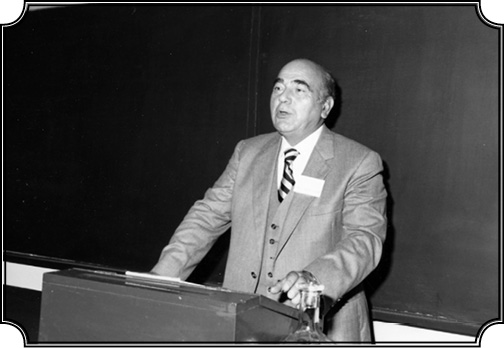
Karpat’ın hayatı Madison’la birlikte dünyanın bir ucundan bir ucuna kürsülerde geçecektir.
Yıl 1967. Siz Madison’a yerleşirken tam bu sıralarda aileniz de baba ocağını terk edip İstanbul’a yerleşmek için geliyordu galiba?
Evet. Aynı tarih. Yazın başında onlar İstanbul’a gelmişti. Geldiklerinde ben Amerika’daydım. Madison’daki üniversiteye tam zamanlı kürsü sahibi bir profesör olarak girmiştim. Yarım sene maaşlı izin verdiler beni bağlamak için. O tarihte ailem İstanbul’a geldiği için onları ziyaret edip yerleştirmek falan gerekiyordu. Onlara daha önce Etiler’de ev kiralayıp hazırlamıştım. Geldiğimde zaten o evde oturup yemek yedik hep birlikte. 1967 sonunda.
Zübeyde Ana nihayet İstanbul’a yerleşir
Kimler gelmişti ailenizden?
Annem, Cemal, hanımı ve oğlu, Adviye Ablam, eşi ve iki çocuğu. Ayşe eşiyle bir sene sonra geldi.
Ölen Vasfiye ablanızın çocukları?
Onlar orada kalmış. Bir de en büyük ablam Nazmiye gelmedi, baba evinde, Babadağ’da kaldı. Onun gelmesini ben de istememiştim, orada rahatları iyiydi. Her şeyleri var, büyük ev, bahçeler falan. Üstelik Hamit eniştem de oradaki Müslüman-Türk topluluğunun başıydı. Sarı Saltuk türbesine o bakıyor, camiye o bakıyor, namazları o kıldırıyordu. Yani oranın temel direğiydi, gelmesi iyi olmazdı. Onun da kız kardeşi falan buradaydı ama onlar da gelmek niyetinde değildi. Üstelik yaşları da büyüktü epeyce artık. Burada yeni hayat kurmaları çok güç olurdu. Kardeşim 35 eniştem 50 yaşındaydı, onlar için nispeten kolaydı. Onların gelişi de zor olmuş. Hiçbir şey alamamışlar yanlarına, su parası bile vermemişler, iki bavulla gelebilmişler. Almanya’dan dönenler acıyıp su vermişler. Bu şekilde ailem gelip yerleşti işte.
Kardeşiniz Cemal Bey anlatmıştı biraz, çok eziyetli bir yolculuk olmuş. Doğrudan Bulgaristan üzerinden giden trenle gitmelerine izin vermeyip Yugoslavya üzerinden gitmeye zorlamışlar…
Evet öyle olmuş. Neyse sonunda Sirkeci’de onları akrabalar karşılamış işte gelip eve yerleşmişler.
Hem sizin için hem aileniz için artık yeni bir safha başlıyor ama siz Amerika’da, onlar İstanbul’da bu kez.
Ve o zaman da yine benim açımdan çok önemli bir dönüm noktasıyla karşı karşıya kaldım. Türkiye’deki gelişmelere girmeden evvel şunu belirteyim ki 1967 yılı sonbaharında Wisconsin’da derslere başladım ve artık tüm zamanımı, “Osmanlı Tarihi ve Modern Türkiye Gelişmeleri” konusuna ayırıyorum ve nitekim ana derslerim de bu konular oldu. Bu önemli bir şeydi, zamanımı istediğim konulara ayırmak açısından. 1968 başında da Türkiye’ye geldim. Bu defa bir Ford Mustang arabayla. Bunu belirtiyorum, çünkü bu Mustang benim çalışmalarım, gezilerim, ilişkilerim üzerinde yeri olan bir vasıta, yani bir otomobil olmaktan çıktı, neredeyse alamet-i farikam oldu. O da başlı başına ilginç bir hikâye olur…
1967 yazında Türkiye’ye geldiniz, ailenizi yerleştirdiniz.
1967’de geldim, yerleştirdim, ailem geldiği için ben de iki ay kadar Türkiye’de kaldım. Ailem temmuz başında falan geldi. Onlar geldikten on gün sonra da ben yetiştim, iki ay onlarla kaldım.
Anneniz İstanbul’a yerleşme kararından hoşnut muydu, köyünü terk ettiği için üzgün müydü, neler konuştunuz?
Aslında gelmiş olmaktan dolayı memnundu çok. Zaten hep Cemal’le beraber olmak istiyordu. Cemal onun yanından hiç ayrılmadığı için hep onunla olmak istiyordu ve gene beraber olacakları için bundan memnundu. Cemal onun her şeyiydi. O nereye annem oraya. Zaten çok da akrabamız vardı İstanbul’da, Bandırma’da. Hepsi de ziyarete geldiler. Bizimkiler geldiği için onlar da, herkes de mutluydu yani.
Anneniz sebze ve meyvesini daha çok beğenmiş Türkiye’nin, kardeşiniz anlatıyordu bunu da. Hatta tekrar köyünü ziyarete gittiğinde hep İstanbul’daki lezzetleri methetmiş…
Evet, buradaki domatesin biberin tadını, meyveleri filan hep beğenirdi, söyler dururdu “buradakiler daha lezzetliymiş” diye. Daha da ucuz bulurdu. Ailemle biraz hasret giderdik işte ama ben bu 2 aylık sürenin tümünü onlarla geçiremedim.
Köyüne geri dönmek istemedi mi hiç?
İstemedi. Zaten iki yıl sonra köyümüzü ziyaret için gittiğinde ona Türkiye’deki kolera salgını nedeniyle aşı yapmışlar. Tansiyon hastasıydı ve aşı onu felç yapmış, kardeşim Cemal gidip annemi arabayla getirmiş. Bu olaydan 3-4 yıl sonra da öldü zaten.
Evet, 1974’te ölmüş galiba. Ailenizle daha fazla niye vakit geçiremediniz, akademik saha çalışmaları nedeniyle mi?
Öyle de denebilir. Bu arada anlatmak istediğim bir toplantı var. Gitmezden evvel de şöyle bir konu olmuştu: Brüksel’de Uluslararası Siyasi İlimler Cemiyeti’nin toplantısı vardı ve benim orada “İdeolojinin Sosyal ve Toplumsal Gelişmede Etkisi” diye bir tebliğim vardı. O zaman Amerika’da Edward Shills’in “İdeoloji devri bitti, ideoloji öldü, ideolojinin yerine artık çok rasyonel kararlar gelecek” diye ileri sürdüğü bir teori vardı. Ve bu teoriyi destekleyen birçok kişi çıkmıştı. Ben ise bunun tersini iddia ediyordum ve “ideoloji böyle doğup ölen bir şey değil, ihtiyaca göre üretilen, bilhassa toplumların değişiminde önemli bir araç olarak ihmal edilmemesi gereken bir şeydir. Böyle rastgele bir şekilde bir kenara itilmesi, ne gerçeklere, ne ilme uygun olur” demiştim. Edward Shills ile bu konuda bir hayli tartışmamız olmuştu. Brüksel’deki uluslararası konferansta ben bu tebliği sundum. Nitekim olaylar benim haklı olduğumu gösterdi ve sonra Shills de bunu kabul etti. İşte Brüksel’de birkaç gün bu toplantıya da katıldım. Tabii Brüksel’de Türkiye sefareti oraya katılan Türkler şerefine bir yemek verdi ve beni davet etmedi. Hatta arkadaşlardan, oraya katılan Türklerden bir iki tanesi “Sen davetli değilsin, çünkü sen Amerika’da ders veriyorsun” gibi böyle manasız şeyler söyledi.
Brüksel’deki Türk sefiri kim o sırada?
Yok, bu işte sefaretin parmağı yoktu. Bu durum bizim üniversitelerden oraya katılan kimseler tarafından yapılmıştı. Bunu da bana ileten Bahri Savcı’ydı, tanıyordum eskiden onu, o “sen davet edilmedin” demişti.
Akademik kıskançlıklar yani.
Akademik kıskançlıklar. Şerif Mardin de oradaydı falan, onların hepsi davete gittiler, ben uçağa atladım gerisin geriye Amerika’ya döndüm. 1968’in başında tekrar Türkiye’ye geldim ve bir süre İstanbul’da kaldıktan sonra Ankara’ya gittim. Çünkü o sırada şöyle bir gelişme oldu, Orta Doğu Teknik Üniversitesi’nin rektörü Kemal Kurdaş, bir toplantıda yanıma geldi, “Kemal Bey” dedi “siz daha evvel Orta Doğu’da bulunmuştunuz, ben size açık bir kontrat vereyim, istediğiniz zaman, Amerika’da ders vermediğiniz zaman bizim üniversiteye gelin, bizde ders verin.” Bu kadar açık, bana sonsuz itimat ve güven içeren böyle bir teklifi kabul ettim. Benim de istediğim bu, Türkiye’de çalışmak, öğrencilerin yetişmesine katkıda bulunmak istiyorum. Ve böylece beni gene açık bir kontratla Orta Doğu Teknik Üniversitesi’ne aldılar, normal maaş da verdiler. Amerika’dan ve başka ülkelerden gelenlere, yabancı oldukları için bir başka tipte yüksek maaş veriyorlar, bana gene bu defa Türk hocalarına verdikleri maaşı verdiler, itiraz etmedim. Böylece Orta Doğu Teknik Üniversitesi’ne gittim ve İstanbul’da da Robert Kolej’de de bir dersim vardı.
Bu arada Wisconsin sizi izinli mi saydı?
Wisconsin bana izin verdi. 1968’in başından, 1968’in Eylülüne kadar, yani bir sömestr buradayım ve unutmayınız, gencim, güçlüyüm, vız geliyor bana. Şimdi ben de hayret ediyorum “nasıl yapmışım bunu” diye.